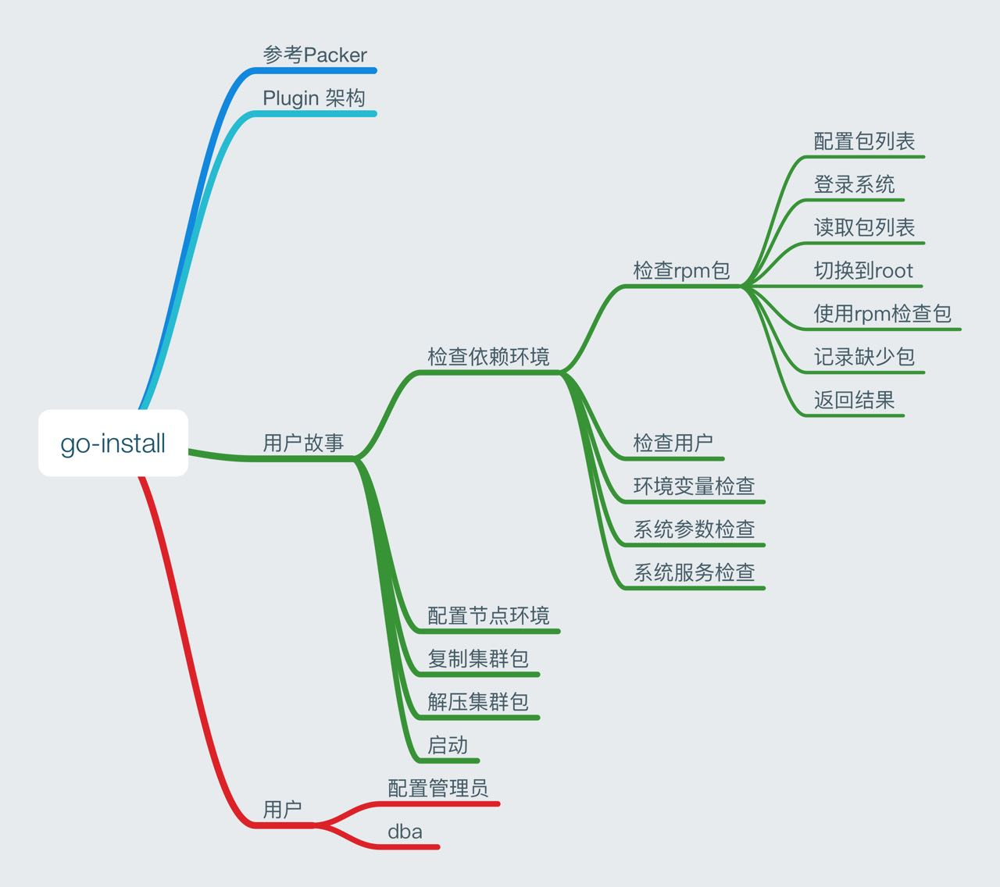

2016-12¶
2016-12-01¶
2016-12-02¶


{kind=link}
{kind=link}
2016-12-05¶
| 2016-12-05 08:58:58 | 你 | 早 |
| 2016-12-05 08:59:20 | 我 | 早，你昨天几点回来的 |
| 2016-12-05 08:59:37 | 你 | 六点到家的 |
| 2016-12-05 08:59:49 | 你 | 我老公感冒 今天请假了 |
| 2016-12-05 09:00:07 | 我 | 你的扁桃体怎么样了 |
| 2016-12-05 09:00:49 | 你 | 没事了 |
| 2016-12-05 09:01:07 | 你 | 已经消的差不多 |
| 2016-12-05 09:01:39 | 我 | 好的 |
| 2016-12-05 09:01:46 | 我 | 李杰怎么样 |
| 2016-12-05 09:02:15 | 你 | 她没事 |
| 2016-12-05 09:02:57 | 我 | 好的 |
| 2016-12-05 09:13:16 | 我 | 你们现在的立会都几点开 |
| 2016-12-05 09:14:23 | 你 | 人到齐就开 |
| 2016-12-05 09:14:39 | 你 | 一般半点 |
| 2016-12-05 09:14:49 | 我 | 嗯 |
| 2016-12-05 09:32:54 | 你 | 你妈妈出院了吗 |
| 2016-12-05 09:33:18 | 我 | 是，今天出院 |
| 2016-12-05 09:33:26 | 你 | 好的 |
| 2016-12-05 10:18:08 | 我 | 有事吗 |
| 2016-12-05 10:18:20 | 你 | 没事 |
| 2016-12-05 10:18:22 | 你 | 说通了 |
| 2016-12-05 10:18:40 | 我 | 好的，得给研发点压力了 |
| 2016-12-05 10:19:43 | 我 | 你今天有什么事情吗 |
| 2016-12-05 10:20:33 | 你 | 没事 |
| 2016-12-05 10:20:36 | 你 | 没什么事 |
| 2016-12-05 10:21:01 | 我 | 那你帮我写几个用户故事吧 |
| 2016-12-05 10:21:11 | 你 | 为什么是帮呢 |
| 2016-12-05 10:21:13 | 你 | 好啊 |
| 2016-12-05 10:21:34 | 你 | 同步工具的吗 |
| 2016-12-05 10:21:35 | 我 | 就是上次你写的检查rpm包的需求，我打算自己做一个 |
| 2016-12-05 10:21:47 | 你 | 好 |
| 2016-12-05 10:21:50 | 你 | 好的 |
| 2016-12-05 10:21:55 | 我 | 我想连安装包一起做 |
| 2016-12-05 10:22:02 | 你 | 你自己做啊 |
| 2016-12-05 10:22:07 | 你 | 好耶 |
| 2016-12-05 10:22:09 | 我 | 对 |
| 2016-12-05 10:22:13 | 你 | 好的 |
| 2016-12-05 10:22:19 | 你 | 好的 |
| 2016-12-05 10:22:26 | 你 | 我想想 |
| 2016-12-05 10:22:28 | 我 | 按照一个通用平台的方式 |
| 2016-12-05 10:22:57 | 我 | 你先照着安装包的样子先写几个用户故事 |
| 2016-12-05 10:23:01 | 你 | OK |
| 2016-12-05 10:23:06 | 你 | 好的 |
| 2016-12-05 10:23:08 | 你 | 我先想想 |
| 2016-12-05 10:23:14 | 我 | 嗯 |
| 2016-12-05 10:23:15 | 你 | 今天就给你写 |
| 2016-12-05 11:28:04 | 我 | 你看啥呢，那么认真 |
| 2016-12-05 11:28:14 | 你 | 写用户故事啊 |
| 2016-12-05 11:28:25 | 我 | 好 |
| 2016-12-05 11:28:32 | 你 | 这个比较好玩 |
| 2016-12-05 11:28:39 | 你 | 写起来很顺手 |
| 2016-12-05 11:29:12 | 我 | 好的，回来你可以和我一起做设计 |
| 2016-12-05 11:29:27 | 你 | 好啊 |
| 2016-12-05 11:29:29 | 你 | 太好了 |
| 2016-12-05 11:29:43 | 你 | 我这次写的 比上次又有超大的进步 |
| 2016-12-05 11:29:46 | 你 | 嘻嘻 |
| 2016-12-05 11:29:53 | 我 | 😄 |
| 2016-12-05 11:30:01 | 我 | 越来越厉害了 |
| 2016-12-05 11:30:06 | 你 | 对啊 |
| 2016-12-05 11:39:37 | 你 | 你打算什么时候开始做啊 |
| 2016-12-05 11:39:44 | 你 | 我好兴奋啊 |
| 2016-12-05 11:39:52 | 我 | 就是最近 |
| 2016-12-05 11:40:01 | 你 | 可以听你说设计了 |
| 2016-12-05 11:40:03 | 你 | 哈哈 |
| 2016-12-05 11:40:06 | 你 | |
| 2016-12-05 11:40:08 | 我 | 是呀 |
| 2016-12-05 13:39:17 | 你 | 忙吗 |
| 2016-12-05 13:39:22 | 你 | 我写的差不多了 |
| 2016-12-05 13:39:33 | 你 | 是不是写的有点快啊 |
| 2016-12-05 13:39:36 | 我 | 你发给我吧 |
| 2016-12-05 13:39:40 | 你 | 好的 |
| 2016-12-05 13:43:05 | 你 | 你先看吧 |
| 2016-12-05 13:43:14 | 我 | 正在看 |
| 2016-12-05 13:48:31 | 你 | 丢了一个 |
| 2016-12-05 13:48:37 | 你 | 你先看吧 |
| 2016-12-05 13:48:41 | 我 | 没事的 |
| 2016-12-05 13:53:50 | 我 | 我要去开会了，估计又是一下午，应该有空陪你 |
| 2016-12-05 13:55:11 | 你 | 好吧 |
| 2016-12-05 13:55:17 | 你 | 天天开会 |
| 2016-12-05 13:55:26 | 你 | 我的卡补回来了 |
| 2016-12-05 13:55:30 | 我 | 是呗，烦死了 |
| 2016-12-05 13:55:35 | 我 | 好的 |
| 2016-12-05 14:09:40 | 你 | 你开会去了么 |
| 2016-12-05 14:09:46 | 你 | 想跟你聊个话题 |
| 2016-12-05 14:10:28 | 我 | 好的，你说吧 |
| 2016-12-05 14:10:41 | 你 | 我最近在看康熙王朝 |
| 2016-12-05 14:10:51 | 你 | 看康熙怎么用人啥的 |
| 2016-12-05 14:10:58 | 我 | 嗯 |
| 2016-12-05 14:11:00 | 你 | 引发了一点点思考 |
| 2016-12-05 14:12:24 | 你 | 今早上 跟研发的说要让他们把那三天的工作补回来的时候 |
| 2016-12-05 14:12:40 | 你 | 贺津没说什么 小卜又开始嘚啵个没完 |
| 2016-12-05 14:13:00 | 你 | 意思就是补不回来 要时间 |
| 2016-12-05 14:13:11 | 你 | 我在想 怎么才能让他干活 |
| 2016-12-05 14:13:48 | 我 | 嗯 |
| 2016-12-05 14:13:54 | 你 | 刘杰就是不停的说 说什么做得好了领导看得见啊 出彩啥的 |
| 2016-12-05 14:14:06 | 你 | 就是灌鸡汤 还有画大饼 |
| 2016-12-05 14:14:15 | 你 | 我觉得这个根本没用 |
| 2016-12-05 14:14:33 | 我 | 没错 |
| 2016-12-05 14:15:55 | 你 | 我想的是 整个这个机会是难得的 是在提高自我 而且这个提高自我不是很虚的 是有逻辑的 至少是在不停的实践中体会scrum原则 学成也是自己的 没有给领导学 |
| 2016-12-05 14:16:31 | 你 | 跟 单纯的执行 给领导干成绩一点关系都没有 |
| 2016-12-05 14:17:52 | 你 | 还有就是 时间也好 设计也好 逼着做设计 甚至领导逼着加班 都不是单纯的在想着让我们出活 是在体会用户意识这个原则 |
| 2016-12-05 14:18:13 | 我 | 嗯 |
| 2016-12-05 14:18:22 | 你 | 我还想说的有一点比这个还深 我没想好 |
| 2016-12-05 14:18:43 | 你 | 但是 我跟他们都说不通 我觉得他们跟本不听 |
| 2016-12-05 14:18:50 | 你 | 还有就是刘杰老是捣乱 |
| 2016-12-05 14:19:00 | 你 | 老是灌鸡汤 研发的根本不care |
| 2016-12-05 14:20:03 | 你 | 我想 康熙王朝里有个桥段 |
| 2016-12-05 14:20:32 | 你 | 就是康熙收复台湾的时候 启用一个叫姚启圣的老将 |
| 2016-12-05 14:20:48 | 你 | 你可能不知道 背景 |
| 2016-12-05 14:20:54 | 你 | 我简单给你说下 |
| 2016-12-05 14:21:53 | 我 | 我知道 |
| 2016-12-05 14:21:56 | 你 | 就是姚启圣很有才 但是嘴很刁 刚开始做官很大 后来一直贬到九品 直到皇帝身边的周培公举荐了他 |
| 2016-12-05 14:22:03 | 你 | 你知道 那我就不说了 |
| 2016-12-05 14:22:04 | 我 | 我看过两遍 |
| 2016-12-05 14:22:35 | 你 | 康熙在找姚启圣的时候 姚启圣说了句话 说昏君杀人 明君诛心 |
| 2016-12-05 14:22:45 | 你 | 这里提到了诛心 |
| 2016-12-05 14:25:22 | 你 | 孝庄跟康熙说 统治最重要的在用人 用人最难得是得人心 |
| 2016-12-05 14:25:28 | 你 | 差不多这样的 |
| 2016-12-05 14:25:36 | 我 | 是 |
| 2016-12-05 14:26:16 | 你 | 我在想 这个得人心也好 诛心也好 到底是怎么回事 |
| 2016-12-05 14:27:24 | 你 | 孝庄最过人之处在于很会琢磨别人的心思，宫廷中各个关键人物，只要有风吹草动都逃不过孝庄的眼睛。 |
| 2016-12-05 14:27:58 | 你 | 康熙善于运用权术，工于心计 |
| 2016-12-05 14:30:28 | 我 | 还有吗 |
| 2016-12-05 14:30:35 | 你 | 没了 |
| 2016-12-05 14:30:41 | 你 | 乱吗 |
| 2016-12-05 14:30:58 | 我 | 有点 |
| 2016-12-05 14:31:05 | 你 | 哈哈 |
| 2016-12-05 14:31:10 | 我 | 你最后的结论是什么 |
| 2016-12-05 14:31:33 | 你 | 我的问题是 不知道啥叫琢磨别人的心思 |
| 2016-12-05 14:31:38 | 你 | 这件事不会干 |
| 2016-12-05 14:32:05 | 你 | 落实到工作中 不知道怎么跟小卜这种沟通 发挥他的能动性 |
| 2016-12-05 14:32:15 | 我 | 人性呀 |
| 2016-12-05 14:32:22 | 我 | 还有心理学 |
| 2016-12-05 14:33:22 | 我 | 孝庄的洞察人心的能力大多靠天赋和经验 |
| 2016-12-05 14:33:35 | 你 | 恩 |
| 2016-12-05 14:33:48 | 我 | 很多人也是一样 |
| 2016-12-05 14:34:44 | 我 | 但是通过对人性的了解和学习一些心理学也可以达到 |
| 2016-12-05 14:35:02 | 你 | 天赋指什么天赋 |
| 2016-12-05 14:35:16 | 我 | 我之前和你说要教你人性和心理学就是因为这个 |
| 2016-12-05 14:35:26 | 你 | 恩 |
| 2016-12-05 14:35:30 | 我 | 有的人天生就会看人 |
| 2016-12-05 14:35:37 | 你 | 恩 |
| 2016-12-05 14:35:44 | 你 | 你接着说 |
| 2016-12-05 14:36:53 | 我 | 每一个人都有自己的特点，只要不是精神病，大多还是有规律可循的 |
| 2016-12-05 14:37:03 | 你 | 恩 |
| 2016-12-05 14:37:06 | 你 | 是 |
| 2016-12-05 14:38:12 | 我 | 像小卜这样的其实他们组有还几个，只是大家表现的程度不同，胡祖会也一样 |
| 2016-12-05 14:38:33 | 你 | 恩 是 |
| 2016-12-05 14:39:04 | 我 | 我可以告诉你怎么对付他们，但是没有用，你还是不知道理论 |
| 2016-12-05 14:39:20 | 你 | 对啊 我不想让你告诉我 |
| 2016-12-05 14:39:22 | 我 | 所以我更想告诉你他们这样的原因 |
| 2016-12-05 14:39:24 | 你 | 因为没用 |
| 2016-12-05 14:39:35 | 我 | 然后你自己去想解决办法 |
| 2016-12-05 14:39:47 | 你 | 我现在不想你告诉我任何解决问题的方法 |
| 2016-12-05 14:40:46 | 你 | 这样我永远都不会自己做 |
| 2016-12-05 14:41:07 | 我 | 学习人性和心心理学最大的障碍是感性 |
| 2016-12-05 14:41:32 | 我 | 只有做到很高的理性才能去掌握人性 |
| 2016-12-05 14:42:05 | 你 | 恩 |
| 2016-12-05 14:42:08 | 我 | 要想做到好的理性就需要能克服自己的感性对自己的影响 |
| 2016-12-05 14:42:17 | 你 | 恩 |
| 2016-12-05 14:42:33 | 你 | 这点我比较难啊 |
| 2016-12-05 14:42:40 | 我 | 对呀 |
| 2016-12-05 14:42:50 | 我 | 你感性太强 |
| 2016-12-05 14:43:03 | 我 | 我现在也发愁 |
| 2016-12-05 14:43:29 | 我 | 其实你不知道，我曾经想过放弃了 |
| 2016-12-05 14:43:48 | 我 | 不想教你这些东西了 |
| 2016-12-05 14:44:18 | 我 | 主要还是怕你吃苦 |
| 2016-12-05 14:44:56 | 你 | 不是吧 |
| 2016-12-05 14:45:25 | 你 | 我觉得 逻辑性强的 会比较容易克服感性 |
| 2016-12-05 14:45:30 | 你 | 别放弃我啊 |
| 2016-12-05 14:45:46 | 我 | 不会的 |
| 2016-12-05 14:46:01 | 你 | 等我越来越因为不了解人性碰壁的话 会越来越想学习的 |
| 2016-12-05 14:46:33 | 我 | 嗯 |
| 2016-12-05 14:47:33 | 你 | 我现在越来越喜欢 因为。。。 所以。。。这种东西 |
| 2016-12-05 14:47:45 | 你 | 越来越不喜欢 感性的 没有理由的东西 |
| 2016-12-05 14:48:05 | 我 | [微笑] |
| 2016-12-05 14:48:18 | 你 | 不管接触什么 都会问为什么 想不出为什么的东西会让我失去安全感 |
| 2016-12-05 14:50:38 | 我 | 啊，这么严重 |
| 2016-12-05 14:50:48 | 你 | 对啊 |
| 2016-12-05 14:50:51 | 你 | 会 |
| 2016-12-05 14:51:04 | 你 | 不然就一直想为什么 |
| 2016-12-05 14:51:36 | 你 | 给你说个好玩的 |
| 2016-12-05 14:51:45 | 我 | 嗯 |
| 2016-12-05 14:52:22 | 你 | 你记得康熙有次南巡 在山西的时候给各官员训话 |
| 2016-12-05 14:52:29 | 你 | 好像叫听训 |
| 2016-12-05 14:53:09 | 你 | 当初是漠X接的驾 |
| 2016-12-05 14:54:38 | 你 | 然后康熙说 ：有人劝他 皇上不应该经常露面 才能猜不透 ，这是御人之术 不是道 |
| 2016-12-05 14:55:00 | 你 | 当时我跟李杰相视一下，接着看了 |
| 2016-12-05 14:55:01 | 你 | 笑死我了 |
| 2016-12-05 14:55:18 | 我 | 😀 |
| 2016-12-05 14:56:52 | 你 | 你是不是不知道笑点在哪啊 |
| 2016-12-05 14:57:11 | 我 | 是的 |
| 2016-12-05 14:57:22 | 你 | 那你还笑 |
| 2016-12-05 14:57:29 | 你 | 这是我跟李杰的秘密 |
| 2016-12-05 14:57:32 | 你 | 我俩都知道 |
| 2016-12-05 14:57:51 | 我 | 嗯 |
| 2016-12-05 15:02:37 | 我 | 刚才大崔训人呢[惊恐] |
| 2016-12-05 15:02:54 | 你 | 大崔在呢啊 你快别聊天了 |
| 2016-12-05 15:03:21 | 我 | 在旁边屋 |
| 2016-12-05 15:03:32 | 你 | 哦 训谁了 |
| 2016-12-05 15:04:03 | 我 | 财务总监 |
| 2016-12-05 15:10:04 | 我 | 无聊 |
| 2016-12-05 15:10:19 | 我 | 给你一篇文章看看吧 |
| 2016-12-05 15:11:18 | 我 | [链接] 项目经理的谎言 | 程序师 |
| 2016-12-05 15:12:09 | 你 | 我在看hadoop2.0呢 |
| 2016-12-05 15:12:22 | 你 | hadoop2.0的架构跟8611的差不多 |
| 2016-12-05 15:12:39 | 我 | 好的 |
| 2016-12-05 15:12:53 | 你 | namenode有多个 没有1.0的单点故障 |
| 2016-12-05 15:13:05 | 我 | 是 |
| 2016-12-05 15:13:08 | 你 | 跟8611的coordinator节点似的 |
| 2016-12-05 15:13:30 | 你 | 所以领导要hadoop2.0和8611的对比调研 |
| 2016-12-05 15:14:09 | 我 | 嗯 |
| 2016-12-05 15:39:10 | 我 | 我还要接着开同步工具的会[抓狂][抓狂][抓狂][抓狂] |
| 2016-12-05 15:39:16 | 你 | 我晕 |
| 2016-12-05 15:39:19 | 你 | 哈哈 |
| 2016-12-05 15:39:28 | 你 | 同步工具的会谁主持啊 还开呢吗 |
| 2016-12-05 15:39:58 | 我 | 都是陈婕主持 |
| 2016-12-05 15:40:20 | 你 | 谁参加啊 |
| 2016-12-05 15:40:31 | 你 | 不是周二开么 |
| 2016-12-05 15:40:36 | 你 | 现在改为周一了？ |
| 2016-12-05 15:40:52 | 我 | 不一定 |
| 2016-12-05 15:41:07 | 我 | 现在就是我和番薯，还有up的 |
| 2016-12-05 15:41:28 | 你 | 恩 |
| 2016-12-05 15:41:33 | 你 | up的也在做？ |
| 2016-12-05 15:42:25 | 我 | 没有做，一开始有他们，就一直让他们参加了 |
| 2016-12-05 15:42:46 | 你 | 嗯嗯 |
| 2016-12-05 15:43:52 | 你 | 田和旭明又开始不正经的聊天了 |
| 2016-12-05 15:44:03 | 你 | 说什么咬旭明喷出来的是肉 |
| 2016-12-05 15:44:09 | 你 | 油 |
| 2016-12-05 15:44:16 | 我 | 呵呵 |
| 2016-12-05 16:25:44 | 你 | 你又不搭理我 |
| 2016-12-05 16:25:46 | 你 | 哼 |
| 2016-12-05 16:25:55 | 你 | 总是显得我那么那么倒贴 |
| 2016-12-05 16:25:58 | 我 | 没有呀 |
| 2016-12-05 16:26:29 | 我 | 才不是呢，我是暗暗的关心你 |
| 2016-12-05 16:27:12 | 你 | 8611的coordiantor节点是share-nothing的吗 |
| 2016-12-05 16:28:05 | 我 | 是呀 |
| 2016-12-05 16:29:01 | 你 | 为什么采用8611这种架构 |
| 2016-12-05 16:29:07 | 你 | 是为了扩展性对吗 |
| 2016-12-05 16:29:15 | 我 | 差不多吧 |
| 2016-12-05 16:29:20 | 我 | 其实是历史原因 |
| 2016-12-05 16:29:34 | 我 | 8611就是8512的一个改进，或者说妥协 |
| 2016-12-05 16:29:47 | 你 | 说说呗 |
| 2016-12-05 16:29:53 | 你 | 我先给你说 |
| 2016-12-05 16:29:57 | 我 | 好 |
| 2016-12-05 16:29:58 | 你 | 然后你再给我说 |
| 2016-12-05 16:30:04 | 你 | 我给你说的hadoop |
| 2016-12-05 16:30:14 | 你 | 我刚看了 现在想跟8611做个对比 |
| 2016-12-05 16:30:38 | 你 | hadoop原来单点namenode的架构有扩展性问题 也有单点故障问题 |
| 2016-12-05 16:31:09 | 你 | 他是先把单个namenode改为多个namenode的方式 改善扩展性 |
| 2016-12-05 16:31:37 | 你 | 再通过多个namenode各自备份的形式 解决单点故障 |
| 2016-12-05 16:31:44 | 你 | 举个例子 |
| 2016-12-05 16:32:15 | 你 | 4个namenode节点 2个一组 互备 然后这两组代替原来的一个 |
| 2016-12-05 16:32:32 | 你 | 他的发展是这样的 |
| 2016-12-05 16:32:36 | 你 | 再说说8611 |
| 2016-12-05 16:33:58 | 你 | 8512是没有master节点的 所以没有单点故障 但是由于管理和计算绑定在一起 导致扩展性差 |
| 2016-12-05 16:34:05 | 你 | 8512节点数不能太多 |
| 2016-12-05 16:34:38 | 你 | 然后把管理和计算解耦了吗？出了个coordinator节点？？？ |
| 2016-12-05 16:34:40 | 你 | 是这样的吗 |
| 2016-12-05 16:35:21 | 你 | 解决了扩展性问题 但是多个coordinator节点之间有啥区别啊 没有单点故障吗？ |
| 2016-12-05 16:38:38 | 你 | 8611还是无master架构 hadoop始终都是有master架构 |
| 2016-12-05 16:42:47 | 我 | 你说的基本上对 |
| 2016-12-05 16:42:58 | 我 | 8611的coordinator是对等的 |
| 2016-12-05 16:43:15 | 你 | 这就是我的问题所在 |
| 2016-12-05 16:43:16 | 我 | 本质上是没有联系的 |
| 2016-12-05 16:43:34 | 你 | 对等的 那到底多少个c节点才合适啊 |
| 2016-12-05 16:44:19 | 我 | 楼下好像有一个公式 |
| 2016-12-05 16:44:39 | 我 | 就是一个gcluster对应多少gnode |
| 2016-12-05 16:44:57 | 你 | 那每个c节点都干啥啊 |
| 2016-12-05 16:44:59 | 你 | 就是职责 |
| 2016-12-05 16:45:08 | 你 | 我先说下 打断你下 |
| 2016-12-05 16:45:44 | 你 | 你看hadoop的多个namenode是可以根据应用分开的 不同的namenode负责一部分应用 但是我们的c节点没有这个功能 |
| 2016-12-05 16:45:49 | 你 | 大家都是一样一样的 |
| 2016-12-05 16:46:46 | 我 | hadoop那个是另外一个维度的功能，叫sharding |
| 2016-12-05 16:46:54 | 我 | 或者叫负载均衡 |
| 2016-12-05 16:47:16 | 你 | what |
| 2016-12-05 16:47:18 | 我 | 咱们的c节点是完全对等 |
| 2016-12-05 16:48:03 | 我 | 这是两个完全不同的架构 |
| 2016-12-05 16:50:07 | 我 | 你别听他瞎说，他说的模型不对 |
| 2016-12-05 16:50:24 | 你 | 我先听听 |
| 2016-12-05 16:50:28 | 你 | 有个感性认识 |
| 2016-12-05 16:52:16 | 我 | 他们都聚焦于具体的执行 |
| 2016-12-05 16:52:22 | 我 | 说的都不是模型 |
| 2016-12-05 16:52:28 | 你 | 恩 |
| 2016-12-05 16:52:39 | 你 | 我知道 他说的很多错的 |
| 2016-12-05 17:12:45 | 你 | 你说的很对 王志果然错的很离谱 |
| 2016-12-05 17:12:46 | 你 | 嘻嘻 |
| 2016-12-05 17:56:37 | 我 | 刚才我给二组开会，他们除了番薯站着，其他人都坐着 |
| 2016-12-05 17:56:56 | 你 | 真大爷 |
| 2016-12-05 17:57:04 | 你 | 这群败类 |
| 2016-12-05 17:57:33 | 我 | 我在考虑以后是不是常驻他们那 |
| 2016-12-05 17:57:46 | 我 | 不过那样和你聊天就麻烦了 |
| 2016-12-05 17:58:15 | 你 | 当然不能常驻了 |
| 2016-12-05 17:58:23 | 你 | 你要是常驻的话 就带我走 |
| 2016-12-05 17:58:53 | 我 | 好，我干脆把你拐走得了 |
| 2016-12-05 17:59:49 | 你 | 拐哪去？ |
| 2016-12-05 18:00:09 | 我 | 哪都行呀 |
| 2016-12-05 18:00:50 | 你 | 就逗我玩 |
| 2016-12-05 18:01:19 | 我 | 😄 |
| 2016-12-05 18:01:52 | 我 | 你今天是不是得早点回去呀 |
| 2016-12-05 18:02:01 | 你 | 恩 |
| 2016-12-05 18:02:09 | 你 | 二组汇报的怎么样啊 |
| 2016-12-05 18:02:13 | 你 | 你以后就晚点开 |
| 2016-12-05 18:02:24 | 我 | 是 |
| 2016-12-05 18:02:29 | 我 | 不过估计他们不在乎 |
| 2016-12-05 18:03:03 | 你 | 他们怎么能这样呢 |
| 2016-12-05 18:03:12 | 你 | 怎么这样呢 好奇怪啊 |
| 2016-12-05 18:03:16 | 我 | 死猪不怕开水烫 |
| 2016-12-05 18:03:21 | 你 | 一群年轻人 不思进取 |
| 2016-12-05 18:03:29 | 你 | 真是醉了 |
| 2016-12-05 18:03:36 | 我 | 无语呀 |
| 2016-12-05 18:13:34 | 我 | 你几点走？ |
| 2016-12-05 18:16:02 | 你 | 不知道 |
| 2016-12-05 18:16:10 | 你 | 等半点以后吧 |
| 2016-12-05 18:16:32 | 你 | 我的手套也丢了 |
| 2016-12-05 18:16:40 | 你 | 工卡丢了 |
| 2016-12-05 18:16:44 | 你 | 银行卡也丢了 |
| 2016-12-05 18:16:54 | 你 | 都是不同的时间丢的 |
| 2016-12-05 18:16:57 | 你 | 我真是服了 |
| 2016-12-05 18:17:05 | 我 | 怎么搞的 |
| 2016-12-05 18:17:25 | 我 | 是不是放哪忘了 |
| 2016-12-05 18:17:34 | 你 | 不知道 |
| 2016-12-05 18:17:41 | 你 | 无缘无故的找不到了 |
| 2016-12-05 18:18:01 | 我 | 你今天去哪了 |
| 2016-12-05 18:18:12 | 你 | 不是今天丢的 |
| 2016-12-05 18:18:35 | 我 | 哦，放北京了？ |
| 2016-12-05 18:18:44 | 你 | 没有 |
| 2016-12-05 18:19:30 | 我 | 唉，没准哪天就出来了了 |
| 2016-12-05 18:19:54 | 你 | 那是我最喜欢的手套 |
| 2016-12-05 18:19:57 | 你 | 怎么就没了 |
| 2016-12-05 18:19:58 | 你 | 唉 |
| 2016-12-05 18:20:14 | 我 | 最后一次是什么时候带的 |
| 2016-12-05 18:20:17 | 你 | 你记得周五咱们聚餐 我的工卡那天晚上还用 |
| 2016-12-05 18:20:27 | 你 | 我都有印象 无缘无故就丢了 |
| 2016-12-05 18:20:40 | 你 | 最后一次是开车的时候带的 |
| 2016-12-05 18:20:44 | 你 | 东东出差 |
| 2016-12-05 18:20:45 | 我 | 都一周啦 |
| 2016-12-05 18:20:54 | 你 | 都3周了快 |
| 2016-12-05 18:21:04 | 你 | 手套都5周了估计 |
| 2016-12-05 18:21:10 | 你 | 还是生病之前丢的 |
| 2016-12-05 18:21:16 | 我 | 哦 |
| 2016-12-05 18:21:30 | 你 | 唉 真气人 |
| 2016-12-05 18:21:33 | 我 | 那就买新的吧，旧的不去新的不来 |
| 2016-12-05 18:21:41 | 你 | 只能是买新的了 |
| 2016-12-05 18:21:52 | 你 | 看看吧 现在不着急用 我再等等 |
| 2016-12-05 18:21:54 | 你 | 再找找 |
| 2016-12-05 18:22:07 | 我 | 嗯 |
| 2016-12-05 18:24:31 | 你 | 咱俩又一天没说话 |
| 2016-12-05 18:24:52 | 我 | 要不现在出去走走 |
| 2016-12-05 18:24:56 | 你 | 不行 |
| 2016-12-05 18:25:01 | 你 | 我一会就回家 |
| 2016-12-05 18:25:13 | 你 | 你看我写的用户故事了吗 |
| 2016-12-05 18:25:14 | 我 | 好吧，明天找机会和你说话 |
| 2016-12-05 18:25:19 | 你 | 嘻嘻 |
| 2016-12-05 18:25:20 | 我 | 看了 |
| 2016-12-05 18:25:26 | 你 | 没事 咱俩面谈的机会很多 |
| 2016-12-05 18:25:33 | 我 | 嗯 |
| 2016-12-05 18:25:49 | 你 | 怎么没说写的怎么样啊 又怕打击我啊 |
| 2016-12-05 18:25:56 | 你 | 写的不对吗 |
| 2016-12-05 18:26:13 | 我 | 不是，我还没时间仔细琢磨呢 |
| 2016-12-05 18:26:28 | 你 | 这个项目完全你自己做吗 |
| 2016-12-05 18:26:41 | 我 | 现在是想自己做 |
| 2016-12-05 18:26:44 | 你 | 我写oa的话 是不是不能写这个任务啊 |
| 2016-12-05 18:26:51 | 我 | 到时候看看再说 |
| 2016-12-05 18:26:54 | 你 | 恩 |
| 2016-12-05 18:27:02 | 我 | 当然不能啦，这个项目是私人项目 |
| 2016-12-05 18:27:07 | 你 | 恩 好 |
| 2016-12-05 18:27:09 | 你 | 那我不写 |
| 2016-12-05 18:27:12 | 你 | 我就是问问 |
| 2016-12-05 18:27:19 | 你 | 我有的是事情写oa上 |
| 2016-12-05 18:27:47 | 我 | 嗯 |
| 2016-12-05 18:29:59 | 我 | 这个项目咱俩先做，我正好也教给你一些设计 |
| 2016-12-05 18:30:14 | 你 | 好啊好啊 |
| 2016-12-05 18:30:17 | 你 | 太好了 |
| 2016-12-05 18:30:21 | 我 | 等设计的差不多了再看我有没有时间，没有时间我就让宋文彬写代码 |
| 2016-12-05 18:30:28 | 你 | 好的 |
| 2016-12-05 18:30:30 | 你 | OK |
| 2016-12-05 18:32:21 | 你 | 我们面谈的时候也可以给我讲 |
| 2016-12-05 18:32:26 | 你 | 哈哈 |
| 2016-12-05 18:32:28 | 我 | 是 |
| 2016-12-05 18:33:04 | 你 | 我要回家了 |
| 2016-12-05 18:33:09 | 你 | 你几点走啊 |
| 2016-12-05 18:33:28 | 我 | 好的，我稍微晚点 |
| 2016-12-05 18:33:34 | 你 | 恩 |
{kind=link}
2016-12-06¶
| 2016-12-06 08:39:47 | 我 | 你今天好香 |
| 2016-12-06 09:00:27 | 你 | 有吗？ |
| 2016-12-06 09:00:44 | 你 | 我打球的装备忘带了，都已经收拾好了 |
| 2016-12-06 09:00:50 | 我 | 有呀 |
| 2016-12-06 09:01:02 | 我 | 啊，那你今天还去吗 |
| 2016-12-06 09:01:33 | 你 | 双十一的时候 东东给我买了面镜子 就跟我家小屋那个一样的 挂载一进门的右手边 |
| 2016-12-06 09:02:10 | 你 | 说是出门的时候能看到自己整体的样子 |
| 2016-12-06 09:02:24 | 我 | 😄 |
| 2016-12-06 09:02:33 | 你 | 我发现 想的不错 实际运行起来 我根本没时间站在那镜子面前照一下 |
| 2016-12-06 09:02:41 | 你 | 每天早上都特别着急 |
| 2016-12-06 09:03:14 | 你 | 还把墙打了两个眼 |
| 2016-12-06 09:03:23 | 我 | 所以人家都是放在卧室，在你最有时间的时候照镜子 |
| 2016-12-06 09:03:58 | 你 | 不行 |
| 2016-12-06 09:04:10 | 你 | 卧室里看不到穿着鞋的样子 |
| 2016-12-06 09:04:13 | 你 | 小屋有一个 |
| 2016-12-06 09:04:24 | 你 | 哈哈 是不是要求太高了 |
| 2016-12-06 09:04:40 | 我 | 不高呀 |
| 2016-12-06 09:07:04 | 你 | 小卜又说要晚到 |
| 2016-12-06 09:07:05 | 你 | 唉 |
| 2016-12-06 09:07:19 | 我 | 算了，不理他了 |
| 2016-12-06 09:07:28 | 你 | 你说他们组真是服了 每天6点准时走光 |
| 2016-12-06 09:07:32 | 我 | 我打算换掉他 |
| 2016-12-06 09:07:41 | 我 | 你看看谁合适 |
| 2016-12-06 09:07:44 | 你 | 好 |
| 2016-12-06 09:07:56 | 你 | 我这几天也都在留意 |
| 2016-12-06 09:08:05 | 我 | 嗯 |
| 2016-12-06 09:11:13 | 你 | 他们组的就剩下 赵建 张铭 王伟 宋明夏了 |
| 2016-12-06 09:11:18 | 你 | 别人都不行 |
| 2016-12-06 09:11:22 | 你 | 这几个我都不熟悉 |
| 2016-12-06 09:11:31 | 你 | 宋明夏怎么样 |
| 2016-12-06 09:11:44 | 我 | 一般，就是听话 |
| 2016-12-06 09:12:06 | 你 | 乔倩 胡组会 找兴华都不行 |
| 2016-12-06 09:12:11 | 你 | 王凤臣也不行 |
| 2016-12-06 09:12:14 | 你 | 就没人了 |
| 2016-12-06 09:13:44 | 我 | 我再想想吧 |
| 2016-12-06 09:13:56 | 你 | 恩 再观察观察 |
| 2016-12-06 09:33:25 | 我 | 你们开完了吗 |
| 2016-12-06 09:33:35 | 你 | 研发的都没来呢 |
| 2016-12-06 09:33:39 | 你 | 还没开 |
| 2016-12-06 10:05:33 | 我 | 今天是不是小卜没去开会 |
| 2016-12-06 10:05:40 | 你 | 是 |
| 2016-12-06 10:05:43 | 你 | 他说有事 |
| 2016-12-06 10:05:55 | 你 | 他们说今晚上加班 |
| 2016-12-06 10:06:03 | 我 | 你们在哪开的 |
| 2016-12-06 10:06:16 | 你 | 五楼洽谈室 |
| 2016-12-06 10:06:46 | 我 | 你们开的时候小卜来的，他也没过去 |
| 2016-12-06 10:07:22 | 你 | 没有 他说他没看到消息 |
| 2016-12-06 11:29:37 | 你 | 老田写的那个17年计划的邮件 根本不知道想表达个啥 |
| 2016-12-06 11:29:56 | 你 | 旭明和洪越都又问了他一次 |
| 2016-12-06 13:27:04 | 你 | 你看这个女人多聒噪 |
| 2016-12-06 13:27:29 | 我 | 是 |
| 2016-12-06 13:28:06 | 我 | 你刚才看什么呢 |
| 2016-12-06 13:28:15 | 我 | 抬的那么高 |
| 2016-12-06 13:28:46 | 你 | 你发的文章 抬高是扭脖子呢 |
| 2016-12-06 13:28:53 | 你 | 扬扬头舒服 |
| 2016-12-06 13:29:05 | 我 | 是，对颈椎有好处 |
| 2016-12-06 13:29:24 | 你 | yes |
| 2016-12-06 13:30:28 | 你 | 最近你们方案讨论好频繁啊 |
| 2016-12-06 13:30:32 | 你 | 你每个都过是吗 |
| 2016-12-06 13:31:03 | 我 | 对呀，就这样还会出问题呢 |
| 2016-12-06 13:31:26 | 我 | 而且过方案很过瘾，毕竟我现在已经没有时间做设计了 |
| 2016-12-06 13:31:37 | 我 | 就当成做设计了 |
| 2016-12-06 13:32:08 | 你 | 恩 |
| 2016-12-06 16:15:42 | 我 | 你忙啥呢 |
| 2016-12-06 16:24:17 | 你 | 需求 |
| 2016-12-06 16:24:52 | 我 | 哦，累吗 |
| 2016-12-06 16:29:00 | 你 | 不累 |
| 2016-12-06 16:29:31 | 我 | 好，我累了 |
| 2016-12-06 16:29:38 | 你 | 那你歇会吧 |
| 2016-12-06 16:29:57 | 我 | 嗯 |
| 2016-12-06 17:06:13 | 你 | 我觉得你冷落我了 |
| 2016-12-06 17:06:19 | 你 | 很不开心 |
| 2016-12-06 17:07:28 | 我 | 怎么可能，刚才不是还和你说你离我太远了 |
| 2016-12-06 17:08:12 | 我 | 我可舍不得冷落你 |
| 2016-12-06 17:09:25 | 我 | 你去哪了 |
| 2016-12-06 17:09:44 | 我 | 我想看看你那美丽的脸庞[流泪] |
| 2016-12-06 18:01:02 | 我 | 你几点回家？ |
| 2016-12-06 18:07:05 | 我 | 你咋不理我？ |
| 2016-12-06 18:07:16 | 我 | 生我气啦？ |
| 2016-12-06 18:07:27 | 你 | 不理你 |
| 2016-12-06 18:07:31 | 你 | 谁叫你冷落我 |
| 2016-12-06 18:07:48 | 我 | 没有呀，我怎么敢呢[流泪] |
| 2016-12-06 18:08:21 | 你 | 你怎么不敢啊 你当然敢了 |
| 2016-12-06 18:08:33 | 你 | 而且你会哄 气着了就哄哄呗 |
| 2016-12-06 18:08:37 | 你 | 这次哄不好了 |
| 2016-12-06 18:08:41 | 你 | 告诉你！！！！！！！！ |
| 2016-12-06 18:08:52 | 我 | 对不起，我错了 |
| 2016-12-06 18:09:11 | 我 | 下次拉着你一起讨论设计 |
| 2016-12-06 18:09:53 | 我 | 这样我也可以一直看着你[色] |
| 2016-12-06 18:10:01 | 你 | 不需要 |
| 2016-12-06 18:10:20 | 你 | 你今天在外屋坐了一天 |
| 2016-12-06 18:10:24 | 你 | 你知不知道 |
| 2016-12-06 18:10:29 | 我 | 我知道 |
| 2016-12-06 18:10:44 | 我 | 你每次过我都行注目礼 |
| 2016-12-06 18:10:53 | 我 | 就差敬礼了 |
| 2016-12-06 18:11:14 | 我 | 你总是非常不屑的样子 |
| 2016-12-06 18:11:24 | 我 | 搞的我好伤心[大哭] |
| 2016-12-06 18:13:47 | 我 | 今天中午怕吵到你睡觉，我还特意吃饭拖着，让他们晚点回来 |
| 2016-12-06 18:14:00 | 你 | 说的你可怜见的 |
| 2016-12-06 18:14:08 | 你 | 我看着你跟他们说话就生气 |
| 2016-12-06 18:14:14 | 你 | 我就故意不看你 |
| 2016-12-06 18:14:27 | 你 | 你不是喜欢说吗 你就说去呗 |
| 2016-12-06 18:14:29 | 你 | 哼 |
| 2016-12-06 18:14:33 | 我 | 我真的很可怜 |
| 2016-12-06 18:14:35 | 你 | 我还伤心呢 |
| 2016-12-06 18:15:31 | 我 | 我最喜欢和你说话呀 |
| 2016-12-06 18:15:54 | 我 | 要不然刚才也不会专门跑过去找你 |
| 2016-12-06 18:16:48 | 我 | 能和你说两句我就高兴的不得了 |
| 2016-12-06 18:16:57 | 你 | 真的假的 |
| 2016-12-06 18:17:00 | 你 | 没骗我？？？ |
| 2016-12-06 18:17:01 | 我 | 我就差蹦起来了 |
| 2016-12-06 18:17:05 | 我 | 没有呀 |
| 2016-12-06 18:17:07 | 你 | 我看你每次都不喜欢跟我说话 |
| 2016-12-06 18:17:12 | 你 | 跟我说话都是那样式的 |
| 2016-12-06 18:17:15 | 我 | 才不是呢 |
| 2016-12-06 18:19:08 | 我 | 我是一定要把住自己，不然就让大家都知道了 |
| 2016-12-06 18:19:18 | 我 | 矫枉过正 |
| 2016-12-06 18:19:27 | 你 | 恩 可以理解 |
| 2016-12-06 18:19:40 | 你 | 我肯定做不到 只能靠你了 |
| 2016-12-06 18:19:42 | 我 | 所以我才会让你伤心 |
| 2016-12-06 18:19:51 | 你 | 好吧 |
| 2016-12-06 18:19:58 | 你 | 还算合理 |
| 2016-12-06 18:20:10 | 我 | 这是我的真心话 |
| 2016-12-06 18:20:30 | 你 | 我相信了 |
| 2016-12-06 18:21:57 | 我 | 不生气了吧 |
| 2016-12-06 18:22:11 | 你 | 算了 |
| 2016-12-06 18:22:15 | 你 | 不想生了 |
| 2016-12-06 18:22:24 | 你 | 就是冷落我了 |
| 2016-12-06 18:22:27 | 我 | 你这句歧义很大 |
| 2016-12-06 18:22:38 | 我 | 好吧，我承认 |
| 2016-12-06 18:23:08 | 我 | 明天我绝不冷落你 |
| 2016-12-06 18:23:28 | 你 | 为啥 |
| 2016-12-06 18:23:35 | 你 | 为啥明天就不冷落我 |
| 2016-12-06 18:23:45 | 你 | 你先讨论吧 |
| 2016-12-06 18:23:47 | 我 | 谁错了 |
| 2016-12-06 18:23:58 | 我 | 永远不冷落你 |
| 2016-12-06 18:32:16 | 我 | 你几点走呀？ |
| 2016-12-06 18:32:27 | 你 | 耽误你们啦！！！！！！！！！ |
| 2016-12-06 18:32:33 | 你 | 我现在就想走 |
| 2016-12-06 18:32:39 | 你 | 不想在这呆着 |
| 2016-12-06 18:32:57 | 我 | 我看看你吧 |
| 2016-12-06 18:34:57 | 我 | 别皱眉 |
| 2016-12-06 18:35:10 | 你 | 为什么听你的 |
| 2016-12-06 18:35:42 | 我 | 我忘了我该说啥了 |
| 2016-12-06 18:37:07 | 你 | 你知道我这是什么行为吗 |
| 2016-12-06 18:37:16 | 我 | 你占据了我整个大脑 |
| 2016-12-06 18:37:30 | 我 | 我没法并行了[抓狂] |
| 2016-12-06 18:38:34 | 我 | 我其实是在胡说 |
| 2016-12-06 19:02:12 | 我 | 你又和贺津谈心去了，我嫉妒啦 |
| 2016-12-06 19:16:50 | 我 | 你还需要多久 |
| 2016-12-06 19:17:44 | 你 | 不知道 |
| 2016-12-06 19:18:05 | 你 | 说还有十几分钟 |
| 2016-12-06 19:19:31 | 我 | 今天太晚了 |
| 2016-12-06 19:20:44 | 你 | 你回家吧 |
| 2016-12-06 19:20:58 | 你 | 跟杨丽颖一起走，多好 |
| 2016-12-06 19:21:00 | 我 | 好的 |
2016-12-07¶
| 2016-12-07 09:14:26 | 我 | 今天怎么晚了，有事吗 |
| 2016-12-07 09:14:58 | 你 | 没事 东东今早出差了 |
| 2016-12-07 09:15:00 | 你 | 我多睡了会 |
| 2016-12-07 09:15:11 | 我 | 好的 |
| 2016-12-07 09:15:21 | 我 | 怎么又出差了 |
| 2016-12-07 09:15:46 | 你 | 明天就回来 |
| 2016-12-07 09:16:16 | 我 | 还好 |
| 2016-12-07 09:17:24 | 你 | 王志新天天买饼 |
| 2016-12-07 09:17:31 | 你 | 搞得我浑身大饼味 |
| 2016-12-07 09:17:49 | 我 | 唉 |
| 2016-12-07 09:28:07 | 你 | 研发的到现在还没来 |
| 2016-12-07 09:29:28 | 我 | 这种情况持续多久了 |
| 2016-12-07 10:02:22 | 你 | 亲 站立会刘杰被小卜气哭了 |
| 2016-12-07 10:02:34 | 我 | 怎么啦 |
| 2016-12-07 10:02:56 | 你 | 刘杰说他们站立会老是迟到 保证不了时间 问什么时候能接受 |
| 2016-12-07 10:03:01 | 你 | 小卜说10点 |
| 2016-12-07 10:03:18 | 你 | 刘杰说 10点的话 报告杨总的可能就是前一天的任务 |
| 2016-12-07 10:03:33 | 你 | 小卜就开始巴拉巴拉的说了半天 |
| 2016-12-07 10:03:36 | 你 | 情绪特别激动 |
| 2016-12-07 10:04:18 | 你 | 说什么商量开会时间 怎么说10点又不行啥的 |
| 2016-12-07 10:04:45 | 我 | 他最近总是迟到吗 |
| 2016-12-07 10:04:58 | 你 | 他最近家里装修 |
| 2016-12-07 10:05:05 | 你 | 后来他给刘杰道歉了 |
| 2016-12-07 10:05:29 | 你 | 这事你知道就行 先沉淀沉淀 |
| 2016-12-07 10:05:48 | 你 | 后来大家定的9：30 我说以后这个时间不允许迟到 |
| 2016-12-07 10:06:07 | 你 | 大家没说啥 |
| 2016-12-07 10:06:50 | 你 | 小卜说他保证不了 不知道什么时候就有事 我说你保证不了你就在微信群里说吧 要是你来的时候 我们没开完 就过来开 |
| 2016-12-07 10:07:04 | 我 | 嗯 |
| 2016-12-07 10:07:14 | 你 | 其实吵的也不是很厉害 |
| 2016-12-07 10:07:32 | 你 | 但是后来马姐也跟着凑热闹 说了刘杰两句 |
| 2016-12-07 10:07:50 | 你 | 刘杰就委屈的哭了 不过没当着别人 跟我哭的 |
| 2016-12-07 10:08:00 | 我 | 马姐说刘杰什么 |
| 2016-12-07 10:08:36 | 你 | 就是刘杰说话的时候 马姐参合 刘杰说了句『闭嘴』 就是随口说的 大家也经常这么说话 |
| 2016-12-07 10:08:43 | 你 | 马姐就说 刘杰没礼貌 |
| 2016-12-07 10:08:53 | 你 | 马姐就是倚老卖老 |
| 2016-12-07 10:08:59 | 你 | 根本不用搭理她 |
| 2016-12-07 10:21:33 | 我 | 你昨天和贺津聊什么了 |
| 2016-12-07 10:21:50 | 你 | 我说二组加班的人少 |
| 2016-12-07 10:22:19 | 你 | 他说加班效率不高 写了一天代码了 脑子成浆糊了都 |
| 2016-12-07 10:22:36 | 你 | 后来又说 加班写的代码质量不高啥的 |
| 2016-12-07 10:22:41 | 你 | 就随便说了两句 |
| 2016-12-07 10:23:11 | 你 | 后来我就问他为什么8t到8a的断点续传实现不了 他给我讲了讲整个过程 |
| 2016-12-07 10:23:15 | 你 | 我就回来了 |
| 2016-12-07 10:23:21 | 我 | 哦 |
| 2016-12-07 10:24:33 | 你 | 这个电脑够他得瑟一个月了 |
| 2016-12-07 10:24:41 | 你 | 还没来就得瑟了一个月 |
| 2016-12-07 10:24:49 | 我 | 是 |
| 2016-12-07 11:15:05 | 我 | 别纠结了，我只是和你多说几句话 |
| 2016-12-07 11:15:24 | 我 | 具体的东西我私下告诉你 |
| 2016-12-07 11:15:29 | 你 | 好吧 |
| 2016-12-07 13:23:27 | 你 | 你睡觉了吗 |
| 2016-12-07 13:23:30 | 你 | 我睡醒了 |
| 2016-12-07 13:23:42 | 我 | 我也刚醒 |
| 2016-12-07 13:24:18 | 你 | 恩 |
| 2016-12-07 13:40:53 | 我 | 你还在写需求吗 |
| 2016-12-07 13:41:08 | 你 | 我在回复赵学庆邮件 |
| 2016-12-07 13:41:14 | 你 | 这个人这是太厉害了 |
| 2016-12-07 13:41:29 | 你 | 你说东 他非得说西 |
| 2016-12-07 13:41:36 | 你 | 反正你问啥我不答啥 |
| 2016-12-07 13:42:03 | 我 | 是，就会胡搅蛮缠 |
| 2016-12-07 13:42:31 | 你 | 你看下35392 |
| 2016-12-07 13:42:42 | 你 | 然后我把他回复的给你看看 |
| 2016-12-07 13:42:43 | 我 | 好 |
| 2016-12-07 13:55:44 | 我 | 看完了 |
| 2016-12-07 13:56:18 | 你 | 这是他的回复『用户数据来源很多，要统一管理入库情况。 发起IP是dispcli 控制文件是85的，86的是参数，我这里是兼顾2个版本集群。』 |
| 2016-12-07 14:02:25 | 你 | 我一直打哈欠 |
| 2016-12-07 14:02:45 | 我 | 没睡够吧 |
| 2016-12-07 14:03:03 | 我 | 我上午也是一直打哈欠 |
| 2016-12-07 14:03:24 | 你 | 啊？ |
| 2016-12-07 14:03:29 | 你 | 不知道 |
| 2016-12-07 14:03:38 | 你 | 你睡觉就坐着睡吗 |
| 2016-12-07 14:03:44 | 我 | 对呀 |
| 2016-12-07 14:18:16 | 你 | 老王 我想跟你说 早上咱们说的纬度的事 |
| 2016-12-07 14:18:26 | 我 | 说吧 |
| 2016-12-07 14:18:36 | 你 | 这些纬度之间不是绝对对等的 |
| 2016-12-07 14:18:44 | 你 | 有的是有关系的 有的没关系 |
| 2016-12-07 14:18:58 | 你 | 给你举个例子 我这么说说不清楚 |
| 2016-12-07 14:19:47 | 我 | 好的 |
| 2016-12-07 14:20:28 | 你 | 你比如 全量同步 整库同步/列映射同步 单线程同步/多线程并发 显示进度/不显示进度 这个纬度 |
| 2016-12-07 14:20:53 | 你 | 进度这个纬度和别的就不怎么相干啊 |
| 2016-12-07 14:21:23 | 你 | 但是前两个 就必须得排列组合一下 才能做 |
| 2016-12-07 14:22:09 | 你 | 就是要跑通的那条线 一定得涉及到前两个纬度中的某个点 但是可以没有进度这个纬度 |
| 2016-12-07 14:22:49 | 我 | 说的没错 |
| 2016-12-07 14:23:21 | 你 | 不过不显示进度 也是这个纬度中的一个点 |
| 2016-12-07 14:23:51 | 你 | 我又说乱了 |
| 2016-12-07 14:24:04 | 你 | 这个例子不好 |
| 2016-12-07 14:24:08 | 你 | 你看rpm包的 |
| 2016-12-07 14:24:12 | 我 | 别着急 |
| 2016-12-07 14:24:14 | 你 | 你想听我说么 |
| 2016-12-07 14:24:21 | 我 | 当然啦 |
| 2016-12-07 14:26:33 | 你 | 可能是我想错了 |
| 2016-12-07 14:26:43 | 我 | 怎么啦 |
| 2016-12-07 14:26:52 | 我 | 我没觉得你错呀 |
| 2016-12-07 14:29:07 | 我 | 你被自己困住了吧 |
| 2016-12-07 14:29:12 | 你 | 哈哈 |
| 2016-12-07 14:29:21 | 你 | 也不是 可能是我喜欢偷懒吧 |
| 2016-12-07 15:03:29 | 你 | 连不上了 |
| 2016-12-07 15:04:20 | 我 | 那就回来吧 |
| 2016-12-07 15:22:12 | 你 | 今早上开晨会的时候咋的了 |
| 2016-12-07 15:22:22 | 你 | 洪越跟小白说啥了 |
| 2016-12-07 15:23:04 | 我 | 就是让小白推动一下 |
| 2016-12-07 15:23:30 | 我 | 说需求反馈单写的不好 |
| 2016-12-07 15:24:31 | 我 | 怎么了，出什么事了 |
| 2016-12-07 15:26:08 | 你 | 没事，随便问问 |
| 2016-12-07 15:26:10 | 你 | 没事 |
| 2016-12-07 15:26:18 | 我 | 好的 |
| 2016-12-07 16:08:42 | 你 | 培训我用听吗 |
| 2016-12-07 16:08:46 | 你 | 对我有用吗 |
| 2016-12-07 16:08:59 | 你 | 你去吗 |
| 2016-12-07 16:09:02 | 我 | 没用，太底层的技术 |
| 2016-12-07 16:09:07 | 你 | 好吧 |
| 2016-12-07 16:09:09 | 我 | 我稍微晚点过去 |
| 2016-12-07 16:09:10 | 你 | 那不去了 |
| 2016-12-07 16:09:16 | 你 | 你又去啊！！！！ |
| 2016-12-07 16:10:02 | 我 | 那我不去了 |
| 2016-12-07 16:12:35 | 你 | 那咱们聊天吧 |
| 2016-12-07 16:12:42 | 我 | 好呀 |
| 2016-12-07 16:12:46 | 你 | 8个需求 就剩下2个了 |
| 2016-12-07 16:12:53 | 你 | 我跟你这样说话没事吧 |
| 2016-12-07 16:13:05 | 你 | 我是不是跑你那跑的太勤了 |
| 2016-12-07 16:13:06 | 我 | 没事，最多是洪越生气 |
| 2016-12-07 16:13:20 | 你 | 他现在不敢生 |
| 2016-12-07 16:13:22 | 你 | 也不生 |
| 2016-12-07 16:13:24 | 你 | 没事 |
| 2016-12-07 16:13:29 | 我 | 是 |
| 2016-12-07 16:13:33 | 你 | 你就直接教我写需求 他也不生气 |
| 2016-12-07 16:13:51 | 你 | 我看今天小白白他好几眼 |
| 2016-12-07 16:14:02 | 你 | 所以问了问晨会发生什么了 |
| 2016-12-07 16:14:30 | 我 | 别提了，这事确实太别扭了 |
| 2016-12-07 16:15:00 | 你 | 咋了 |
| 2016-12-07 16:15:06 | 你 | 说说呗 |
| 2016-12-07 16:15:10 | 我 | 好的 |
| 2016-12-07 16:15:11 | 你 | 我今晚上送你吧 |
| 2016-12-07 16:15:16 | 你 | 可以晚回去会 |
| 2016-12-07 16:15:18 | 我 | 好呀 |
| 2016-12-07 16:15:20 | 你 | 但是不能太晚 |
| 2016-12-07 16:15:28 | 我 | 那我就早点走 |
| 2016-12-07 16:15:33 | 我 | 可以多待一会 |
| 2016-12-07 16:15:37 | 你 | 恩 你安排下 |
| 2016-12-07 16:15:45 | 你 | 最好今天老田早走 |
| 2016-12-07 16:15:49 | 你 | 我早上来的太晚了 |
| 2016-12-07 16:16:02 | 我 | 没事的，他才不关心你的工时呢 |
| 2016-12-07 16:16:12 | 我 | 我和你说说上午的事情吧 |
| 2016-12-07 16:16:22 | 你 | 好 |
| 2016-12-07 16:16:33 | 我 | 赵学庆写的需求你也看了，简直是没法的 |
| 2016-12-07 16:16:49 | 你 | 对啊 |
| 2016-12-07 16:16:59 | 我 | 洪越就生气，他又不想直接找赵学庆，就想拉一个垫背的 |
| 2016-12-07 16:17:06 | 你 | 哈哈 |
| 2016-12-07 16:17:25 | 我 | 今天晨会上洪越就提出来这个反馈单质量太差了 |
| 2016-12-07 16:17:49 | 你 | 然后呢 |
| 2016-12-07 16:17:54 | 我 | 说反馈单都是pst录入的，是不是pst把一下质量 |
| 2016-12-07 16:18:08 | 你 | 恩 |
| 2016-12-07 16:18:12 | 我 | 然后老田就说那就打回去 |
| 2016-12-07 16:18:22 | 你 | 小白说啥了吗 |
| 2016-12-07 16:18:41 | 我 | 小白说要不就直接联系用户吧 |
| 2016-12-07 16:18:55 | 我 | 结果他们三个就扯上了 |
| 2016-12-07 16:19:12 | 我 | 洪越是想把这个事情推出去，让别人去找赵学庆 |
| 2016-12-07 16:19:17 | 你 | 我看今天小白那眼神不对劲 |
| 2016-12-07 16:19:23 | 你 | 恩 |
| 2016-12-07 16:19:40 | 我 | 老田是不理洪越，就说我们不是有规定吗，就按照规定来 |
| 2016-12-07 16:20:02 | 你 | 恩 |
| 2016-12-07 16:20:17 | 我 | 小白就说pst只是管录入，反馈单的质量问题他也搞不定，需要去和赵学庆联系 |
| 2016-12-07 16:20:25 | 你 | 哈哈 |
| 2016-12-07 16:20:27 | 你 | 真好笑 |
| 2016-12-07 16:20:46 | 我 | 最后不就是这么一个结果吗 |
| 2016-12-07 16:20:55 | 你 | 嗯嗯 知道了 |
| 2016-12-07 16:21:17 | 你 | 电话跟赵学庆说话也是 他老是拐到实现上去 |
| 2016-12-07 16:21:32 | 你 | 然后提的这些需求都没有现场问题 |
| 2016-12-07 16:21:34 | 我 | 对，他就那样 |
| 2016-12-07 16:21:43 | 你 | 什么都是虚的 |
| 2016-12-07 16:21:47 | 你 | 没有任何指标 |
| 2016-12-07 16:21:57 | 你 | 用户紧急程度 没有 |
| 2016-12-07 16:22:03 | 你 | 啥也不知道 |
| 2016-12-07 16:22:05 | 我 | 本身这些就都是他想象出来的 |
| 2016-12-07 16:22:24 | 你 | 对 用户场景也没有 |
| 2016-12-07 16:22:36 | 你 | 任何关于用户的数据都是 ：无 |
| 2016-12-07 16:23:00 | 我 | 和他交流其实没有任何意义 |
| 2016-12-07 16:23:07 | 我 | 洪越就是偷懒 |
| 2016-12-07 16:23:20 | 你 | 他说让找用户了 但是洪越说不用 |
| 2016-12-07 16:23:22 | 我 | 这些事情就应该跳过赵学庆直接找用户 |
| 2016-12-07 16:23:42 | 你 | 可能洪越怕出差？ |
| 2016-12-07 16:23:43 | 我 | 你看着吧，没准最后还是得找用户 |
| 2016-12-07 16:23:44 | 你 | 不知道 |
| 2016-12-07 16:23:55 | 你 | 那就不管了 |
| 2016-12-07 16:24:04 | 我 | 这事后面会有两种情况 |
| 2016-12-07 16:24:28 | 你 | 不了了之 和 闹到客户那 |
| 2016-12-07 16:24:37 | 我 | 一种是继续由开发中心主导，那么老杨最终就会关注，然后让洪越去见客户 |
| 2016-12-07 16:25:25 | 我 | 一种是楼下主导，那么老张可能就会直接去找客户，最后开发中心就是写一个用需完事 |
| 2016-12-07 16:25:37 | 你 | 哦 |
| 2016-12-07 16:25:48 | 我 | 这个项目的是比较重要的 |
| 2016-12-07 16:25:55 | 你 | 但是赵说这些都建议在8611上做 |
| 2016-12-07 16:26:00 | 我 | 之前也是闹得鸡飞蛋打的 |
| 2016-12-07 16:26:02 | 你 | 8512只是看能不能做 |
| 2016-12-07 16:26:06 | 你 | 是吧 |
| 2016-12-07 16:26:33 | 我 | 其实就是赵学庆瞎嚷嚷，把事情闹大 |
| 2016-12-07 16:26:57 | 你 | 是 |
| 2016-12-07 16:27:02 | 我 | 闹的武总都觉得这个项目要完蛋了，然后给老杨压力 |
| 2016-12-07 16:27:15 | 我 | 其实远还没到那个程度 |
| 2016-12-07 16:27:21 | 你 | 8个需求 2个根本不是需求 4个8611在做 |
| 2016-12-07 16:27:29 | 你 | 哈哈 |
| 2016-12-07 16:27:32 | 你 | 哈哈 |
| 2016-12-07 16:27:38 | 你 | 赵学庆这么厉害啊 |
| 2016-12-07 16:27:45 | 我 | 只是大家都是一条线上的蚂蚱 |
| 2016-12-07 16:27:55 | 你 | 唉 |
| 2016-12-07 16:27:59 | 你 | 无所谓啦 |
| 2016-12-07 16:28:12 | 我 | 他这么一闹，谁都不敢说没这么回事，谁都不敢承担责任 |
| 2016-12-07 16:28:29 | 你 | 那肯定的 |
| 2016-12-07 16:28:41 | 我 | 就不停的往后面推，最后就是研发承担压力 |
| 2016-12-07 16:29:01 | 你 | 好吧 |
| 2016-12-07 16:29:29 | 你 | 不说这个了 |
| 2016-12-07 16:29:31 | 你 | 说点别的 |
| 2016-12-07 16:29:35 | 我 | 好 |
| 2016-12-07 16:30:04 | 你 | 给你看个用户故事 |
| 2016-12-07 16:30:12 | 我 | 好 |
| 2016-12-07 16:30:38 | 你 | 安装8512集群时，依赖的红帽6.4版本操作系统rmp不全，dba用户执行检查工具脚本，检查完成后，不允许用户安装集群。 |
| 2016-12-07 16:30:53 | 你 | 还有这个 |
| 2016-12-07 16:31:01 | 你 | 安装某集群时，依赖的某版本操作系统rmp不全，dba用户执行检查工具脚本，检查完成后，不允许用户安装集群。 |
| 2016-12-07 16:31:37 | 你 | 说第二个是史诗级的 是因为他把集群版本和操作系统版本的纬度给抽象了对吧 |
| 2016-12-07 16:31:49 | 我 | 对 |
| 2016-12-07 16:32:22 | 你 | 那我就明白你的意思了 |
| 2016-12-07 16:32:36 | 我 | [微笑] |
| 2016-12-07 16:32:41 | 你 | 但是 |
| 2016-12-07 16:33:45 | 你 | 对于dba来说 就是这个rpm包的需求来说 集群版本和操作系统版 根本不是dba这个执行者的纬度 |
| 2016-12-07 16:34:37 | 你 | 因为dba对检查工具的操作 实在检查是否合格 不在检查是否全 是否全是配管的执行者对检查工具的操作 |
| 2016-12-07 16:35:14 | 我 | 接着说 |
| 2016-12-07 16:35:23 | 你 | 上边那两个用户故事 对于dba这个执行者来说 是没有区别的 |
| 2016-12-07 16:35:48 | 你 | 也就是我递交给研发的时候 这两个用户故事是一样一样的 |
| 2016-12-07 16:37:56 | 我 | ok，但是你从研发的角度，或者从产品形态的角度看就不一样了 |
| 2016-12-07 16:38:50 | 你 | 我觉得我说的没有那么高的层次呢 |
| 2016-12-07 16:39:01 | 你 | 等我说完啊 |
| 2016-12-07 16:39:05 | 我 | 好的 |
| 2016-12-07 16:39:53 | 你 | 这是dba这一摊的 那配管那一摊 就必须体现 集群版本和操作系统版 这两个纬度了 而且这两个是很重要的纬度 |
| 2016-12-07 16:40:21 | 你 | 通过配管的这两个纬度 就体现产品形态了啊 |
| 2016-12-07 16:41:22 | 你 | 就是说 自动兼容这个用户价值 是通过配管配置文件 实现的 用户接口也是配置文件 如果研发的提出更好的方式 也可以接受 不用配置文件的形式 |
| 2016-12-07 16:50:11 | 你 | 你怎么不搭理我了 |
| 2016-12-07 16:50:23 | 我 | 没有呀，等你继续说呢 |
| 2016-12-07 16:50:55 | 你 | 我说完了 等你说呢 |
| 2016-12-07 16:51:08 | 我 | 啊，这就说完了 |
| 2016-12-07 16:51:10 | 你 | 算了 这个面谈吧 |
| 2016-12-07 16:51:15 | 你 | 我看你也没听 |
| 2016-12-07 16:51:16 | 你 | 看书呢吗 |
| 2016-12-07 16:52:06 | 我 | 没有呢，你们开会的时候我看的 |
| 2016-12-07 16:53:00 | 我 | 你刚才说的这些还差一点就达到我的目的了 |
| 2016-12-07 16:53:07 | 你 | 啊？？？ |
| 2016-12-07 16:53:10 | 你 | 还差一点 |
| 2016-12-07 16:53:31 | 我 | 我的目标是让你去体会维度 |
| 2016-12-07 16:53:54 | 我 | 你现在说的都是维度交集以后的结果 |
| 2016-12-07 16:53:55 | 你 | 我又关注细节了？ |
| 2016-12-07 16:54:21 | 我 | 也不算 |
| 2016-12-07 16:54:26 | 你 | 纬度我觉得我已经知道了 |
| 2016-12-07 16:55:02 | 你 | 面谈的时候说吧 |
| 2016-12-07 16:55:03 | 你 | 你说呢 |
| 2016-12-07 16:55:13 | 我 | 也行吧 |
| 2016-12-07 16:56:00 | 你 | 全量那个没有细化的用户故事 你的意思是怕我丢纬度的点 或者是丢纬度对吗 |
| 2016-12-07 16:56:17 | 你 | 你是不是从现在写的看不出纬度是哪几个啊 |
| 2016-12-07 16:56:19 | 我 | 同步工具的你不用考虑 |
| 2016-12-07 16:56:23 | 你 | 好 |
| 2016-12-07 16:56:28 | 你 | 那我就不想了 |
| 2016-12-07 16:56:41 | 你 | 你是在找话题 跟我说话吧 |
| 2016-12-07 16:56:43 | 你 | 哈哈 |
| 2016-12-07 16:57:12 | 我 | 对呀 |
| 2016-12-07 16:57:16 | 你 | 好 |
| 2016-12-07 16:57:31 | 我 | 因为rpm包这事是我私下里做，说多了让他们听见不好 |
| 2016-12-07 16:58:05 | 我 | 我看见你现在做同步工具遇到障碍了，心气有点低 |
| 2016-12-07 16:58:18 | 我 | 所以用这个项目带带你 |
| 2016-12-07 17:03:31 | 我 | 是不是没兴趣和我聊了 |
| 2016-12-07 17:03:45 | 你 | 何出此言啊 |
| 2016-12-07 17:03:47 | 你 | 没有啊 |
| 2016-12-07 17:03:55 | 我 | 逗你呢 |
| 2016-12-07 17:03:57 | 你 | 我心气低是让研发的气的 |
| 2016-12-07 17:04:05 | 我 | 我知道 |
| 2016-12-07 17:04:29 | 我 | 我还是那句话，让子弹先飞一会 |
| 2016-12-07 17:04:37 | 你 | 恩 |
| 2016-12-07 17:04:45 | 我 | 我带你玩玩好玩的事情 |
| 2016-12-07 17:04:52 | 你 | 啥啊 |
| 2016-12-07 17:05:19 | 你 | 我没事 研发的气我 我就不管事了 把目标集中在PO的活上 本来我也不是团队一员 对吧 |
| 2016-12-07 17:05:34 | 我 | 就是rpm包这事，咱们好好按照敏捷的方法来做 |
| 2016-12-07 17:05:48 | 我 | 你体会一下怎么做用户故事 |
| 2016-12-07 17:06:01 | 你 | 先放纵一会 心里好受了 我的责任心回归后 接着管 |
| 2016-12-07 17:06:10 | 我 | 然后我再带着你做做设计 |
| 2016-12-07 17:06:25 | 你 | 好啊 这是最能勾起我心劲的事了 |
| 2016-12-07 17:06:32 | 你 | 别的就是工作 这才是兴趣 |
| 2016-12-07 17:06:40 | 我 | 嗯 |
| 2016-12-07 17:07:21 | 你 | 我需要干啥啊 我用户故事都搞明白了 |
| 2016-12-07 17:07:27 | 你 | rpm包的 |
| 2016-12-07 17:07:33 | 我 | 才没有呢 |
| 2016-12-07 17:07:39 | 你 | 哈哈 |
| 2016-12-07 17:07:47 | 你 | 就等着跟你讨论了 |
| 2016-12-07 17:07:58 | 我 | 这次我可要好好折磨你[呲牙] |
| 2016-12-07 17:08:12 | 你 | 来吧 |
| 2016-12-07 17:08:15 | 你 | 哈哈 |
| 2016-12-07 17:08:31 | 我 | 反正这事也没有时间限制，想做多久做多久 |
| 2016-12-07 17:11:51 | 我 | 我去给番薯他们开会 |
| 2016-12-07 17:15:41 | 你 | 是 |
| 2016-12-07 18:01:48 | 我 | 咱们六点半走吧 |
| 2016-12-07 18:02:00 | 你 | 我也是这么想的 |
| 2016-12-07 18:02:06 | 你 | 今天老田去游泳 |
| 2016-12-07 18:03:04 | 我 | 嗯，咱们还是开车到后面吧 |
| 2016-12-07 18:03:12 | 你 | 好 |
| 2016-12-07 18:03:29 | 你 | 你走过去？我开过去？还是一起走 |
| 2016-12-07 18:03:46 | 我 | 我走过去吧 |
| 2016-12-07 18:03:54 | 你 | 好的 |
| 2016-12-07 18:26:20 | 你 | 你走吗 |
| 2016-12-07 18:26:25 | 你 | 我要走了 |
| 2016-12-07 18:27:13 | 我 | 马上，我在打电话 |
| 2016-12-07 18:27:28 | 我 | 你先走吧 我去找你 |
| 2016-12-07 18:34:05 | 我 | 我出来了，你到了吗 |
| 2016-12-07 18:36:28 | 你 | 到了 |
| 2016-12-07 18:36:35 | 你 | 就在门口这 |
| 2016-12-07 18:36:51 | 我 | 好 |
| 2016-12-07 18:37:41 | 你 | 开着灯呢 |
| 2016-12-07 18:37:57 | 我 | 看见了 |
| 2016-12-07 20:59:38 | 你 | 到家了 |
| 2016-12-07 20:59:39 | 我 | 好的 |
2016-12-08¶
| 2016-12-08 09:07:57 | 你 | 又迟到了 |
| 2016-12-08 09:08:35 | 我 | 没事的，咱们没有迟到一说 |
| 2016-12-08 09:10:00 | 你 | 我早上吃饲料了好像 |
| 2016-12-08 09:10:02 | 你 | 恶心死了 |
| 2016-12-08 09:10:20 | 我 | 怎么搞的 |
| 2016-12-08 09:11:26 | 你 | 我煮了点面条 放了个鸡蛋 然后那个鸡蛋双黄 有个特别小 我也没在意 吃的时候咬到一半的黄 那个黄好像是饲料 恶心的把面全倒了 |
| 2016-12-08 09:11:59 | 你 | 看不出饲料的颗粒 但是特别像消化一般的 |
| 2016-12-08 09:12:03 | 你 | 一半的 |
| 2016-12-08 09:12:08 | 你 | 你说是不是特别恶心 |
| 2016-12-08 09:12:16 | 我 | 是 |
| 2016-12-08 09:12:35 | 你 | 短期内我都不会吃鸡蛋咧 |
| 2016-12-08 09:12:37 | 我 | 煮的时候那个黄破了吗 |
| 2016-12-08 09:12:47 | 你 | 没有啊 |
| 2016-12-08 09:13:00 | 你 | 我昨晚睡得太晚了 |
| 2016-12-08 09:13:09 | 我 | 看电视了？ |
| 2016-12-08 09:13:17 | 你 | 是 |
| 2016-12-08 09:13:20 | 你 | 总是忍不住 |
| 2016-12-08 09:13:29 | 我 | 正常 |
| 2016-12-08 09:13:52 | 我 | 以前我在北京的时候，看美剧看到一两点 |
| 2016-12-08 09:14:01 | 你 | 啊 |
| 2016-12-08 09:14:26 | 你 | 估计一会坐着就会睡着 |
| 2016-12-08 09:14:31 | 我 | 好在我们那阵上班没现在这么忙 |
| 2016-12-08 09:14:45 | 你 | 是吧 |
| 2016-12-08 09:14:47 | 你 | 还好 |
| 2016-12-08 09:15:16 | 我 | 中午我带他们去永旺吃饭，你可以多睡会 |
| 2016-12-08 09:15:30 | 我 | 省得他们回来吵你 |
| 2016-12-08 09:15:46 | 你 | 哈哈 |
| 2016-12-08 09:15:53 | 你 | 好 那我吃完就睡 |
| 2016-12-08 09:17:38 | 我 | 嗯 |
| 2016-12-08 09:54:13 | 我 | 今天我有一个非常重要的邮件要写，先忙一会，待会有空陪你 |
| 2016-12-08 09:54:36 | 你 | 写吧 |
| 2016-12-08 09:54:37 | 你 | 没事 |
| 2016-12-08 09:54:45 | 你 | 我得写一份用需出来 |
| 2016-12-08 09:54:57 | 我 | 哪一个 |
| 2016-12-08 09:55:54 | 你 | 任务控制 暂停的那个 |
| 2016-12-08 09:57:29 | 我 | 哦，这个最不好写 |
| 2016-12-08 09:57:40 | 你 | 是吗 |
| 2016-12-08 09:57:50 | 我 | 是 |
| 2016-12-08 09:57:59 | 你 | 好吧 没怎么注意 |
| 2016-12-08 09:58:06 | 你 | 写写看 |
| 2016-12-08 09:58:12 | 我 | 嗯，你先写吧 |
| 2016-12-08 09:58:52 | 你 | jira这个燃尽图 太差劲了 |
| 2016-12-08 09:59:00 | 你 | 咋是折线呢 |
| 2016-12-08 09:59:21 | 我 | 😄，真的还不如自己画呢 |
| 2016-12-08 09:59:33 | 你 | 对啊 我都看蒙了 |
| 2016-12-08 09:59:38 | 你 | 下次我自己画吧 |
| 2016-12-08 09:59:40 | 我 | 我现在觉得jira这个真的不适合咱们 |
| 2016-12-08 09:59:46 | 你 | 恩 是 |
| 2016-12-08 09:59:51 | 你 | 我觉得也是 |
| 2016-12-08 09:59:53 | 我 | 咱们团队小，没必要用 |
| 2016-12-08 09:59:56 | 你 | 用起来也很麻烦 |
| 2016-12-08 10:00:05 | 我 | 团队大了才能体现他的价值 |
| 2016-12-08 10:00:08 | 你 | 整个Excel 都搞定了 |
| 2016-12-08 10:00:30 | 你 | 我现在还得对着Excel表 更新它 |
| 2016-12-08 10:00:36 | 你 | 他这个没有时间 |
| 2016-12-08 10:00:42 | 我 | 是 |
| 2016-12-08 10:00:46 | 你 | 再看看吧 |
| 2016-12-08 10:00:55 | 你 | 先会用再说 |
| 2016-12-08 10:00:58 | 我 | 好的 |
| 2016-12-08 10:01:03 | 你 | 不好用是另一回事 |
| 2016-12-08 10:37:11 | 我 | 可怜的王伟 |
| 2016-12-08 10:37:36 | 我 | 今天要被我虐惨了 |
| 2016-12-08 10:37:57 | 你 | 咋了？ |
| 2016-12-08 10:38:00 | 你 | 你也参与啊 |
| 2016-12-08 10:38:04 | 你 | 哪个项目啊 |
| 2016-12-08 10:38:17 | 我 | 指纹工具的设计 |
| 2016-12-08 10:43:02 | 我 | 我这个位置正好 |
| 2016-12-08 10:50:32 | 你 | 你不好好听 老看我 |
| 2016-12-08 10:51:10 | 我 | 我就是来看你的呀，听他们是顺便的 |
| 2016-12-08 10:57:38 | 你 | 你还没虐呢 已经被虐的挺惨了 |
| 2016-12-08 10:58:02 | 我 | 😀 |
| 2016-12-08 11:07:30 | 我 | 我开始了 |
| 2016-12-08 11:30:55 | 我 | 你还不去吃吗 |
| 2016-12-08 11:31:02 | 你 | 恩 |
| 2016-12-08 13:10:45 | 你 | 白瞎了你的苦心了 |
| 2016-12-08 13:11:07 | 你 | 我的高中老师 买房的那个 给我打电话 让我帮她看着买房 |
| 2016-12-08 13:11:35 | 我 | 唉 |
| 2016-12-08 13:11:53 | 我 | 要不你现在睡会 |
| 2016-12-08 13:12:20 | 你 | 不睡了 困了在睡吧 我也睡不着 |
| 2016-12-08 13:12:31 | 你 | 王伟那个方案是他给你看的吗 |
| 2016-12-08 13:12:38 | 我 | 没有 |
| 2016-12-08 13:12:53 | 我 | 最近他们的方案都是让番薯看的，都没发给我 |
| 2016-12-08 13:13:06 | 你 | 嗯嗯 |
| 2016-12-08 13:13:13 | 我 | 发评审的时候我看见的 |
| 2016-12-08 13:13:34 | 你 | 恩 知道了 |
| 2016-12-08 13:54:31 | 你 | 你忙吗 |
| 2016-12-08 13:54:37 | 我 | 不忙 |
| 2016-12-08 13:55:34 | 你 | 给你看看我写的用需 |
| 2016-12-08 13:55:50 | 你 | 看吗 |
| 2016-12-08 13:55:58 | 我 | 看 |
| 2016-12-08 13:56:55 | 你 | 有空吗 |
| 2016-12-08 13:57:02 | 我 | 有空 |
| 2016-12-08 14:03:10 | 我 | :st:`优先响应指：用户指定的查询任务执行期间，阻塞所有将要执行的查询任务，用户指定查询任务结束后，再响应其他查询任务 |
- 这个应该是指还没有开始的查询任务吧`
- 2016-12-08 14:03:38
- 你
- 是
- 2016-12-08 14:03:40
- 我
- :st:`第一步：用户通过执行SQL语句（pause all），暂停正在进行的所有查询任务，集群把原本执行查询任务时占用的资源释放给指定的查询任务。
- 这个说的应该是正在执行的查询任务`
- 2016-12-08 14:03:56
- 你
- 对
- 2016-12-08 14:04:04
- 我
- 所以不一致呀
- 2016-12-08 14:05:23
- 你
- 需求里并没有说必须暂停正在查询的任务
- 2016-12-08 14:05:40
- 你
- 这个第一步是赵学庆给的方案实现
- 2016-12-08 14:06:30
- 我
- 那你可以在最后加一个附录，写上赵学庆的这个方案
- 2016-12-08 14:06:42
- 你
- 好吧
- 2016-12-08 14:06:58
- 我
- 你把两个放在一起，给人的感觉就是要都做
- 2016-12-08 14:07:41
- 你
- 好
- 2016-12-08 14:07:43
- 你
- 好的
- 2016-12-08 14:08:03
- 你
- 由问题分析可知，本需求的用户需求为：用户希望集群能够以最大资源优先响应用户指定的查询任务。其中， ¬ 最大资源指：集群响应正在进行的查询任务所消耗的资源和集群未被占用的资源。 优先响应指：用户指定的查询任务执行期间，阻塞所有将要执行的查询任务，用户指定查询任务结束后，再响应其他查询任务。
- 2016-12-08 14:08:07
- 你
- 看着部分就行
- 2016-12-08 14:08:45
- 我
- 我正想问你，这个最大资源的描述是什么意思
- 2016-12-08 14:08:55
- 你
- 这块好别扭
- 2016-12-08 14:09:59
- 我
- 是
- 2016-12-08 14:10:18
- 你
- 赵学庆是这样说的 ：正在进行的查询任务停下来 然后他们占用的资源就释放出来给高优先级的用
- 2016-12-08 14:10:42
- 你
- 但是我想的是 任务暂停后 资源是否释放这个不确定
- 2016-12-08 14:10:51
- 你
- 所以需求没提暂停任务
- 2016-12-08 14:10:53
- 我
- 对，所以这个最大资源的描述其实隐含了任务暂停的概念
- 2016-12-08 14:11:28
- 我
- 如果这个资源释放出来了，任务必然暂停呀
- 2016-12-08 14:11:53
- 你
- 那就直接写暂停得了
- 2016-12-08 14:12:26
- 我
- 资源释放是任务暂停的充分条件，任务暂停是资源释放的必要条件
- 2016-12-08 14:12:44
- 我
- 但是资源释放不是任务暂停的充要条件
- 2016-12-08 14:13:11
- 我
- 你要把这里面的关系搞清楚，别把自己绕进去
- 2016-12-08 14:13:18
- 你
- 我没绕进去
- 2016-12-08 14:14:18
- 你
- 需求是 要给优先级高的资源 让他更快的被执行完 这个资源包括两部分：集群响应正在进行的查询任务所消耗的资源 和 集群未被占用的资源
- 2016-12-08 14:14:47
- 你
- 但是 怎么把这个资源给高优先级的查询任务 需求没提
- 2016-12-08 14:14:54
- 我
- 对，关键是前者
- 2016-12-08 14:14:57
- 你
- 那是实现
- 2016-12-08 14:14:59
- 你
- 对
- 2016-12-08 14:15:03
- 你
- 关键是前者
- 2016-12-08 14:15:11
- 我
- 你说这是实现是不对的
- 2016-12-08 14:15:20
- 我
- 这是需求需要考虑的
- 2016-12-08 14:15:34
- 你
- 赵学庆的实现是 让正在进行的任务暂停
- 2016-12-08 14:15:44
- 你
- 但是我不知道这个实现是否满足需求
- 2016-12-08 14:16:36
- 你
- 我是需求 赵学庆是实现
- 2016-12-08 14:16:41
- 你
- 你就看需求就行
- 2016-12-08 14:16:42
- 我
- 总资源是不变的，如果要求前者的资源必须提供给高优先级的任务，那么对应的任务必然要暂停
- 2016-12-08 14:17:01
- 我
- 我的意思是你提了一个隐含的需求
- 2016-12-08 14:17:12
- 你
- 可以暂停
- 2016-12-08 14:17:36
- 你
- 那我把这个隐含的直接写出来
- 2016-12-08 14:17:38
- 你
- 你说呢
- 2016-12-08 14:17:48
- 你
- 而且 用户说了 不用考虑优先级
- 2016-12-08 14:17:53
- 你
- 错了
- 2016-12-08 14:17:56
- 你
- 不用考虑并发
- 2016-12-08 14:17:57
- 我
- 因为还有一种可能性，就是直接中止现有任务
- 2016-12-08 14:18:19
- 我
- 这样也可以释放资源
- 2016-12-08 14:18:23
- 你
- 对
- 2016-12-08 14:18:37
- 我
- 这个用户可以接受吗？
- 2016-12-08 14:18:42
- 你
- 不可以
- 2016-12-08 14:18:49
- 我
- 你需求里面没有说呀
- 2016-12-08 14:19:02
- 我
- 所以我才说你其实是有一个隐式的需求
- 2016-12-08 14:19:48
- 你
- 可以中止 但是中止的话 高优先级任务响应完后 也得能继续
- 2016-12-08 14:20:54
- 你
- 这个隐式需求我必须提出来吗
- 2016-12-08 14:21:18
- 我
- 我的意思是说，你指提了使用最大资源，可是为了达到最大资源所使用的方法可能不是用户期望的
- 2016-12-08 14:21:42
- 我
- 这时候你就需要从需求的角度限制实现方法
- 2016-12-08 14:22:10
- 我
- 比如说不允许中止现有任务
- 2016-12-08 14:22:16
- 你
- 哦
- 2016-12-08 14:22:40
- 我
- 否则就是你的需求有漏洞可以钻了
- 2016-12-08 14:22:49
- 你
- 是
- 2016-12-08 14:23:19
- 我
- 我说这个需求不好写就是因为这里面的关系太复杂了
- 2016-12-08 14:23:48
- 你
- 恩
- 2016-12-08 14:26:25
- 你
- 该功能只影响查询任务的响应时间和顺序，
- 2016-12-08 14:26:30
- 你
- 这句话怎么写啊
- 2016-12-08 14:26:34
- 你
- 抽想不出来
- 2016-12-08 14:27:23
- 我
- 分开写呗
- 2016-12-08 14:27:57
- 我
- 响应时间：非高优先级的响应时间可以延长
- 2016-12-08 14:28:26
- 我
- 顺序：高优先级的查询任务应该立即执行
- 2016-12-08 14:31:32
- 你
- 优先响应指：用户指定的查询任务执行期间，阻塞所有将要执行的查询任务。用户指定的查询任务结束后，集群继续执行暂停及阻塞的查询任务。
- 2016-12-08 14:31:35
- 你
- 就这样吧
- 2016-12-08 14:31:42
- 你
- 我觉得你说的那个也不好
- 2016-12-08 14:31:44
- 你
- 不明确
- 2016-12-08 14:31:59
- 我
- 是，这个就是非常不好写
- 2016-12-08 14:32:12
- 你
- 拿个不好
- 2016-12-08 14:32:30
- 你
- 哪
- 2016-12-08 14:32:51
- 你
- 就这样吧 看王洪越怎么说
- 2016-12-08 14:32:55
- 你
- 别的还有吗
- 2016-12-08 14:34:26
- 你
- 行吗行吗行吗行吗行吗行吗行吗行吗行吗行吗
- 2016-12-08 14:34:44
- 我
- 没有啦，可以啦
- 2016-12-08 14:34:59
- 你
- OK
- 2016-12-08 14:35:12
- 你
- 多谢多谢啊
- 2016-12-08 14:41:15
- 你
- 交差
- 2016-12-08 14:41:19
- 你
- 开心
- 2016-12-08 14:41:27
- 你
- 我嘴是不是歪的
- 2016-12-08 14:41:33
- 我
- 😄
- 2016-12-08 14:43:32
- 我
- 看出来你开心了
- 2016-12-08 14:43:38
- 你
- 对啊
- 2016-12-08 14:43:47
- 你
- 我这把有空干点别的了
- 2016-12-08 14:44:03
- 我
- 嗯
- 2016-12-08 14:58:50
- 我
- 你现在还做瑜伽吗
- 2016-12-08 14:59:44
- 你
- 不做了
- 2016-12-08 14:59:47
- 你
- 看电视
- 2016-12-08 14:59:59
- 我
- 😄
- 2016-12-08 15:01:26
- 你
- 我在写rpm包的用户故事
- 2016-12-08 15:01:33
- 我
- 好的
- 2016-12-08 15:13:19
- 你
- 你有空吗
- 2016-12-08 15:13:25
- 你
- 邮件写完了吗
- 2016-12-08 15:13:36
- 我
- 有空
- 2016-12-08 15:14:18
- 你
- 某个纬度上的小点 还是有能合并的
- 2016-12-08 15:14:27
- 你
- 有的就不能合并
- 2016-12-08 15:14:40
- 你
- 合并了就成史诗级别的了
- 2016-12-08 15:14:45
- 你
- 有的就是能合并的
- 2016-12-08 15:14:53
- 我
- 嗯
- 2016-12-08 15:15:18
- 你
- 有空听我说话呢吗？
- 2016-12-08 15:15:39
- 我
- 对呀，很认真的听你说呢
- 2016-12-08 15:16:28
- 我
- 啊
- 2016-12-08 15:16:34
- 你
- 我跟李杰说去
- 2016-12-08 15:16:35
- 我
- [流泪]
- 2016-12-08 15:16:37
- 你
- 不理你了
- 2016-12-08 15:16:47
- 我
- 怎么又不理我啦
- 2016-12-08 15:17:11
- 我
- 我还等着你说呢
- 2016-12-08 15:17:28
- 我
- 你说完了？
- 2016-12-08 15:17:37
- 你
- 恩
- 2016-12-08 15:18:25
- 我
- 你没说清楚，什么情况能合并，什么情况不能合并
- 2016-12-08 15:51:27
- 我
- 真不理我啦
- 2016-12-08 15:51:56
- 你
- 没有 亲
- 2016-12-08 15:52:08
- 你
- 洪越给我提意见了 我正在改文档
- 2016-12-08 15:52:25
- 我
- 那你先改吧，我不着急
- 2016-12-08 15:52:31
- 你
- 好的
- 2016-12-08 16:22:08
- 你
- 这都是啥啊
- 2016-12-08 16:22:15
- 你
- 今天老田心情不好
- 2016-12-08 16:22:32
- 我
- 就是因为这事他和耿燕吵的
- 2016-12-08 16:22:42
- 你
- 我知道
- 2016-12-08 16:22:49
- 你
- 老田心情不好
- 2016-12-08 16:22:57
- 我
- 是
- 2016-12-08 16:23:02
- 你
- 没准又花钱了
- 2016-12-08 16:23:11
- 你
- 花钱对于他 比什么都难受
- 2016-12-08 16:23:19
- 我
- 今天带他闺女去看病了
- 2016-12-08 16:23:27
- 你
- 好吧
- 2016-12-08 16:23:35
- 你
- 心烦
- 2016-12-08 16:23:57
- 你
- 耿燕正撞到枪口上
- 2016-12-08 16:24:10
- 我
- 是呗
- 2016-12-08 16:24:12
- 你
- 他俩真好玩 上次是因为耿燕心情不好 这次是老田心情不好
- 2016-12-08 16:24:57
- 我
- 关键是这俩人都是只想着自己，老想让别人按照自己的想法来
- 2016-12-08 16:25:43
- 你
- 哈哈
- 2016-12-08 16:26:09
- 我
- 其实这次耿燕已经很让着老田了
- 2016-12-08 16:26:20
- 你
- 是 这次确实是
- 2016-12-08 16:26:24
- 我
- 老田之前让她怎么干她就怎么干
- 2016-12-08 16:26:27
- 你
- 邮件评审效率更低
- 2016-12-08 16:26:49
- 我
- 是呀
- 2016-12-08 16:27:18
- 你
- 主要 老田就跟朝鲜一样 谁都不想搭理他
- 2016-12-08 16:27:24
- 你
- 他不是明白人
- 2016-12-08 16:27:40
- 你
- 说他也是胡搅蛮缠 不然就拿职位压人
- 2016-12-08 16:27:53
- 你
- 反正王洪越是不想搭理他
- 2016-12-08 16:28:02
- 我
- 是
- 2016-12-08 16:28:17
- 你
- 我也不想搭理他
- 2016-12-08 16:28:29
- 你
- 跟他说个啥事 他就会捅娄子
- 2016-12-08 16:28:40
- 我
- 😄
- 2016-12-08 16:28:46
- 你
- 上次up测试的事 你说他值当的把我拉过去跟测试的打仗吗
- 2016-12-08 16:28:55
- 你
- 他过去提醒下就OK呗
- 2016-12-08 16:29:14
- 你
- 反正你肯定不会干这种事
- 2016-12-08 16:29:36
- 我
- 当然不会啦
- 2016-12-08 16:29:51
- 我
- 我要是拉着你也是训他们
- 2016-12-08 16:30:03
- 我
- 让他们老老实实听你的
- 2016-12-08 16:30:20
- 你
- 就是呗
- 2016-12-08 16:30:24
- 你
- 当时可尴尬了
- 2016-12-08 16:30:37
- 你
- 好像我背后跟他说测试的坏话似的
- 2016-12-08 16:30:42
- 你
- 你说多尴尬
- 2016-12-08 16:30:57
- 我
- 没错
- 2016-12-08 16:31:17
- 你
- 为啥我啥事也不愿意找他 不找他还能凑合办 一找肯定变杂
- 2016-12-08 16:38:27
- 我
- 这是因为他从来不替别人考虑
- 2016-12-08 16:38:54
- 我
- 总是以自己是为了工作为由，非常简单粗暴的对待别人
- 2016-12-08 16:39:23
- 我
- 一旦事情不是按照他的想法进行，他就不高兴，然后就让大家都不高兴
- 2016-12-08 16:39:24
- 你
- 是
- 2016-12-08 16:39:33
- 你
- 搞得只有他爱岗敬业似的
- 2016-12-08 16:39:39
- 你
- 是
- 2016-12-08 16:39:41
- 你
- 正解
- 2016-12-08 16:39:59
- 我
- 他以为自己“一切为了工作”就占了道德制高点了，所以大家都得让着他
- 2016-12-08 16:40:57
- 你
- 是呗
- 2016-12-08 16:41:15
- 你
- 口头禅就是 大家这么着可不行啊
- 2016-12-08 16:41:23
- 你
- 好像大家都要拖死他似的
- 2016-12-08 16:41:33
- 我
- 其实“一切为了工作”的精髓是什么，是想尽一切办法让事情做成，如果有人不配合，那么就需要自己去配合别人
- 2016-12-08 16:41:40
- 你
- 而且 他天天忙 也不知道忙啥
- 2016-12-08 16:41:44
- 你
- 对呗
- 2016-12-08 16:42:03
- 你
- 也就国华那样
- 2016-12-08 16:43:10
- 我
- 所以现在是没有办法说他办的不对，他认为不管自己做的对不对，自己初衷是好的，大家质疑他就是不对
- 2016-12-08 16:43:22
- 我
- 我现在也懒得和他说了
- 2016-12-08 16:43:29
- 我
- 说了也没用
- 2016-12-08 16:43:51
- 你
- 你说的太对了
- 2016-12-08 16:44:00
- 我
- 不解决他思想认识上的问题，永远也没有改观
- 2016-12-08 16:44:12
- 你
- 是
- 2016-12-08 16:44:35
- 你
- 康熙说他的儿子们说的最多的就是心胸和眼界
- 2016-12-08 16:44:55
- 你
- 这比怎么做重要多了
- 2016-12-08 16:45:20
- 我
- 江山易改，禀性难移。更何况他又不是我儿子，我才没有义务去改变他的认知呢
- 2016-12-08 16:45:28
- 你
- 哈哈
- 2016-12-08 16:45:34
- 你
- 那我是你女儿啊
- 2016-12-08 16:45:45
- 我
- 我是拿你当亲人呀
- 2016-12-08 16:46:22
- 你
- 哼
- 2016-12-08 16:46:48
- 我
- 啊，不高兴啦
- 2016-12-08 16:47:07
- 你
- 没有
- 2016-12-08 16:47:12
- 你
- 没有
- 2016-12-08 16:47:15
- 你
- 逗你玩呢
- 2016-12-08 16:47:21
- 我
- 还好，还好
- 2016-12-08 16:47:26
- 你
- 哈哈
- 2016-12-08 16:47:28
- 我
- 你写完了吗
- 2016-12-08 16:47:36
- 你
- 写完了
- 2016-12-08 16:47:51
- 你
- 严丹真能说
- 2016-12-08 16:47:55
- 你
- 我特别佩服他
- 2016-12-08 16:48:16
- 我
- 好的，我给你发个邮件，你帮我看看措辞，一定要替我保密，最高密级
- 2016-12-08 16:48:24
- 你
- 好
- 2016-12-08 16:48:33
- 你
- 我肯定替你保密
- 2016-12-08 16:48:35
- 你
- 放心吧
- 2016-12-08 16:52:07
- 我
- 我今天说的重要邮件就是这个
- 2016-12-08 16:52:13
- 我
- 你先看看吧
- 2016-12-08 16:52:15
- 你
- 明白
- 2016-12-08 16:52:18
- 你
- 我先看看
- 2016-12-08 16:57:20
- 你
- 『这会影响对现场提供版本的时间，最坏情况需要单独发版，反而会加剧风险，需要谨慎评估。』
- 2016-12-08 16:57:25
- 你
- 这句话没理解
- 2016-12-08 16:59:29
- 你
- 别的没什么
- 2016-12-08 16:59:52
- 你
- 这种工作叠加是由于项目安排导致』—这句话是什么意思
- 2016-12-08 17:00:23
- 你
- 措辞没问题 也没有错别字
- 2016-12-08 17:00:43
- 我
- 就是说需要将后面的发版周期调大，大于两周，这就会导致现场拿到版本晚
- 2016-12-08 17:01:02
- 我
- 如果现场着急，那就需要一个紧急发版
- 2016-12-08 17:01:41
- 你
- 老杨能看懂就行
- 2016-12-08 17:01:53
- 你
- 还有 你光提一组的 不说二组的合适吗
- 2016-12-08 17:02:24
- 我
- 比如原来两周正好，结果因为前一个有需求导致后一版是三周，现场等不及，那就会有一个单独的
- 2016-12-08 17:02:41
- 我
- 二组不涉及到两周一版
- 2016-12-08 17:02:55
- 我
- 他们哪有那么频繁的发版
- 2016-12-08 17:03:07
- 我
- 他们的发版大都是自己定的
- 2016-12-08 17:03:30
- 你
- 那这些问题都是两周一版的问题吗
- 2016-12-08 17:03:47
- 我
- 不是，但是我希望一次性解决
- 2016-12-08 17:04:03
- 你
- 恩 明白了
- 2016-12-08 17:04:06
- 我
- 不然领导就不会意识到问题的重要性
- 2016-12-08 17:04:30
- 我
- 最后就变成case.by case 了
- 2016-12-08 17:04:58
- 你
- 效率下降 —-要不说下是因为什么造成的？
- 2016-12-08 17:05:23
- 我
- 不说了，要说就太多了
- 2016-12-08 17:05:30
- 你
- 恩
- 2016-12-08 17:05:32
- 我
- 这个只是引子
- 2016-12-08 17:05:40
- 你
- 好的
- 2016-12-08 17:05:43
- 你
- 态度不错
- 2016-12-08 17:05:46
- 我
- 重点是后面开会
- 2016-12-08 17:05:54
- 你
- 领导看了 肯定会重视起来
- 2016-12-08 17:05:55
- 你
- 嗯嗯
- 2016-12-08 17:06:06
- 我
- 再说吧
- 2016-12-08 17:06:07
- 你
- 主要是要领导态度上重视
- 2016-12-08 17:06:09
- 你
- 是吧
- 2016-12-08 17:06:21
- 我
- 我估计他会让我和田先商量
- 2016-12-08 17:06:26
- 你
- 你是要单独发给杨总
- 2016-12-08 17:06:28
- 你
- 唉
- 2016-12-08 17:06:38
- 我
- 他现在没空管开发中心
- 2016-12-08 17:06:40
- 你
- 我觉得这就是他的不对了
- 2016-12-08 17:07:05
- 你
- 既然你都单独上书了 说明你俩达不成一致意见啊
- 2016-12-08 17:07:08
- 我
- 我会发给他和田，这事我不用背后搞小动作
- 2016-12-08 17:07:17
- 你
- 嗯嗯
- 2016-12-08 17:07:18
- 你
- 好
- 2016-12-08 17:07:40
- 你
- 发吧
- 2016-12-08 17:07:48
- 我
- 嗯
- 2016-12-08 17:07:54
- 你
- 我把邮件删了
- 2016-12-08 17:07:57
- 我
- 我去给番薯开会
- 2016-12-08 17:07:59
- 你
- 免得被别人看到
- 2016-12-08 17:08:01
- 你
- 好
- 2016-12-08 17:21:05
- 我
- 你几点回家
- 2016-12-08 17:21:26
- 你
- 今天会早点
- 2016-12-08 17:21:40
- 你
- 东东五点的火车到天津站
- 2016-12-08 17:21:45
- 你
- 然后做地铁过来
- 2016-12-08 17:21:48
- 我
- 今天别那么晚睡觉了
- 2016-12-08 17:21:59
- 你
- 恩 遵命
- 2016-12-08 17:22:32
- 我
- 嗯，乖
- 2016-12-08 17:22:35
- 我
- 😄
- 2016-12-08 18:14:32
- 你
- 真服了，
- 2016-12-08 18:14:38
- 你
- 我得赶紧走
- 2016-12-08 18:15:06
- 我
- 嗯，注意安全
- 2016-12-08 18:16:05
- 你
- 这两货太二了
- 2016-12-08 18:16:08
- 你
- 我得赶紧走
- 2016-12-08 18:16:19
- 我
- 赶紧走吧
{kind=link}
2016-12-09¶
| 2016-12-09 08:57:57 | 你 | 还没来吗 |
| 2016-12-09 08:58:25 | 我 | 到了 |
| 2016-12-09 09:19:27 | 你 | 你咋了 |
| 2016-12-09 09:19:33 | 你 | 赶紧情绪不高啊 |
| 2016-12-09 09:19:51 | 我 | 还没醒呢 |
| 2016-12-09 09:20:19 | 你 | 哈哈 |
| 2016-12-09 09:23:03 | 我 | 你睡的好吗 |
| 2016-12-09 09:23:18 | 你 | 挺好的 |
| 2016-12-09 09:23:36 | 我 | 好的 |
| 2016-12-09 09:26:22 | 我 | 你哼哼啥呢 |
| 2016-12-09 09:26:35 | 你 | 我嗓子有点不舒服 |
| 2016-12-09 09:26:46 | 我 | 咋了 |
| 2016-12-09 09:27:00 | 你 | 好几天了 |
| 2016-12-09 09:27:09 | 你 | 有点发炎估计 没事 |
| 2016-12-09 09:27:15 | 你 | 就是想哼哼了 |
| 2016-12-09 09:27:21 | 我 | 好的，多喝水吧 |
| 2016-12-09 09:46:43 | 我 | 你干啥呢 |
| 2016-12-09 10:29:11 | 我 | 你咋不理我呢 |
| 2016-12-09 10:29:19 | 你 | 我忙着呢 |
| 2016-12-09 10:29:31 | 我 | 好吧 |
| 2016-12-09 10:50:54 | 你 | 我发现我丑了 |
| 2016-12-09 10:50:59 | 你 | 因为我胖了 |
| 2016-12-09 10:52:01 | 我 | 没有呀 |
| 2016-12-09 10:55:19 | 我 | 你那胖了 |
| 2016-12-09 10:57:42 | 我 | 我没看出你胖了 |
| 2016-12-09 10:58:05 | 你 | 我看出来了 |
| 2016-12-09 10:58:22 | 我 | 哇，你好厉害呀 |
| 2016-12-09 10:58:43 | 我 | 待会我要好好看看你 |
| 2016-12-09 10:58:44 | 你 | 对啊 我看的秤 |
| 2016-12-09 10:58:52 | 你 | 这样看肯定看不出来 |
| 2016-12-09 10:59:19 | 你 | 为什么你的脸还是那么小 |
| 2016-12-09 10:59:20 | 我 | 那个不算，你多喝一杯水就高了 |
| 2016-12-09 10:59:31 | 你 | 我看的统计值 |
| 2016-12-09 10:59:37 | 你 | 不是抽样的 |
| 2016-12-09 10:59:39 | 你 | 大数据 |
| 2016-12-09 10:59:42 | 我 | 不要揭我的短 |
| 2016-12-09 10:59:58 | 我 | 说明你的原始数据有问题 |
| 2016-12-09 10:59:59 | 你 | 没有啊 我说的是事实 |
| 2016-12-09 11:00:07 | 我 | 造假了 |
| 2016-12-09 11:00:09 | 你 | 怎么证明 |
| 2016-12-09 11:00:41 | 我 | 你饿自己三天，你看看自己就轻了 |
| 2016-12-09 11:01:05 | 你 | 我饿不了啊 |
| 2016-12-09 11:01:11 | 你 | 我得减肥 |
| 2016-12-09 11:01:14 | 你 | 要有行动 |
| 2016-12-09 11:01:25 | 我 | 对，做瑜伽吧 |
| 2016-12-09 11:01:55 | 你 | 恩 |
| 2016-12-09 11:01:58 | 你 | 做瑜伽 |
| 2016-12-09 11:02:01 | 你 | 今晚上就做 |
| 2016-12-09 11:23:35 | 你 | 干啥呢 |
| 2016-12-09 11:23:40 | 你 | 李杰消失了好像 |
| 2016-12-09 11:24:02 | 我 | 无聊呢 |
| 2016-12-09 11:24:05 | 你 | 哈哈 |
| 2016-12-09 11:24:12 | 我 | 今天也没带书 |
| 2016-12-09 11:24:14 | 你 | 我把我写的用户故事发给你看看 |
| 2016-12-09 11:24:20 | 我 | 好呀 |
| 2016-12-09 11:25:11 | 我 | 李杰今天是不是去检查了 |
| 2016-12-09 11:25:23 | 你 | 周二去的吧 |
| 2016-12-09 11:25:56 | 我 | 那就是太忙了 |
| 2016-12-09 11:26:19 | 你 | 可能吧 |
| 2016-12-09 11:37:36 | 你 | 我怎么每次都这么蠢 |
| 2016-12-09 11:38:01 | 我 | 怎么了 |
| 2016-12-09 12:10:12 | 你 | 中午吃饭跟领导还有赵总他们一起坐电梯 很挤 我把门 一楼的时候 我以为按的开门的钮 结果一直按的关门的钮 正好把杨总给挤了 |
| 2016-12-09 12:10:58 | 我 | 没事的，你太在意这些事情了 |
| 2016-12-09 12:11:18 | 你 | 你要是把大崔挤了呢 |
| 2016-12-09 12:11:19 | 你 | 哈哈 |
| 2016-12-09 12:11:23 | 你 | 逗你玩呢 没事 |
| 2016-12-09 12:11:51 | 我 | 嗯，你睡觉吧 |
| 2016-12-09 13:34:32 | 我 | 刚睡醒 |
| 2016-12-09 13:34:46 | 你 | 恩 |
| 2016-12-09 13:34:49 | 你 | 睡着了吗 |
| 2016-12-09 13:36:21 | 我 | 是 |
| 2016-12-09 13:36:34 | 我 | 你冷吗，穿那么厚 |
| 2016-12-09 13:36:47 | 你 | 恩 |
| 2016-12-09 13:36:53 | 你 | 我有点冷 |
| 2016-12-09 13:37:12 | 我 | 啊，是感冒吗 |
| 2016-12-09 13:37:18 | 你 | 不是 |
| 2016-12-09 13:37:26 | 你 | 可能今天穿少了 |
| 2016-12-09 13:37:41 | 我 | 好 |
| 2016-12-09 13:50:07 | 你 | 你把邮件发给老杨了吗 |
| 2016-12-09 13:50:33 | 我 | 没有呢，还有一些东西没有准备好 |
| 2016-12-09 13:50:41 | 你 | 好 |
| 2016-12-09 14:02:28 | 我 | 你和谁聊天呢[抓狂] |
| 2016-12-09 14:02:43 | 你 | 没有人啊 |
| 2016-12-09 14:03:33 | 我 | 看你不停敲键盘，还偷偷乐，一定是和人聊天，哼，你骗不了我 |
| 2016-12-09 14:03:47 | 你 | 没有啊 |
| 2016-12-09 14:03:50 | 你 | 我写邮件呢 |
| 2016-12-09 14:04:03 | 你 | 我乐是故意气你呢 |
| 2016-12-09 14:04:11 | 我 | 写邮件怎么会乐呢 |
| 2016-12-09 14:04:30 | 我 | 你自己逻辑上有问题 |
| 2016-12-09 14:04:37 | 你 | 没有啊 |
| 2016-12-09 14:04:45 | 你 | 我乐是因为我气你呢 |
| 2016-12-09 14:05:28 | 我 | 你那么善良，从来不会气我。所以你说谎呢 |
| 2016-12-09 14:05:49 | 你 | 哈哈 |
| 2016-12-09 14:05:50 | 你 | 好吧 |
| 2016-12-09 14:06:02 | 你 | 被你打败了 |
| 2016-12-09 14:06:12 | 我 | 😄，你终于承认了吧 |
| 2016-12-09 14:06:52 | 我 | 说正事吧，你买了书吗 |
| 2016-12-09 14:07:03 | 你 | 我早买了 |
| 2016-12-09 14:07:05 | 你 | 还没到 |
| 2016-12-09 14:07:26 | 我 | 这么慢 |
| 2016-12-09 14:47:28 | 我 | 你忙吗 |
| 2016-12-09 14:47:38 | 你 | 不忙啊 |
| 2016-12-09 14:47:49 | 你 | 我刚才跟甲哥聊天了 |
| 2016-12-09 14:48:01 | 我 | 好的 |
| 2016-12-09 14:48:11 | 我 | 你看我就说你和人聊天呢 |
| 2016-12-09 14:48:31 | 你 | 是呗 |
| 2016-12-09 14:48:34 | 你 | 比多厉害 |
| 2016-12-09 14:48:36 | 你 | 你 |
| 2016-12-09 14:48:43 | 我 | 😄 |
| 2016-12-09 14:49:30 | 我 | 你先聊吧，我就想和你碰一下rpm的事情 |
| 2016-12-09 14:49:37 | 我 | 不着急 |
| 2016-12-09 14:49:44 | 你 | 当然是先跟你碰了 |
| 2016-12-09 14:49:52 | 你 | 我跟他聊天没啥正事 |
| 2016-12-09 14:50:04 | 你 | 咱们聊吧 |
| 2016-12-09 14:50:46 | 我 | 好的 |
| 2016-12-09 14:51:22 | 我 | 我看你写完的，我现在也有点困惑了，感觉你写的已经非常好了，但是我还是没有办法和我的设计连上 |
| 2016-12-09 14:51:32 | 我 | 好像感觉哪里缺点东西 |
| 2016-12-09 14:52:21 | 你 | 你骗我 |
| 2016-12-09 14:52:35 | 我 | 啊，我怎么骗你啦 |
| 2016-12-09 14:53:04 | 你 | 那肯定是我写的不好 |
| 2016-12-09 14:53:11 | 你 | 你怕打击我 |
| 2016-12-09 14:53:32 | 我 | 不是，真的不是 |
| 2016-12-09 14:53:41 | 我 | 我现在是非常严肃的和你讨论 |
| 2016-12-09 14:53:57 | 你 | 好吧 那咱们讨论下 |
| 2016-12-09 14:54:05 | 你 | 我是怕你照顾我的感受 |
| 2016-12-09 14:54:29 | 你 | 但是全量同步的那个 就能和设计连上 |
| 2016-12-09 14:54:48 | 你 | 你类比着看看 |
| 2016-12-09 14:55:13 | 我 | 不是 |
| 2016-12-09 14:56:17 | 我 | 我是说我自己的感觉不好 |
| 2016-12-09 14:56:48 | 我 | 我认为好的用户故事是可以非常平滑的过渡到设计的 |
| 2016-12-09 14:57:13 | 我 | 现在我就是没有办法过渡到设计 |
| 2016-12-09 14:57:22 | 我 | 全量同步的也是一样 |
| 2016-12-09 14:59:46 | 你 | 那就是需求写的层次太高了 |
| 2016-12-09 15:00:01 | 我 | 现在是这么一种情况，我自己已经有了一个设计架构，想能不能和用户故事接上 |
| 2016-12-09 15:00:11 | 我 | 现在怎么看都接不上 |
| 2016-12-09 15:01:26 | 我 | 如果这是常态，那么当我无法确定设计架构的时候，怎么才能从用户故事里面推导出来呢 |
| 2016-12-09 15:01:40 | 你 | 恩 |
| 2016-12-09 15:02:42 | 你 | 刚才洪越一直站着 |
| 2016-12-09 15:02:46 | 你 | 我看他盯着我呢 |
| 2016-12-09 15:02:52 | 我 | 没事 |
| 2016-12-09 15:03:41 | 你 | 那就是需求的纬度不是设计的纬度吗 |
| 2016-12-09 15:04:30 | 我 | 我也没有想好，所以想和你探讨一下 |
| 2016-12-09 15:04:41 | 你 | 那你能跟我说说你的设计吗 |
| 2016-12-09 15:05:01 | 我 | 可以 |
| 2016-12-09 15:05:05 | 你 | 好 |
| 2016-12-09 15:05:26 | 我 | 其实设计非常简单 |
| 2016-12-09 15:06:13 | 我 | 先说dba的，这个是主场景 |
| 2016-12-09 15:06:20 | 你 | 好的 |
| 2016-12-09 15:06:21 | 你 | 说吧 |
| 2016-12-09 15:06:24 | 你 | 恩 |
| 2016-12-09 15:06:39 | 我 | 程序就是检查一些东西是否和预期一样 |
| 2016-12-09 15:06:52 | 你 | 对 |
| 2016-12-09 15:07:07 | 我 | 关键字就是“检查”和“预期” |
| 2016-12-09 15:07:14 | 你 | 是 |
| 2016-12-09 15:07:20 | 我 | 我就把这两个做成开点 |
| 2016-12-09 15:07:28 | 你 | 现在用户故事没有体现预期这部分 |
| 2016-12-09 15:07:30 | 你 | 你接着说 |
| 2016-12-09 15:07:56 | 我 | 检查本质是一个action，动作 |
| 2016-12-09 15:08:13 | 你 | 恩 |
| 2016-12-09 15:08:23 | 我 | 作为开点，就是要支持各种动作，已知的和未来的 |
| 2016-12-09 15:08:49 | 我 | 预期本质是数据，这个就比较简单了 |
| 2016-12-09 15:09:02 | 你 | 检查是指检查的项 是开点是吗 |
| 2016-12-09 15:09:11 | 我 | 因此架构设计重点就是检查 |
| 2016-12-09 15:09:22 | 我 | 不是检查的项，就是检查本身 |
| 2016-12-09 15:09:29 | 你 | 这点没懂 |
| 2016-12-09 15:09:40 | 你 | 就是除了检查 也可以做别的对吗 |
| 2016-12-09 15:09:46 | 你 | 比如其他动作 |
| 2016-12-09 15:09:50 | 你 | 比如 删除 |
| 2016-12-09 15:09:53 | 你 | 啥的 |
| 2016-12-09 15:09:55 | 你 | 对吧 |
| 2016-12-09 15:09:58 | 我 | “检查的项”是作为检查这个action的参数 |
| 2016-12-09 15:10:03 | 我 | 你说的对 |
| 2016-12-09 15:10:06 | 你 | 明白了 |
| 2016-12-09 15:10:07 | 你 | 接着说吧 |
| 2016-12-09 15:10:34 | 你 | 你接着说 |
| 2016-12-09 15:10:40 | 我 | 然后检查其实可以不是一步，可以是一串检查 |
| 2016-12-09 15:10:44 | 你 | 这个纬度 需求没有 |
| 2016-12-09 15:10:56 | 我 | 甚至检查还可以有“子检查” |
| 2016-12-09 15:11:07 | 你 | 接着说 |
| 2016-12-09 15:11:17 | 我 | 形成一个树状结构 |
| 2016-12-09 15:11:42 | 我 | 但是，这些都是从架构上推理出来的，没有需求做支撑 |
| 2016-12-09 15:11:57 | 我 | 比如说树状结构的检查是否是必要的 |
| 2016-12-09 15:12:10 | 我 | 到底有没有这么复杂的需求 |
| 2016-12-09 15:12:27 | 我 | 所以我就想从用户故事看看 |
| 2016-12-09 15:12:32 | 你 | 哦 |
| 2016-12-09 15:13:05 | 你 | 你说的这个子检查，我理解的是 一个检查项 要依赖于另一个检查项对吗 |
| 2016-12-09 15:13:18 | 我 | 不对 |
| 2016-12-09 15:13:30 | 你 | 就好像王伟的那个设计一样 检查项A是否被检查 依赖与B是否检查通过 |
| 2016-12-09 15:13:59 | 我 | 就是一个检查又可以分成几个步骤，每个步骤又是一个检查 |
| 2016-12-09 15:14:13 | 你 | 跟我说的差不多 |
| 2016-12-09 15:14:23 | 你 | 这部分用户故事里没写 其实是有的 |
| 2016-12-09 15:14:29 | 你 | 但是我不熟悉 |
| 2016-12-09 15:14:34 | 你 | 你先听我说 |
| 2016-12-09 15:14:40 | 我 | 好 |
| 2016-12-09 15:14:48 | 你 | 比如 检查项里边有个检查系统参数的 |
| 2016-12-09 15:15:46 | 你 | 参数A检查的时候 要检查好几个地方 要在某个配置文件中有设置 还要在另一个脚本中有一些设置 同时包括两项 参数A才算设置成功 |
| 2016-12-09 15:15:54 | 你 | 你说的应该就是这个场景 |
| 2016-12-09 15:16:15 | 你 | 对吗 |
| 2016-12-09 15:16:21 | 我 | 不对 |
| 2016-12-09 15:16:24 | 你 | 啊 |
| 2016-12-09 15:16:31 | 你 | 那你接着说 |
| 2016-12-09 15:16:56 | 我 | 我说的是步骤 |
| 2016-12-09 15:17:39 | 你 | 其实我大概知道你说的 |
| 2016-12-09 15:17:51 | 你 | 但是这个需求没有 我也不知道将来会不会有 |
| 2016-12-09 15:18:05 | 你 | 就安装场景来说 可能不会有 |
| 2016-12-09 15:18:06 | 我 | 比如要检查配置：第一步，连接机器；第二步，检查配置；第三步，设置配置 |
| 2016-12-09 15:18:38 | 你 | 这部分都是检查那个分支上的对吗 |
| 2016-12-09 15:18:50 | 我 | 对 |
| 2016-12-09 15:18:57 | 你 | 你说的这个是一种 我说的那个也是一种啊 对吗 |
| 2016-12-09 15:19:06 | 我 | 对呀 |
| 2016-12-09 15:19:10 | 我 | 所以是两种 |
| 2016-12-09 15:19:16 | 我 | 我说的是父子关系 |
| 2016-12-09 15:19:29 | 我 | 你说的是兄妹关系 |
| 2016-12-09 15:20:08 | 你 | 这部分需求里没有 我就知道要检查这几项 具体这几项的怎么得到检查 这部分需求没写 |
| 2016-12-09 15:20:13 | 我 | 就是说如果这两个需求里面都有体现，那么架构就都要支持 |
| 2016-12-09 15:20:25 | 你 | 这部分就是需求没写 |
| 2016-12-09 15:20:42 | 你 | 但是这些项怎么得到检查 你说算设计还是算需求 |
| 2016-12-09 15:20:58 | 我 | 我也没想好 |
| 2016-12-09 15:21:11 | 我 | 不过敏捷应该不去纠结这些 |
| 2016-12-09 15:21:15 | 你 | 这么说吧 如果只是检查rpm包 那会有这种父子和兄妹关系吗 |
| 2016-12-09 15:21:30 | 你 | 这个我不知道 |
| 2016-12-09 15:21:32 | 我 | 我也不知道 |
| 2016-12-09 15:21:33 | 你 | 我也不会 |
| 2016-12-09 15:21:35 | 你 | 哈哈 |
| 2016-12-09 15:22:12 | 你 | 那再说 检查系统的cgroup这个rpm包是否存在 会有这种父子兄妹关系吗 |
| 2016-12-09 15:26:08 | 你 | 我想表达的是 你看看需求中的那些需要检查的项 要是没有父子 兄妹关系 那做简单的check 就行 |
| 2016-12-09 15:26:31 | 我 | 你说的对 |
| 2016-12-09 15:26:41 | 你 | 如果没想到 会有子检查这种开点 等以后来需求 再接着做 |
| 2016-12-09 15:27:07 | 你 | 而且你设计的时候想到了 我设计 没你想的全 我想不到 可能这部分就没做成开点 |
| 2016-12-09 15:28:00 | 你 | 因为需求里没有这部分 或者你作为研发 可以提出来 以后的检查项会不会有这种子检查的可能 |
| 2016-12-09 15:28:05 | 你 | 由PO判断 |
| 2016-12-09 15:28:35 | 我 | 嗯 |
| 2016-12-09 15:28:59 | 你 | 我瞎说的 |
| 2016-12-09 15:29:02 | 你 | 凭自己的感觉 |
| 2016-12-09 15:30:00 | 我 | 我再想想，好像感觉到点东西了 |
| 2016-12-09 15:30:21 | 你 | 嗯嗯 |
| 2016-12-09 15:36:55 | 我 | 咱们可能把用户故事想简单了 |
| 2016-12-09 15:37:07 | 我 | 用户故事也应该是分层的 |
| 2016-12-09 15:37:20 | 你 | 对 |
| 2016-12-09 15:37:24 | 我 | 而且比用例应该更细更底层 |
| 2016-12-09 15:37:38 | 你 | 史诗级的 和一般级别的 就是高层和低层的关系 |
| 2016-12-09 15:37:45 | 你 | 是吧 |
| 2016-12-09 15:37:49 | 你 | 你说的对 |
| 2016-12-09 15:38:30 | 你 | 层次要是比用例还要低 我能写出来吗 |
| 2016-12-09 15:38:31 | 我 | 所以现在的用户故事还是太粗了 |
| 2016-12-09 15:38:42 | 我 | 可以试试 |
| 2016-12-09 15:38:49 | 你 | 好吧 |
| 2016-12-09 15:39:17 | 你 | 因为用例都是用户目标级的 就是海平面级别的 我比较不擅长写海底级 |
| 2016-12-09 15:39:21 | 你 | 但是可以试试 |
| 2016-12-09 15:39:50 | 你 | 我再写几个更低层次的试试 |
| 2016-12-09 15:39:52 | 你 | 你也看看 |
| 2016-12-09 15:40:06 | 我 | 好的 |
| 2016-12-09 15:47:43 | 我 | 今天我要回家，需要早走 |
| 2016-12-09 15:49:45 | 你 | 恩 |
| 2016-12-09 15:49:47 | 你 | 好的 |
| 2016-12-09 16:01:48 | 你 | 你看看 |
| 2016-12-09 16:01:50 | 你 | dba安装集群，操作系统没有安装集群时依赖的xxx.rpm，dba用户执行检查工具脚本。检查工具读取配置文件，获知安装集群时依赖xxx.rpm，检查工具检测操作系统没有xxx.rpm包，不允许用户安装集群。 |
| 2016-12-09 16:03:13 | 我 | 感觉还是不对 |
| 2016-12-09 16:03:22 | 我 | 你先别想了 |
| 2016-12-09 16:03:43 | 我 | 等那天咱们面谈的时候说吧 |
| 2016-12-09 16:04:11 | 你 | 『检查工具检测操作系统没有xxx.rpm包』—这句话就会涉及到你说的纬度啊 |
| 2016-12-09 16:04:16 | 你 | 那等面谈再说吧 |
| 2016-12-09 17:03:12 | 你 | 大叔 |
| 2016-12-09 17:03:21 | 你 | 我刚才给赵学庆打电话了 |
| 2016-12-09 17:03:26 | 我 | 我听见了 |
| 2016-12-09 17:03:27 | 你 | 就是那个需求的 |
| 2016-12-09 17:03:40 | 你 | 他竟然说 是要任务暂停这个功能 |
| 2016-12-09 17:04:13 | 你 | 暂停的效果就跟kill一样 与kill不同的是能够恢复 |
| 2016-12-09 17:04:27 | 我 | 那你就这么写吧 |
| 2016-12-09 17:04:46 | 我 | 这个简直........ |
| 2016-12-09 17:05:06 | 你 | 真无语 |
| 2016-12-09 17:05:49 | 我 | 没办法，这个人就这么奇葩 |
| 2016-12-09 17:06:12 | 你 | 真奇葩 |
| 2016-12-09 17:06:41 | 我 | 你就这么写，反正是让老张他们做 |
| 2016-12-09 17:07:04 | 你 | 我当然这么写了 不管谁做我都得这么写 |
| 2016-12-09 17:07:08 | 你 | 真是气人 |
| 2016-12-09 17:07:14 | 你 | 我写完得跟他确认 |
| 2016-12-09 17:07:21 | 我 | 没错 |
| 2016-12-09 17:07:28 | 你 | 你说他多绕啊 |
| 2016-12-09 17:07:38 | 你 | 真服了 |
| 2016-12-09 17:07:49 | 我 | 是 |
| 2016-12-09 17:08:32 | 你 | 刚才领导给我发了一个PPT |
| 2016-12-09 17:09:10 | 我 | 什么ppt |
| 2016-12-09 17:09:30 | 你 | [链接] 关系型模型与非关系模型的融合：技术实战与展望 |
| 2016-12-09 17:14:21 | 我 | 好像是武总的演讲 |
| 2016-12-09 17:17:38 | 你 | 恩 |
| 2016-12-09 17:17:41 | 你 | 我周日加班 |
| 2016-12-09 17:17:54 | 我 | 看见了 |
| 2016-12-09 17:18:07 | 我 | 可惜这周我要去看儿子 |
| 2016-12-09 17:18:38 | 你 | 没事 |
| 2016-12-09 17:18:51 | 你 | 你也够忙的 妈妈 儿子 |
| 2016-12-09 17:18:56 | 你 | 都没有自己的时间 |
| 2016-12-09 17:19:02 | 你 | 中流砥柱就是这样 |
| 2016-12-09 17:19:10 | 我 | 还行吧 |
| 2016-12-09 17:50:44 | 我 | 我走了 |
| 2016-12-09 17:51:53 | 你 | 你走了是吗 |
| 2016-12-09 17:52:34 | 我 | 有什么事情吗 |
| 2016-12-09 17:53:23 | 你 | 没有 |
| 2016-12-09 17:53:28 | 你 | 就是问问 |
| 2016-12-09 17:54:03 | 我 | 好的 |
| 2016-12-09 17:54:05 | 你 | 用需里哪些异常需要写 哪些不需要写啊 |
| 2016-12-09 17:54:29 | 我 | 没有标准呀 |
| 2016-12-09 17:55:11 | 我 | 可以不写 |
| 2016-12-09 17:55:20 | 你 | 恩 |
| 2016-12-09 17:55:29 | 我 | 反正还有软需呢 |
| 2016-12-09 17:55:35 | 你 | 对 |
| 2016-12-09 17:55:49 | 你 | 我觉得也是 把要求提好就行 约束不用提 |
| 2016-12-09 17:55:56 | 我 | 对 |
| 2016-12-09 17:56:20 | 我 | 除非有重大的对用户价值有影响的 |
| 2016-12-09 17:56:40 | 你 | 恩 |
| 2016-12-09 17:56:55 | 我 | 你为啥周日来加班呀 |
| 2016-12-09 17:57:35 | 你 | 我现在这个需求要写 洪越今天催我写hadoop调研了 |
| 2016-12-09 17:57:47 | 你 | 对了 东东周日出差 |
| 2016-12-09 17:58:08 | 我 | 这个家伙，自己不干，还老催你 |
| 2016-12-09 17:58:44 | 你 | 是呗 |
| 2016-12-09 17:59:03 | 我 | 怎么又出差了 |
| 2016-12-09 17:59:23 | 我 | 年底大家都挺忙的 |
| 2016-12-09 17:59:49 | 我 | 李杰也很忙 |
| 2016-12-09 18:00:54 | 你 | 是 |
| 2016-12-09 18:03:31 | 你 | 你受累看下我写的用户需求这部分 |
| 2016-12-09 18:03:39 | 你 | 由问题分析可知，本需求的用户需求为：用户希望集群支持特权用户暂停、恢复正在进行任务的功能。其中， 暂停任务的用户需求包括： ¬ 任务按照功能分类，由特权用户指定暂停的任务，支持同时暂停多类任务及所有任务； ¬ 暂停的任务状态与kill一致，暂停结束后，可恢复执行。 恢复任务的用户需求包括： ¬ 任务按照功能分类，由特权用户指定恢复的任务，支持同时恢复多类任务及所有任务。 特权用户指：能够执行暂停、恢复任务的用户。 |
| 2016-12-09 18:04:39 | 我 | 可以 |
| 2016-12-09 18:05:00 | 我 | 和kill一致这个地方可能会有坑 |
| 2016-12-09 18:05:08 | 你 | 肯定会有 |
| 2016-12-09 18:06:01 | 你 | ¬ 暂停任务过程中除当前session外，集群不响应任何新任务。 同一时刻集群只能响应一个特权用户指定的任务。 |
| 2016-12-09 18:06:10 | 你 | 这两条是约束 不用写在用需里 |
| 2016-12-09 18:06:39 | 你 | ¬ 暂停任务过程中除当前session外，集群不响应任何新任务。 这条改写 |
| 2016-12-09 18:06:43 | 你 | 该 |
| 2016-12-09 18:07:34 | 我 | 是 |
| 2016-12-09 18:07:49 | 你 | 那我就知道了 |
| 2016-12-09 18:07:53 | 你 | 感觉好多坑 |
| 2016-12-09 18:08:00 | 你 | 软需需要写好多东西 |
| 2016-12-09 18:08:10 | 你 | 反正也不是咱们做 |
| 2016-12-09 18:08:14 | 我 | 是 |
| 2016-12-09 18:08:16 | 你 | 软需估计不用写 |
| 2016-12-09 18:08:30 | 我 | 这就要看田的本事了 |
| 2016-12-09 18:08:55 | 我 | 早上晨会领导还说用需都不用咱写呢 |
| 2016-12-09 18:10:16 | 你 | 是吧 |
| 2016-12-09 18:10:28 | 你 | 他啥本事没有 就会酸气 |
| 2016-12-09 18:10:42 | 我 | 😀 |
| 2016-12-09 18:14:50 | 我 | 我到南站了 |
| 2016-12-09 18:45:21 | 你 | 王洪越现在还没回家呢 |
| 2016-12-09 18:45:28 | 你 | 说要等着杨丽颖 |
| 2016-12-09 18:45:39 | 你 | 看看，这魅力 |
| 2016-12-09 18:45:41 | 我 | 呵呵 |
| 2016-12-09 18:46:21 | 你 | 排着队送 |
| 2016-12-09 18:46:40 | 我 | 还有人吗？ |
| 2016-12-09 18:46:51 | 我 | 太有意思了 |
| 2016-12-09 18:46:52 | 你 | 我要走了 |
| 2016-12-09 18:46:54 | 你 | 不聊了 |
| 2016-12-09 18:46:59 | 我 | 好的 |
2016-12-11¶
{kind=link}
2016-12-12¶
| 2016-12-12 09:19:36 | 我 | 感冒好点吗 |
| 2016-12-12 09:20:15 | 你 | 好点了 |
| 2016-12-12 09:20:32 | 我 | 好 |
| 2016-12-12 09:20:39 | 我 | 昨天几点睡的 |
| 2016-12-12 09:21:02 | 你 | 躺着睡不着 |
| 2016-12-12 09:22:21 | 我 | 哦，有心事啦？[呲牙] |
| 2016-12-12 09:22:31 | 你 | 没有啊 |
| 2016-12-12 09:22:34 | 你 | 就是睡不着 |
| 2016-12-12 09:23:01 | 我 | 嗯 |
| 2016-12-12 09:27:46 | 你 | 我得开站立会去了 |
| 2016-12-12 09:27:51 | 你 | 今天验收 |
| 2016-12-12 09:28:23 | 我 | 好的 |
| 2016-12-12 09:28:37 | 你 | 我上周写的那个需求还有问题 |
| 2016-12-12 09:28:42 | 我 | 他们今天都来了 |
| 2016-12-12 09:28:46 | 我 | 什么问题 |
| 2016-12-12 09:28:51 | 你 | 小卜请假了 |
| 2016-12-12 09:28:56 | 你 | 很大的问题 |
| 2016-12-12 09:29:03 | 我 | 怎么又请假了 |
| 2016-12-12 09:29:05 | 你 | 我今天还得跟赵交涉 |
| 2016-12-12 09:29:13 | 我 | 哦 |
| 2016-12-12 09:53:34 | 我 | 你今天是不是还得盯着他们测试 |
| 2016-12-12 09:57:04 | 你 | 不需要吧 |
| 2016-12-12 09:57:40 | 我 | 好的 |
| 2016-12-12 09:57:52 | 你 | 这次这功能简单 |
| 2016-12-12 09:57:59 | 你 | 我都想不到出错在哪 |
| 2016-12-12 09:58:04 | 我 | 好 |
| 2016-12-12 09:58:13 | 你 | 我让马姐测了测宽表 大表 |
| 2016-12-12 09:58:20 | 你 | 下午验收 |
| 2016-12-12 09:58:25 | 我 | 好的 |
| 2016-12-12 10:09:43 | 我 | 你的书到了吗 |
| 2016-12-12 10:14:00 | 你 | 是 |
| 2016-12-12 10:14:12 | 我 | 好的 |
| 2016-12-12 10:17:39 | 你 | 赵学庆这个需求快疯了 |
| 2016-12-12 10:17:50 | 我 | 又怎么了 |
| 2016-12-12 10:18:52 | 你 | 我就是跟你抱怨抱怨 这个你帮不了我 |
| 2016-12-12 10:19:03 | 你 | 我得自己啃这硬骨头 |
| 2016-12-12 10:19:06 | 我 | 哦 |
| 2016-12-12 10:19:10 | 我 | 好吧 |
| 2016-12-12 11:14:08 | 你 | 你看 你一过来说 王洪越就凑过来了 |
| 2016-12-12 11:14:14 | 你 | 幸好我找的是老毛 |
| 2016-12-12 11:15:17 | 我 | 他就是成心难为你 |
| 2016-12-12 11:15:52 | 你 | 唉 |
| 2016-12-12 11:16:13 | 你 | 看我们的小命 都抓在领导手里 |
| 2016-12-12 11:16:33 | 我 | 是呀，李杰不也一样吗 |
| 2016-12-12 11:16:49 | 你 | 我要平常心 |
| 2016-12-12 11:16:54 | 你 | 先学不生气 |
| 2016-12-12 11:17:01 | 我 | 对啦 |
| 2016-12-12 11:17:15 | 你 | 我昨天一边看电视 一边做瑜伽了 |
| 2016-12-12 11:17:27 | 我 | 好 |
| 2016-12-12 11:17:57 | 我 | 坚持做，你会有惊喜的 |
| 2016-12-12 11:18:03 | 你 | 恩 |
| 2016-12-12 11:18:04 | 你 | 好 |
| 2016-12-12 11:18:49 | 我 | 刚才洪越和我说老张不想和赵学庆打交道，他们曾经吵过架 |
| 2016-12-12 11:19:01 | 你 | 啊？？？ |
| 2016-12-12 11:19:34 | 我 | 所以你就随便写写就得了 |
| 2016-12-12 11:19:53 | 你 | 主要洪越一直不让过 |
| 2016-12-12 11:19:59 | 我 | 他们都搞不定赵学庆 |
| 2016-12-12 11:20:08 | 你 | 我根据沟通的写完了 等会发给他 |
| 2016-12-12 11:20:18 | 你 | 哈哈 |
| 2016-12-12 11:20:22 | 我 | 我知道，所以我才会过去和你说 |
| 2016-12-12 11:20:28 | 你 | 恩 |
| 2016-12-12 11:20:31 | 你 | 好吧 |
| 2016-12-12 11:21:31 | 我 | rpm那个我有点思路了 |
| 2016-12-12 11:21:37 | 你 | 真的啊 |
| 2016-12-12 11:21:52 | 你 | 我又有问题了 关于设计和用户故事的 |
| 2016-12-12 11:22:08 | 我 | 说说 |
| 2016-12-12 11:23:09 | 你 | 如果只根据一个迭代的需求就开始做 设计的时候怎么找开闭点啊 |
| 2016-12-12 11:23:31 | 我 | 没有办法 |
| 2016-12-12 11:24:05 | 你 | 错了就不断重构呗 |
| 2016-12-12 11:24:13 | 你 | 应该是这样的 |
| 2016-12-12 11:34:02 | 我 | 从方法论上说就是这样的，但是重构也不是万能的 |
| 2016-12-12 11:34:16 | 我 | 总会有不能重构的时候 |
| 2016-12-12 11:34:38 | 我 | 当不能重构了，就只能重写了 |
| 2016-12-12 11:34:51 | 我 | 这时候成本就非常高了 |
| 2016-12-12 11:35:15 | 我 | 所以这就是一个平衡妥协的过程 |
| 2016-12-12 11:35:20 | 你 | 等会 |
| 2016-12-12 11:36:05 | 我 | 为了不重写，我们需要尽可能全面，全面了又会出现前置时间过长 |
| 2016-12-12 11:37:28 | 我 | 前置时间短必然会导致需求和设计粗糙，导致未来重写的概率会提高 |
| 2016-12-12 11:38:34 | 我 | 好的需求人员和设计人员就是能在短时间内覆盖更多的需求 |
| 2016-12-12 11:45:10 | 你 | 明白了，就是是平衡， |
| 2016-12-12 11:45:43 | 你 | 瀑布是极端，敏捷是平衡，从哲学角度看敏捷更本质一些 |
| 2016-12-12 11:46:18 | 我 | 对 |
| 2016-12-12 11:46:40 | 我 | 只是敏捷没说平衡点在哪 |
| 2016-12-12 11:47:05 | 你 | 这个就得看团队自己把握了 |
| 2016-12-12 11:47:42 | 你 | 平衡的双方是设计和响应时间 |
| 2016-12-12 11:48:00 | 我 | 不是设计，是成本 |
| 2016-12-12 11:49:55 | 我 | 这就是项目管理铁三角，成本，时间，资源 |
| 2016-12-12 11:50:03 | 你 | 成本最大化是最终目标 |
| 2016-12-12 11:50:19 | 你 | 我先吃饭 |
| 2016-12-12 11:50:28 | 我 | 好的 |
| 2016-12-12 12:30:51 | 你 | 今天洪越看到我买的书了 |
| 2016-12-12 12:30:57 | 你 | 别让他看你也有一本 |
| 2016-12-12 12:31:00 | 你 | 你说呢 |
| 2016-12-12 12:31:04 | 你 | 你在家看吧 |
| 2016-12-12 12:31:20 | 我 | 好的 |
| 2016-12-12 12:37:48 | 我 | 你不睡吗 |
| 2016-12-12 12:37:53 | 你 | 谁 |
| 2016-12-12 12:37:56 | 你 | 睡 |
| 2016-12-12 12:38:02 | 我 | 好 |
| 2016-12-12 13:56:53 | 我 | 你忙啥呢 |
| 2016-12-12 13:57:26 | 你 | 看书呢 |
| 2016-12-12 13:57:29 | 你 | 等着验收 |
| 2016-12-12 13:57:36 | 我 | 好的 |
| 2016-12-12 15:17:59 | 我 | 你们有问题吗 |
| 2016-12-12 15:18:37 | 你 | 有 |
| 2016-12-12 15:18:45 | 我 | 什么问题 |
| 2016-12-12 15:19:19 | 你 | 稍等 |
| 2016-12-12 15:19:24 | 你 | 我整理下 |
| 2016-12-12 15:44:43 | 你 | 我把问题列表发出去了 |
| 2016-12-12 15:45:00 | 你 | 人呢？ |
| 2016-12-12 15:45:06 | 我 | 开会呢 |
| 2016-12-12 15:45:22 | 我 | VM |
| 2016-12-12 15:45:27 | 你 | 哦 |
| 2016-12-12 15:45:36 | 我 | 都是扯淡的事 |
| 2016-12-12 15:45:49 | 你 | 那你看看那些问题吧 |
| 2016-12-12 15:45:52 | 你 | 啥样的都有 |
| 2016-12-12 15:45:57 | 我 | 看了 |
| 2016-12-12 15:46:09 | 你 | 现在正在改 |
| 2016-12-12 15:46:26 | 你 | 我想 问题多点多点 也不让马姐就介入太多了 |
| 2016-12-12 15:46:32 | 你 | 这次几乎马姐都没参与 |
| 2016-12-12 15:46:38 | 我 | 嗯 |
| 2016-12-12 15:46:48 | 你 | 这样慢慢的培养下研发的黑盒自测意识 |
| 2016-12-12 15:46:50 | 你 | 你说呢 |
| 2016-12-12 15:46:55 | 我 | 没错 |
| 2016-12-12 15:47:05 | 你 | 不然不过马姐这关 研发总是心里没底 |
| 2016-12-12 15:47:43 | 我 | 这几个问题可以放到下个sprint吗 |
| 2016-12-12 15:48:11 | 你 | 这几个问题 就第一个难点 |
| 2016-12-12 15:48:15 | 你 | 可以 |
| 2016-12-12 15:48:19 | 你 | 可以放 |
| 2016-12-12 15:48:39 | 你 | 以后我验收的时候 验的细一点 慢慢培养下研发的测试意识 |
| 2016-12-12 15:48:51 | 我 | 好的 |
| 2016-12-12 15:49:19 | 你 | 3、4已经改完了 |
| 2016-12-12 15:49:30 | 你 | 以后马姐就让他跑回归 |
| 2016-12-12 15:49:43 | 我 | 好 |
| 2016-12-12 15:50:27 | 你 | 『这几个问题可以放到下个sprint吗』是想开下个sprint吗 |
| 2016-12-12 15:50:43 | 我 | 这周不开吗 |
| 2016-12-12 15:50:49 | 你 | 开啊 |
| 2016-12-12 15:50:53 | 你 | 本来今天就开 |
| 2016-12-12 15:51:17 | 你 | 现在就是把这个问题放在下个sprint 还是直接放到下个迭代 作为task |
| 2016-12-12 15:51:35 | 我 | 好的 |
| 2016-12-12 15:51:47 | 你 | 好的？？？ |
| 2016-12-12 15:52:33 | 我 | bug放到下个sprint改 |
| 2016-12-12 15:52:42 | 你 | OK |
| 2016-12-12 16:06:03 | 你 | 开计划会了 |
| 2016-12-12 16:06:31 | 你 | 还有第一个迭代的回顾会 |
| 2016-12-12 16:07:14 | 我 | 好的 |
| 2016-12-12 16:08:04 | 我 | 你们去哪开了 |
| 2016-12-12 16:24:20 | 你 | 五楼洽谈室 |
| 2016-12-12 16:24:30 | 你 | 你来吗 |
| 2016-12-12 16:26:52 | 我 | 不去了，你主持吧 |
| 2016-12-12 16:52:35 | 我 | 你们几点结束 |
| 2016-12-12 17:42:45 | 我 | 你们还需要多久呀 |
| 2016-12-12 18:02:38 | 你 | 还在拆 |
| 2016-12-12 18:02:43 | 你 | 今天效果不错 |
| 2016-12-12 18:03:20 | 我 | 好的 |
| 2016-12-12 18:15:05 | 你 | 累死我了 |
| 2016-12-12 18:15:14 | 我 | 啊 |
| 2016-12-12 18:15:16 | 我 | 好心疼 |
| 2016-12-12 18:29:54 | 我 | 你几点走 |
| 2016-12-12 18:30:38 | 你 | 等会 |
| 2016-12-12 18:30:55 | 我 | 早点回家吧，感冒好点吗 |
| 2016-12-12 18:33:03 | 你 | 恩 还好 |
| 2016-12-12 18:33:07 | 你 | 没事了 |
| 2016-12-12 18:33:08 | 你 | 好多了 |
| 2016-12-12 18:33:13 | 我 | 好 |
| 2016-12-12 18:33:20 | 我 | 你今天真够忙的 |
| 2016-12-12 18:34:52 | 我 | 怎么咳嗽了 |
| 2016-12-12 18:35:19 | 你 | 是 今天很忙 |
| 2016-12-12 18:35:25 | 你 | 迭代结束就是很忙 |
| 2016-12-12 18:35:31 | 你 | 等我跟你说说今天开会情况 |
| 2016-12-12 18:35:41 | 我 | 好的，不着急 |
| 2016-12-12 19:11:52 | 我 | 你回家吧 |
| 2016-12-12 19:12:03 | 我 | 回家咱俩可以接着聊 |
| 2016-12-12 19:20:13 | 我 | 你咋了 |
| 2016-12-12 19:20:17 | 我 | 不舒服？ |
| 2016-12-12 19:20:44 | 你 | 没有 有点累了 不想说话 |
| 2016-12-12 19:20:46 | 你 | 我回家了 |
| 2016-12-12 19:20:49 | 我 | 回家吧 |
| 2016-12-12 19:20:58 | 我 | 这些事情都不重要 |
| 2016-12-12 19:21:06 | 我 | 反正是让你练手的 |
| 2016-12-12 21:02:18 | 我 |  |
| 2016-12-12 22:08:34 | 你 | 我得听你说才能懂 |
| 2016-12-12 22:09:38 | 我 | 明天和你说吧 |
| 2016-12-12 22:10:03 | 你 | 好 |
| 2016-12-12 22:36:22 | 你 | 为了降低项目总体风险，我司需要具备完整的一套方案作，不受外界依赖，确保降低项目风险。 |
| 2016-12-12 22:36:29 | 你 | 这句话什么意思 |
| 2016-12-12 22:36:51 | 我 | 就是要开发同步工具 |
| 2016-12-12 22:37:10 | 我 | 前一阵不是说暂停了吗 |
| 2016-12-12 22:37:44 | 你 | 嗯 |
| 2016-12-12 22:38:06 | 你 | 前一阵说的结论是啥我忘了 |
| 2016-12-12 22:38:34 | 你 | Ogg直接接8a吗？ |
| 2016-12-12 22:38:37 | 你 | 忘记了 |
| 2016-12-12 22:38:55 | 我 | 8a做事务，就用不到同步了 |
| 2016-12-12 22:39:07 | 我 | 不是田提的吗 |
| 2016-12-12 22:39:12 | 你 | 是 |
| 2016-12-12 22:39:21 | 你 | 老田当时提的 |
| 2016-12-12 22:39:24 | 我 | 后面这事就暂停了 |
| 2016-12-12 22:39:45 | 我 | 当时我就和你说这事还没准是什么样呢 |
| 2016-12-12 22:39:57 | 你 | 等着8a做出事务那版出来 |
| 2016-12-12 22:40:15 | 我 | 关键是他们瞎掺和把时间都浪费了 |
| 2016-12-12 22:40:28 | 你 | 是呗 |
| 2016-12-12 22:40:46 | 你 | 领导就爱听参合的 |
| 2016-12-12 22:40:56 | 我 | 就给一周的时间 |
| 2016-12-12 22:41:15 | 你 | 开玩笑嘛 |
| 2016-12-12 22:41:18 | 我 | 还是beta版 |
| 2016-12-12 22:41:32 | 我 | 真亏他们能想出来 |
| 2016-12-12 22:41:40 | 你 | Beta 是啥意思啊 |
| 2016-12-12 22:42:06 | 我 | 就是经过测试，稳定的版本 |
| 2016-12-12 22:42:13 | 你 | 是要做ogg到kafka 再到8a吗？ |
| 2016-12-12 22:42:38 | 我 | ogg到kafka已经有了 |
| 2016-12-12 22:42:47 | 我 | ogg本身支持 |
| 2016-12-12 22:43:29 | 我 | 我得去查一下他的接口是什么，这个sprint就先停吧 |
| 2016-12-12 22:43:55 | 你 | 你现在查是吗？ |
| 2016-12-12 22:44:07 | 你 | 好 |
| 2016-12-12 22:45:47 | 我 | 我现在看吧，明天晨会还不知道会怎么样 |
| 2016-12-12 22:46:08 | 我 | 明天早上不知道领导来不来，他要出差 |
| 2016-12-12 22:46:09 | 你 | 嗯，你看吧 |
| 2016-12-12 22:46:28 | 你 | 你看吧 |
| 2016-12-12 22:47:34 | 我 | 你早点睡吧 |
| 2016-12-12 22:47:59 | 你 | 明天小卟应该请假，孩子发烧了 |
| 2016-12-12 22:48:34 | 我 | 没事的，这事估计得我亲自出马了 |
| 2016-12-12 22:48:48 | 你 | 哦，好 |
| 2016-12-12 22:48:51 | 你 | 你忙吧 |
| 2016-12-12 22:48:59 | 我 | 嗯 |
{kind=link}
2016-12-13¶
| 2016-12-13 08:56:26 | 我 | 今天你们开会的时候，你先不要说国网的事情 |
| 2016-12-13 08:57:55 | 你 | 我知道，我就当什么都没听说 |
| 2016-12-13 08:58:15 | 我 | 嗯 |
| 2016-12-13 08:58:33 | 你 | 而且，领导说起来的话，也是第一次听说 |
| 2016-12-13 09:04:04 | 你 | 这个是当初老杨让洪越写的关于同步工具用需的材料 他好像还没写 |
| 2016-12-13 09:04:22 | 我 | 是，今天早上我问他了 |
| 2016-12-13 09:07:09 | 我 | 你昨天几点睡的 |
| 2016-12-13 09:07:56 | 你 | 跟你说完就睡了 |
| 2016-12-13 09:08:21 | 我 | 嗯，我到1点才睡 |
| 2016-12-13 09:09:58 | 你 | 恩 中午休息休息 |
| 2016-12-13 09:10:07 | 你 | 你调研的怎么样了 |
| 2016-12-13 09:10:57 | 我 | 差不多了，你看了我早上发的邮件了吗 |
| 2016-12-13 09:11:11 | 你 | 看了 |
| 2016-12-13 09:16:04 | 我 | 老杨已经回复邮件了，我就可以名正言顺的让你去做需求了 |
| 2016-12-13 09:17:01 | 你 | 恩 |
| 2016-12-13 09:17:42 | 你 | 这个项目是你带着贺津小卜做吗 |
| 2016-12-13 09:17:47 | 你 | 范树磊参与否 |
| 2016-12-13 09:18:26 | 我 | 让番薯跑腿，我负责技术，你负责需求，马姐负责测试 |
| 2016-12-13 09:18:41 | 我 | 你的主要工作就是收集需求和管好马姐 |
| 2016-12-13 09:18:51 | 你 | 好 |
| 2016-12-13 09:19:21 | 你 | 我需要写用需吗 |
| 2016-12-13 09:19:53 | 我 | 不用，咱们没时间写文档了，你记录要点就可以了 |
| 2016-12-13 09:20:00 | 你 | OK |
| 2016-12-13 09:20:31 | 你 | 我觉得也是 写文档不如直接沟通快 |
| 2016-12-13 09:20:47 | 你 | 我等你们的消息吧 |
| 2016-12-13 09:21:35 | 我 | 我已经转邮件了 |
| 2016-12-13 09:24:53 | 我 | 你今天还打球去吗 |
| 2016-12-13 09:29:21 | 你 | 去 |
| 2016-12-13 09:31:02 | 你 | 刘杰让开站立会去 |
| 2016-12-13 09:31:33 | 我 | 去吧 |
| 2016-12-13 09:41:05 | 我 | 开会有事吗 |
| 2016-12-13 09:41:24 | 你 | 没开，就说暂停了 |
| 2016-12-13 09:41:32 | 你 | 刘杰没看到你的邮件 |
| 2016-12-13 09:41:37 | 我 | 好的 |
| 2016-12-13 11:17:06 | 你 | 我已经跟景喜通过电话 把需求整理出来 给他确认 确认无误后发给你们 |
| 2016-12-13 11:17:21 | 我 | 好的 |
| 2016-12-13 11:17:34 | 你 | 景喜说那个支持事务的8a性能满足不了需求 以后也用咱们开发的这个 |
| 2016-12-13 11:17:52 | 我 | 啊，这下麻烦了 |
| 2016-12-13 11:17:53 | 你 | 彻底抛弃ogg到8a的方案了 |
| 2016-12-13 11:18:28 | 我 | dmd的kafka consumer方案呢 |
| 2016-12-13 11:18:46 | 你 | 这个不知道 |
| 2016-12-13 11:19:20 | 你 | 还有 这次的8a是8611版本的 |
| 2016-12-13 11:20:03 | 我 | 好的 |
| 2016-12-13 11:26:47 | 我 | 还有字符集的事情，太麻烦了 |
| 2016-12-13 11:26:58 | 你 | 对啊 |
| 2016-12-13 11:26:59 | 我 | 咱们的同步工具考虑过字符集吗 |
| 2016-12-13 11:27:04 | 你 | 没有 |
| 2016-12-13 11:27:09 | 你 | 没有字符集的事 |
| 2016-12-13 11:27:21 | 你 | 我就是觉得麻烦 先发给 你心里有个底 |
| 2016-12-13 11:27:45 | 我 | 8a应该是只有一个字符集 |
| 2016-12-13 11:27:56 | 我 | 所以还需要转码 |
| 2016-12-13 11:28:14 | 你 | 8a不是gbk和utf8都支持吗 |
| 2016-12-13 11:28:27 | 我 | 但是不能混用 |
| 2016-12-13 11:28:52 | 你 | 啊！！！！！！ |
| 2016-12-13 11:29:07 | 你 | 一个库只能一个字符集吗 |
| 2016-12-13 11:29:32 | 我 | 原来老张定的一个集群只能有一个字符集 |
| 2016-12-13 11:30:06 | 你 | 哈哈 |
| 2016-12-13 11:30:20 | 我 | 而且即使是能支持多个字符集，咱们的同步工具使用的是JDBC，也存在一个从原始数据到JDBC转码的问题 |
| 2016-12-13 11:31:09 | 我 | 还有一个BLOB CLOB字段的问题 |
| 2016-12-13 11:31:37 | 我 | 咱们现在好像不支持BLOB吧 |
| 2016-12-13 11:37:28 | 你 | 不支持 |
| 2016-12-13 11:57:38 | 我 | 他们看你车门上塞的传单 |
| 2016-12-13 12:01:24 | 你 | 不知道谁放的 |
| 2016-12-13 12:02:06 | 我 | 王志说是卖房的 |
| 2016-12-13 12:20:57 | 你 | 吃完了吗 |
| 2016-12-13 12:21:30 | 我 | 刚吃 |
| 2016-12-13 12:22:26 | 你 | 今天跟小宁吃的 |
| 2016-12-13 12:23:02 | 我 | 好的，你们吃完了？ |
| 2016-12-13 12:25:32 | 你 | 吃完了 |
| 2016-12-13 12:25:54 | 你 | 我买的饼干不错，给她一袋 |
| 2016-12-13 12:26:05 | 我 | 好的，睡觉吧，下午还有的忙呢 |
| 2016-12-13 12:26:15 | 你 | 我现在睡不了 |
| 2016-12-13 12:26:26 | 你 | 增哥跟我要发票 |
| 2016-12-13 12:26:34 | 你 | 在车里，我给他拿去 |
| 2016-12-13 12:26:38 | 我 | 哦 |
| 2016-12-13 13:45:22 | 我 | 我的咖啡白沏了，和你一说话我就精神了 |
| 2016-12-13 14:06:05 | 我 | 开会了 |
| 2016-12-13 14:11:46 | 我 | 你忙吗？怎么不理我 |
| 2016-12-13 14:13:19 | 你 | 我给赵回封邮件 |
| 2016-12-13 14:13:41 | 我 | 好吧 |
| 2016-12-13 14:13:49 | 你 | 如果不考虑字符集 和 blob 不做断点续传 19号OK吗 |
| 2016-12-13 14:16:43 | 我 | 应该差不多 |
| 2016-12-13 14:17:17 | 你 | 好的 我回邮件了 你看下行吗 |
| 2016-12-13 14:18:07 | 我 | 我看了，还有一个问题，就是集群只有一个字符集，不能支持多个字符集 |
| 2016-12-13 14:18:19 | 你 | 恩 |
| 2016-12-13 14:18:25 | 你 | 我补充一下 |
| 2016-12-13 14:18:29 | 你 | 别的还有吗 |
| 2016-12-13 14:18:36 | 你 | 这个我估计他们也都知道 |
| 2016-12-13 14:18:52 | 你 | 只是现场有这个问题 想推给工具解决 |
| 2016-12-13 14:18:57 | 我 | 我想不起来了 |
| 2016-12-13 14:19:08 | 你 | 如果能解决就让工具解决 解决不了就先这么着 |
| 2016-12-13 14:20:14 | 我 | 唉，他们就是这样，要是不和他们争一下，咱们就吃亏了 |
| 2016-12-13 14:21:23 | 你 | 对啊 |
| 2016-12-13 14:22:24 | 你 | 他们说：8a这边的表全部新增了一列记录oracle中的rowid |
| 2016-12-13 14:23:05 | 我 | 嗯 |
| 2016-12-13 14:23:13 | 你 | 这个列是8a这边建表的时候加上去的 |
| 2016-12-13 14:27:52 | 我 | 那么能从ogg里面拿到这个rowid吗 |
| 2016-12-13 14:28:00 | 你 | 对 |
| 2016-12-13 14:28:04 | 你 | Oracle的 |
| 2016-12-13 14:28:28 | 你 | 这个是从Oracle里来的 我刚跟贺津问得 |
| 2016-12-13 14:28:42 | 我 | 行吧，待会我回去看看，我记得ogg的接口上没有 |
| 2016-12-13 14:28:57 | 我 | 数据库有 |
| 2016-12-13 14:29:26 | 你 | 估计是数据库里的 当成数据传到ogg里 |
| 2016-12-13 14:30:05 | 我 | 这个我回来去确认吧 |
| 2016-12-13 14:30:22 | 你 | 好 |
| 2016-12-13 14:30:33 | 你 | 你跟洪越说把我调过去做这个项目吗 |
| 2016-12-13 14:30:54 | 我 | 不用，你本来就是同步工具的 |
| 2016-12-13 14:31:01 | 你 | 好 |
| 2016-12-13 14:31:26 | 我 | 不用什么事情都和他汇报，他会嘚瑟的 |
| 2016-12-13 14:31:42 | 你 | 我怕他会说我 |
| 2016-12-13 14:32:17 | 我 | 你不用怕，他总会找借口说你的 |
| 2016-12-13 14:32:44 | 我 | 你老是这么怕他，他会更欺负你的 |
| 2016-12-13 14:32:54 | 你 | 对了 番薯说 支持事务的8a 性能很慢 所以咱们这个工具应该最终是在支持8a的事务上实现断点续传 但是在8a这端还是会把事务打散 批量提交 |
| 2016-12-13 14:33:26 | 我 | 嗯 |
| 2016-12-13 14:33:29 | 你 | 咱们这版就是实现不了断点续传 |
| 2016-12-13 14:34:03 | 你 | 刚才一线的回了 rowid就是从Oracle带过来的 |
| 2016-12-13 14:34:34 | 我 | 好的 |
| 2016-12-13 14:34:37 | 你 | what？ |
| 2016-12-13 14:35:05 | 我 | rowid就先这样 |
| 2016-12-13 14:35:26 | 我 | 断点续传这次不做 |
| 2016-12-13 14:35:48 | 你 | 是 不做 |
| 2016-12-13 14:35:55 | 你 | 想做也做不了 |
| 2016-12-13 14:36:07 | 你 | 需求大概齐就没啥了 |
| 2016-12-13 14:36:20 | 你 | 我可以看着马姐写写测试方案 |
| 2016-12-13 14:36:44 | 我 | 好的，回来你跟着我去和他们碰方案 |
| 2016-12-13 14:36:50 | 你 | 嗯嗯 |
| 2016-12-13 14:36:51 | 你 | 好的 |
| 2016-12-13 14:37:04 | 你 | 我也想跟着.....xixi |
| 2016-12-13 14:37:18 | 我 | 知道你想 |
| 2016-12-13 14:41:13 | 我 | 本来今天还想和你说说那张图呢 |
| 2016-12-13 14:41:21 | 我 | 看样子没空了 |
| 2016-12-13 14:42:08 | 你 | 明天说吧 |
| 2016-12-13 14:42:17 | 我 | 嗯 |
| 2016-12-13 14:42:19 | 你 | 你们 要讨论多久啊 |
| 2016-12-13 14:42:37 | 我 | 早呢，刚讨论两个 |
| 2016-12-13 14:43:15 | 我 | 光严丹 老田 耿燕三个人就没法统一 |
| 2016-12-13 14:45:02 | 你 | 这个组 就是没效率 |
| 2016-12-13 14:45:10 | 你 | 谁都不服谁 |
| 2016-12-13 14:45:23 | 我 | 是的 |
| 2016-12-13 14:45:46 | 你 | 我可以轻松回了 |
| 2016-12-13 14:45:48 | 你 | 会了 |
| 2016-12-13 14:46:23 | 我 | 嗯，歇会吧 |
| 2016-12-13 14:46:31 | 你 | 可以跟你聊天 |
| 2016-12-13 14:46:34 | 我 | 书看多少了 |
| 2016-12-13 14:46:39 | 你 | 还没怎么看呢 |
| 2016-12-13 14:46:52 | 你 | 昨天跟我那个老师打了一小时电话 |
| 2016-12-13 14:46:59 | 你 | 我几乎都没怎么说话 |
| 2016-12-13 14:47:05 | 我 | 😀 |
| 2016-12-13 14:47:20 | 你 | 她一直说 一直说 家长里短的 我一点不想听 |
| 2016-12-13 14:47:47 | 我 | 人家和你拉近乎呢 |
| 2016-12-13 14:48:22 | 你 | 不是 是上次买房的那个 我高中的英语老师 |
| 2016-12-13 14:48:32 | 我 | 我知道 |
| 2016-12-13 14:48:46 | 我 | 老田和严丹吵起来了 |
| 2016-12-13 14:48:54 | 你 | 凶吗 |
| 2016-12-13 14:48:59 | 我 | 放狠话了 |
| 2016-12-13 14:49:04 | 你 | 就知道会这样 |
| 2016-12-13 14:49:07 | 你 | 啥狠话 |
| 2016-12-13 14:49:10 | 你 | 说说 |
| 2016-12-13 14:49:21 | 我 | 说以后领导要东西他不管，让严丹统计 |
| 2016-12-13 14:49:43 | 你 | 吼吼 |
| 2016-12-13 14:50:44 | 我 | 老田和谁都打 |
| 2016-12-13 14:50:53 | 我 | 现在和小白打 |
| 2016-12-13 14:51:21 | 我 | 稍早还和我打 |
| 2016-12-13 14:51:48 | 我 | 现在其他几个人都不敢吭声了[呲牙] |
| 2016-12-13 14:51:49 | 你 | 哈哈 |
| 2016-12-13 14:53:31 | 我 | 老田还是说那句老话：我就是为了把工作干好 |
| 2016-12-13 14:54:32 | 你 | 真晕 |
| 2016-12-13 14:54:40 | 你 | 他就这一招 |
| 2016-12-13 14:55:11 | 我 | 是 |
| 2016-12-13 15:02:36 | 我 | 现在是第三项，又吵起来了 |
| 2016-12-13 15:03:05 | 你 | 哈哈 一会吵累了就不吵了 |
| 2016-12-13 15:03:12 | 你 | 注定又是虎头蛇尾 |
| 2016-12-13 15:03:55 | 我 | 老田被气走了 |
| 2016-12-13 15:04:10 | 我 | 这事本来就是他自己折腾起来的 |
| 2016-12-13 15:05:28 | 你 | 哈哈 |
| 2016-12-13 15:06:50 | 我 | 真受不了了 |
| 2016-12-13 15:07:04 | 我 | 简直就是胡搅蛮缠 |
| 2016-12-13 15:07:12 | 你 | 老田去哪了 |
| 2016-12-13 15:08:17 | 我 | 不知道，刚回来了 |
| 2016-12-13 15:19:02 | 我 | 又是一阵吵吵 |
| 2016-12-13 15:19:21 | 我 | 不理他们了 |
| 2016-12-13 15:26:00 | 你 | 哈哈 |
| 2016-12-13 15:26:02 | 你 | 我在看书 |
| 2016-12-13 15:26:06 | 你 | 这本书好有意思啊 |
| 2016-12-13 15:26:08 | 你 | 哈哈 |
| 2016-12-13 15:26:30 | 你 | 看到一个title 叫 讲用户的故事 |
| 2016-12-13 15:26:34 | 你 | 有意思呗 |
| 2016-12-13 15:26:35 | 我 | 嗯， 你慢慢看 |
| 2016-12-13 15:27:21 | 你 | 我们现在计划会 开的效率特别高 |
| 2016-12-13 15:27:32 | 你 | 找到一点 感觉了 |
| 2016-12-13 15:28:03 | 我 | 嗯，挺好 |
| 2016-12-13 15:50:48 | 你 | 看完第一章了 |
| 2016-12-13 15:50:58 | 你 | 一头雾水 |
| 2016-12-13 15:55:37 | 我 | 没事，慢慢看 |
| 2016-12-13 15:55:49 | 你 | 你们怎么样了 |
| 2016-12-13 15:55:54 | 我 | 他的前五章是一个介绍 |
| 2016-12-13 15:56:01 | 我 | 后面才是怎么做 |
| 2016-12-13 15:56:08 | 你 | 好吧 |
| 2016-12-13 15:56:16 | 我 | 正在碰耿燕的，最麻烦的 |
| 2016-12-13 15:56:25 | 你 | OK |
| 2016-12-13 15:57:53 | 你 | 聊会？ |
| 2016-12-13 15:58:40 | 我 | 好呀 |
| 2016-12-13 15:58:48 | 你 | 产品的愿景在用户那里是比较容易拿到的 比如 武总给的同步工具的愿景 |
| 2016-12-13 15:58:59 | 我 | 是 |
| 2016-12-13 16:00:01 | 你 | 产品愿景出来之前做需求分析 |
| 2016-12-13 16:00:18 | 你 | 愿景已经是做什么的范围 |
| 2016-12-13 16:00:58 | 你 | 愿景是个很粗的东西 这时候 收集细节的需求 根据需求做迭代开发 |
| 2016-12-13 16:02:19 | 你 | 比如：我们收集了国调项目8t到8t 的需求 做了同步工具8t到8t的这部分 |
| 2016-12-13 16:02:43 | 你 | 产品愿景不需要收集需求 |
| 2016-12-13 16:02:51 | 你 | 开发之前才需要 |
| 2016-12-13 16:03:04 | 你 | 产品愿景收集的是用户的痛点 |
| 2016-12-13 16:03:38 | 我 | 嗯 |
| 2016-12-13 16:10:16 | 我 | 和耿燕吵起来了 |
| 2016-12-13 16:10:26 | 你 | 你啊 |
| 2016-12-13 16:10:40 | 我 | 是 |
| 2016-12-13 16:10:44 | 你 | 嗓子又喊哑了 |
| 2016-12-13 16:10:53 | 你 | 耿燕这个人 真的很烦他 |
| 2016-12-13 16:10:58 | 我 | 没错 |
| 2016-12-13 16:11:50 | 你 | 我真心觉得吵架解决不了任何问题 |
| 2016-12-13 16:12:04 | 你 | 我跟你就是活生生的例子 |
| 2016-12-13 16:12:15 | 你 | 你昨天跟我说优先级的事 |
| 2016-12-13 16:13:19 | 你 | 我当时心情不好 被你一问很不耐烦 胡说八道了半天 反正就是气不顺 你说什么我不是什么 后来回家的时候 开车我仔细想了下 你问什么提出这个问题 就想明白了 |
| 2016-12-13 16:14:48 | 你 | 想要达成一致理解 实在是太难了 依赖的条件太多 |
| 2016-12-13 16:15:54 | 我 | 不好意思，又和她吵了，气的我手抖 |
| 2016-12-13 16:16:35 | 我 | 昨天我看出你不高兴了，就是不知道是什么原因 |
| 2016-12-13 16:17:08 | 我 | 昨天我自己回去还想了半天 |
| 2016-12-13 16:18:49 | 你 | 别吵了 |
| 2016-12-13 16:18:59 | 你 | 她那个人就那样 |
| 2016-12-13 16:19:04 | 你 | 有什么好吵的 |
| 2016-12-13 16:19:15 | 你 | 别生气啦 |
| 2016-12-13 16:19:17 | 你 | 哄哄你 |
| 2016-12-13 16:20:04 | 我 | 我没事了，不理她了 |
| 2016-12-13 16:20:10 | 你 | 就是 |
| 2016-12-13 16:21:03 | 我 | 瞎耽误功夫，今天还得和研发碰设计 |
| 2016-12-13 16:21:39 | 你 | 我看他就是没事闲的 |
| 2016-12-13 16:22:06 | 我 | 没错 |
| 2016-12-13 16:22:16 | 你 | 他就是没事闲的 |
| 2016-12-13 16:22:24 | 你 | 你说研发的每天多少活啊 |
| 2016-12-13 16:22:35 | 你 | 哪有空跟他整这个 |
| 2016-12-13 16:22:43 | 我 | 没错 |
| 2016-12-13 16:27:05 | 我 | 回来了 |
| 2016-12-13 16:28:44 | 你 | 你不生气了吧 |
| 2016-12-13 16:30:07 | 我 | 不生气 |
| 2016-12-13 17:33:02 | 我 | 你几点去打球 |
| 2016-12-13 17:33:12 | 你 | 六点 |
| 2016-12-13 17:33:45 | 我 | 那我抓紧点，先给一组开会，然后碰同步工具的方案 |
| 2016-12-13 17:34:01 | 你 | 好 |
| 2016-12-13 17:34:03 | 你 | 看你 |
| 2016-12-13 20:29:11 | 你 | 怎么每次跟番薯说话都那么费劲呢 |
| 2016-12-13 20:29:15 | 你 | 你有感觉吗 |
| 2016-12-13 20:29:56 | 你 | 也很没势气 |
| 2016-12-13 20:29:57 | 我 | 有呀，所以不想和他废话 |
| 2016-12-13 20:29:59 | 你 | 没意思 |
| 2016-12-13 20:31:04 | 我 | 现在我就是让他做一些跑腿的活 |
| 2016-12-13 20:33:08 | 你 | 他是真不行 |
| 2016-12-13 20:33:30 | 我 | 是，什么都不行 |
| 2016-12-13 20:33:34 | 你 | 贺津总是傻了吧唧的 |
| 2016-12-13 20:33:39 | 你 | 你发现没 |
| 2016-12-13 20:33:59 | 你 | 我最近发现了我一个毛病 |
| 2016-12-13 20:34:10 | 我 | ？ |
| 2016-12-13 20:34:14 | 我 | 怎么啦 |
| 2016-12-13 20:34:33 | 你 | 就是别人问什么不知道正面回答问题 |
| 2016-12-13 20:34:50 | 你 | 老是绕圈 |
| 2016-12-13 20:35:09 | 我 | 你吗？没有吧 |
| 2016-12-13 20:35:32 | 你 | 你昨天问我优先级的问题，我说半天也没回答你 |
| 2016-12-13 20:35:49 | 你 | 我想回家了 |
| 2016-12-13 20:35:55 | 你 | 燕姐还在打 |
| 2016-12-13 20:36:04 | 我 | 昨天不是这种情况 |
| 2016-12-13 20:36:12 | 我 | 你先回去吧 |
| 2016-12-13 20:36:46 | 我 | 除了昨天你还有绕圈子的时候吗 |
| 2016-12-13 21:03:13 | 你 | 没有 |
| 2016-12-13 21:03:20 | 你 | 刚又打了会 |
| 2016-12-13 21:03:59 | 我 | 好的，所以我说你绕圈子不是毛病 |
| 2016-12-13 21:04:01 | 你 | 准备回家 |
| 2016-12-13 21:04:06 | 我 | 是其他原因 |
| 2016-12-13 21:04:12 | 我 | 累坏了吧 |
| 2016-12-13 21:04:31 | 你 | 跟领导答话有过一次，就一次 |
| 2016-12-13 21:04:38 | 你 | 你这次是第二次 |
| 2016-12-13 21:05:01 | 你 | 我想你是不是对我总有耐心，我没发现我这毛病 |
| 2016-12-13 21:05:18 | 我 | 你没有这个毛病 |
| 2016-12-13 21:05:20 | 你 | 跟别人没有过 |
| 2016-12-13 21:05:22 | 你 | 好吧 |
| 2016-12-13 21:05:27 | 你 | 我先开车 |
| 2016-12-13 21:05:34 | 我 | 好的 |
| 2016-12-13 21:19:58 | 你 | 旭明刚回家 |
| 2016-12-13 21:21:11 | 我 | 哦，你还回公司了 |
| 2016-12-13 21:21:58 | 你 | 回家 |
| 2016-12-13 21:22:01 | 你 | 对啊 |
| 2016-12-13 21:22:13 | 你 | 燕姐得回家 |
| 2016-12-13 21:22:15 | 我 | 好的 |
| 2016-12-13 21:22:19 | 你 | 我拿电脑 |
| 2016-12-13 21:22:32 | 我 | 嗯 |
2016-12-14¶
{kind=link}
2016-12-15¶
| 2016-12-15 07:52:50 | 你 | 净瞎折腾，转了一圈，张学还不把贺津昨天看的那个文档给咱们，你信不 |
| 2016-12-15 07:54:02 | 你 | 我今天还得找景喜，让他把ora到8a时，对应关系给我，它提供不出来的，先别给他做 |
| 2016-12-15 08:36:40 | 我 | 啊，怎么回事 |
| 2016-12-15 09:04:21 | 我 | 昨晚我在沙发上看书睡着了 |
| 2016-12-15 09:04:31 | 我 | 你几点睡的 |
| 2016-12-15 09:04:43 | 你 | 11：30 |
| 2016-12-15 09:08:10 | 你 | 我对象老给我打电话 烦死了 |
| 2016-12-15 09:08:29 | 我 | 为啥烦呀 |
| 2016-12-15 09:09:16 | 你 | 也没啥事 |
| 2016-12-15 09:09:22 | 你 | 我都不知道他说啥呢 |
| 2016-12-15 09:09:36 | 我 | 人家想你了呗 |
| 2016-12-15 09:10:01 | 你 | 他就是没事闲的 |
| 2016-12-15 09:11:34 | 我 | 你看，人家忙的时候顾不上理你，你又该埋怨人家 |
| 2016-12-15 09:11:59 | 你 | 谁准你向着他说话了 |
| 2016-12-15 09:12:28 | 我 | 😄，我才没向着他说呢，我是劝你，担心你心情不好 |
| 2016-12-15 09:12:49 | 你 | 我懒得搭理他 |
| 2016-12-15 09:13:24 | 你 | 他们把ora中 timestamp 对应成8a的datetime了 |
| 2016-12-15 09:13:33 | 我 | 嗯，没事的 |
| 2016-12-15 09:13:42 | 你 | 我不理解timestamp和datetime有啥区别啊 |
| 2016-12-15 09:13:46 | 我 | 你和我说说张学的事情吧 |
| 2016-12-15 09:14:16 | 我 | 内部存储和本质上没什么区别，但是表现形式不一样 |
| 2016-12-15 09:14:20 | 你 | 没啥 就是昨天贺津不是给看了一个张学他们的文档吗 |
| 2016-12-15 09:14:38 | 你 | 咱们从那个里边看不出对应关系 才说跟一线的问问 |
| 2016-12-15 09:15:13 | 我 | 嗯 |
| 2016-12-15 09:15:17 | 你 | 结果一线的也都说不知道 魏伟就让张少勇提供 张少勇又让张学提供 |
| 2016-12-15 09:15:25 | 你 | 这不又绕回来了么 |
| 2016-12-15 09:16:04 | 我 | 正常，楼下就是这样 |
| 2016-12-15 09:16:14 | 我 | 你多接触几次就知道了 |
| 2016-12-15 09:16:43 | 你 | 可是这样的话 咱的目的还是没达到啊 我还得接着找景喜 |
| 2016-12-15 09:16:54 | 我 | 我们有时候找下面的人推不动，就只能找老张，然后就是绕圈 |
| 2016-12-15 09:17:02 | 你 | 哦 是吧 |
| 2016-12-15 09:18:59 | 我 | 楼下对咱们及其的不配合，老田还老觉得楼下好，嫌弃我们老说楼下的不是 |
| 2016-12-15 09:19:42 | 你 | 别搭理他 |
| 2016-12-15 09:20:44 | 我 | 是，才懒得搭理他 |
| 2016-12-15 09:21:11 | 你 | 别搭理他 |
| 2016-12-15 09:25:33 | 我 | 你昨天睡的好吗 |
| 2016-12-15 09:51:37 | 你 | 领导这家伙根本不让人说话 |
| 2016-12-15 09:51:53 | 我 | 他就是这性格，很正常 |
| 2016-12-15 09:52:15 | 我 | 咱们领会领导的意思就行了 |
| 2016-12-15 09:52:21 | 你 | 是 |
| 2016-12-15 09:52:28 | 你 | 那就不做类型转换了呗 |
| 2016-12-15 09:52:30 | 你 | 对吧 |
| 2016-12-15 09:52:33 | 我 | 今天番薯不在，你和景喜沟通一下吧 |
| 2016-12-15 09:52:55 | 你 | OK |
| 2016-12-15 09:52:57 | 你 | 没问题 |
| 2016-12-15 09:53:47 | 我 | 你就说这是领导的意思，这些类型目前时间太紧，恐怕做不了。要想支持需要8a集群去做一些工作 |
| 2016-12-15 09:54:00 | 你 | 好 |
| 2016-12-15 09:54:21 | 你 | 这是8a对Oracle的兼容性问题 不是同步工具该干的 |
| 2016-12-15 09:54:26 | 我 | 同步工具只负责数据的传输，类型支持主要还是要靠8a |
| 2016-12-15 09:54:28 | 你 | DDL部分 用户保证 |
| 2016-12-15 09:54:39 | 你 | 就这些呗 |
| 2016-12-15 09:54:40 | 我 | 对，差不多就是这个意思 |
| 2016-12-15 09:54:44 | 你 | 知道了 |
| 2016-12-15 10:11:22 | 你 | 那关于这些数据类型的业务需求还跟景喜沟通吗？ |
| 2016-12-15 10:12:15 | 我 | 我觉得景喜也不知道 |
| 2016-12-15 10:12:28 | 我 | 领导只是这么一说 |
| 2016-12-15 10:12:31 | 你 | 我写完邮件了 发给你吧 |
| 2016-12-15 10:12:34 | 你 | 你看下 |
| 2016-12-15 10:14:20 | 我 | 嗯 |
| 2016-12-15 10:22:17 | 我 | 第一条语气有点硬，书面和面谈给人的感觉是不一样的 |
| 2016-12-15 10:29:15 | 你 |
|
| 2016-12-15 10:29:19 | 你 | 改成这样了 |
| 2016-12-15 10:30:50 | 我 | 写的不错 |
| 2016-12-15 10:30:58 | 你 | 那发出去啦1 |
| 2016-12-15 10:31:15 | 我 | 好的 |
| 2016-12-15 10:31:16 | 你 | 用抄送领导和严丹啥的吗 |
| 2016-12-15 10:32:38 | 你 | 这里边有杨总说的话 用不用抄送领导 |
| 2016-12-15 10:34:10 | 你 | 回复我哟 发出去就干别的事咧 |
| 2016-12-15 10:40:42 | 我 | 不用 |
| 2016-12-15 10:40:51 | 你 | OK |
| 2016-12-15 10:52:20 | 我 | 他们讨论完了吗 |
| 2016-12-15 10:52:27 | 你 | 没呢 |
| 2016-12-15 10:52:34 | 你 | 真烦 |
| 2016-12-15 10:52:38 | 我 | 我先不回去了 |
| 2016-12-15 10:52:47 | 我 | 在这边躲一躲 |
| 2016-12-15 10:52:58 | 你 | 好的 |
| 2016-12-15 10:53:03 | 你 | 快别来了 |
| 2016-12-15 10:53:05 | 你 | 多烦啊 |
| 2016-12-15 10:53:15 | 我 | 是呀 |
| 2016-12-15 10:53:31 | 我 | 耽误我和你聊天 |
| 2016-12-15 10:54:03 | 我 | 刚才孙世霖找我，我就说没空 |
| 2016-12-15 10:54:17 | 我 | 正给你回消息呢 |
| 2016-12-15 10:54:23 | 你 | 你在哪呢 |
| 2016-12-15 10:54:25 | 你 | 躲哪去了 |
| 2016-12-15 10:54:29 | 我 | 外屋 |
| 2016-12-15 10:54:38 | 你 | 好 |
| 2016-12-15 10:54:39 | 我 | 宋文彬这 |
| 2016-12-15 11:04:03 | 你 | 里屋太吵了 |
| 2016-12-15 11:04:07 | 你 | 房盖要起来了 |
| 2016-12-15 11:05:07 | 你 | 快讨论完了 |
| 2016-12-15 11:05:17 | 我 | 咱们去贺津那吧 |
| 2016-12-15 11:05:25 | 你 | 好 |
| 2016-12-15 13:14:00 | 我 | 亲，你没睡觉吗 |
| 2016-12-15 13:14:15 | 你 | 没睡着 |
| 2016-12-15 13:14:25 | 我 | 累吗 |
| 2016-12-15 13:14:52 | 你 | 不累 没事 |
| 2016-12-15 13:14:57 | 我 | 好的 |
| 2016-12-15 13:30:38 | 我 | 咋了，为啥叹气 |
| 2016-12-15 13:30:49 | 你 | 反馈的都太慢 |
| 2016-12-15 13:30:50 | 你 | 嘻嘻 |
| 2016-12-15 13:31:00 | 我 | 什么反馈呀 |
| 2016-12-15 13:31:12 | 你 | 跟景喜他们那边要的东西呗 |
| 2016-12-15 13:31:17 | 你 | 没信 |
| 2016-12-15 13:31:24 | 我 | 正常，他们现在也很忙 |
| 2016-12-15 13:31:58 | 我 | 等着就行了，别着急 |
| 2016-12-15 13:32:05 | 我 | 给你看个好玩的吧 |
| 2016-12-15 13:32:10 | 你 | 这不是要马姐测试吗 |
| 2016-12-15 13:32:33 | 我 | 先让她测正常场景就行了 |
| 2016-12-15 13:32:44 | 我 | 她测试也没有那么快 |
| 2016-12-15 13:33:05 | 你 | 正常场景也要表宽啊 业务特点啥的 |
| 2016-12-15 13:33:10 | 你 | 不是测性能吗 |
| 2016-12-15 13:33:25 | 我 | 能有最好，没有就自己模拟 |
| 2016-12-15 13:33:42 | 我 | 肯定不能完全靠他们 |
| 2016-12-15 13:34:29 | 你 | 首先 景喜说的大表 不是宽表 我已经跟他确认过了 他说的大表是行数多 |
| 2016-12-15 13:34:49 | 你 | 我看盛超的160张表里 最宽的不超过200列 |
| 2016-12-15 13:34:59 | 我 | 这种沟通本身就处于灰色地带，也说不清该是谁的责任，所以能用上他们就用，用不上就得靠我们自己 |
| 2016-12-15 13:35:22 | 我 | 最终还是得把事情做了 |
| 2016-12-15 13:35:23 | 你 | 不行就按200列测吧 8t的同步工具 列宽的性能也不差反而更好 |
| 2016-12-15 13:35:27 | 你 | 对呗 |
| 2016-12-15 13:35:32 | 我 | 可以 |
| 2016-12-15 13:35:37 | 你 | 我给马姐说个大概场景 |
| 2016-12-15 13:35:43 | 我 | 好的 |
| 2016-12-15 13:35:44 | 你 | 先测去吧 |
| 2016-12-15 13:35:54 | 你 | 即使那边给了 咱们这边也得测测边界啊 对吧 |
| 2016-12-15 13:36:04 | 我 | 对 |
| 2016-12-15 13:36:20 | 你 | 好 |
| 2016-12-15 13:36:32 | 我 | [链接] 王雪松和WX北极的聊天记录 |
| 2016-12-15 13:36:33 | 你 | 让他按照8t的那个场景跑 |
| 2016-12-15 13:36:41 | 我 | 好的 |
| 2016-12-15 13:37:04 | 你 | 哈哈 |
| 2016-12-15 13:37:07 | 你 | 不错 |
| 2016-12-15 13:37:16 | 你 | 看这孩子多懂事 跟我似的 |
| 2016-12-15 13:37:29 | 我 | 没你聪明 |
| 2016-12-15 13:37:35 | 你 | 是吗 |
| 2016-12-15 13:37:40 | 我 | 也没你漂亮 |
| 2016-12-15 13:37:50 | 我 | 你是大美女 |
| 2016-12-15 13:37:57 | 我 | 聪明又漂亮 |
| 2016-12-15 13:37:58 | 你 | 简直是耻辱 |
| 2016-12-15 13:38:07 | 你 | 怎么能跟他和我比呢 |
| 2016-12-15 13:38:10 | 你 | 他是老爷们 |
| 2016-12-15 13:38:40 | 我 | 是是是 |
| 2016-12-15 13:38:44 | 我 | 我说错了 |
| 2016-12-15 13:40:08 | 你 | 你为啥说他没我聪明啊 |
| 2016-12-15 13:40:28 | 你 | 继展是个比较感恩的孩子吧 |
| 2016-12-15 13:40:35 | 我 | 是 |
| 2016-12-15 13:40:49 | 你 | 这样的责任心也比较好一些 |
| 2016-12-15 13:40:54 | 你 | 当然也有特例 |
| 2016-12-15 13:40:59 | 我 | 就是脑子不太好使，太认死理 |
| 2016-12-15 13:41:07 | 你 | 听说他媳妇特别特别凶悍 |
| 2016-12-15 13:41:12 | 你 | 好吃懒做的 |
| 2016-12-15 13:41:21 | 我 | 哦，不了解 |
| 2016-12-15 14:41:24 | 我 | 领导又关心你了 |
| 2016-12-15 14:41:40 | 你 | 是吧 |
| 2016-12-15 14:41:47 | 你 | 找我给他转PDF |
| 2016-12-15 14:41:56 | 我 | 我知道，我都听着呢 |
| 2016-12-15 14:42:03 | 你 | 我让贺津测试rowid的去了 |
| 2016-12-15 14:42:04 | 我 | 严丹又拦着 |
| 2016-12-15 14:42:07 | 你 | 是 |
| 2016-12-15 14:42:13 | 我 | 好的 |
| 2016-12-15 14:42:27 | 你 | 严丹现在视我为眼中钉 |
| 2016-12-15 14:42:38 | 你 | 反正是领导主动的 跟我没关系 |
| 2016-12-15 14:42:41 | 你 | 气死她 |
| 2016-12-15 14:42:43 | 我 | 是 |
| 2016-12-15 14:43:03 | 我 | 现在她可怕领导找你呢 |
| 2016-12-15 14:43:19 | 你 | 是吧 |
| 2016-12-15 14:43:30 | 你 | 领导最近把他讲的PPT都发给我了 |
| 2016-12-15 14:43:44 | 我 | 挺好，你正好学一学 |
| 2016-12-15 14:43:53 | 你 | 我看不出啥来 |
| 2016-12-15 14:43:58 | 我 | 啊，不会吧 |
| 2016-12-15 14:44:06 | 你 | 方案那部分还行 |
| 2016-12-15 14:44:16 | 我 | 这些东西都是有讲究的 |
| 2016-12-15 14:44:17 | 你 | 就瞎看看呗 看的多了就看出来了 |
| 2016-12-15 14:44:30 | 我 | 好吧，等有空我给你说说吧 |
| 2016-12-15 14:44:36 | 你 | 好 |
| 2016-12-15 14:45:04 | 你 | 真坑 你们那个IP怎么都是9网段的 |
| 2016-12-15 14:45:11 | 你 | 不是虚拟网的 |
| 2016-12-15 14:45:26 | 我 | 胖子说要的是PC机的 |
| 2016-12-15 14:49:52 | 你 | 接电话ing |
| 2016-12-15 14:56:14 | 你 | 有事吗 |
| 2016-12-15 14:56:20 | 你 | 叹什么气 |
| 2016-12-15 14:57:01 | 我 | 有点忙，给小孩买机票 |
| 2016-12-15 14:57:18 | 你 | 忙吧 |
| 2016-12-15 17:02:32 | 你 | 老田真有病 |
| 2016-12-15 17:03:06 | 我 | 他又怎么了 |
| 2016-12-15 17:03:46 | 你 | 我跟洪越说话 他又站起来 说这说那的 |
| 2016-12-15 17:04:09 | 我 | 他今天比较郁闷 |
| 2016-12-15 17:04:18 | 你 | 神经病 |
| 2016-12-15 17:04:22 | 我 | 这是在刷存在呢 |
| 2016-12-15 17:04:23 | 你 | 他根本啥也不知道 |
| 2016-12-15 17:04:45 | 我 | 上午讨论他好像没占便宜 |
| 2016-12-15 17:05:00 | 你 | 随便吧 神经病 |
| 2016-12-15 17:16:04 | 你 | 我没事了 |
| 2016-12-15 17:16:07 | 你 | 好轻松 |
| 2016-12-15 17:16:12 | 我 | 瞧瞧今天咱俩忙的 |
| 2016-12-15 17:16:16 | 我 | 都没空聊天 |
| 2016-12-15 17:16:18 | 你 | 对啊 |
| 2016-12-15 17:16:20 | 你 | 是 |
| 2016-12-15 17:17:00 | 我 | 歇会吧 |
| 2016-12-15 17:17:04 | 我 | 你累吗 |
| 2016-12-15 17:17:20 | 你 | 还行 |
| 2016-12-15 17:18:53 | 你 | 数据类型的测了 |
| 2016-12-15 17:19:11 | 你 | 基本变化不大 |
| 2016-12-15 17:19:24 | 我 | 好的 |
| 2016-12-15 17:19:31 | 你 | 没话找话 |
| 2016-12-15 17:19:34 | 你 | 咱们聊天吧 |
| 2016-12-15 17:20:37 | 我 | 嗯，聊啥呀 |
| 2016-12-15 17:21:19 | 你 | 不知道 |
| 2016-12-15 17:21:25 | 你 | 你今天忙吗 |
| 2016-12-15 17:21:34 | 我 | 不忙了 |
| 2016-12-15 17:22:33 | 我 | 我昨天晚上看书了，看的是第一章前面的一章 |
| 2016-12-15 17:22:52 | 我 | 对里面说的很多都有同感 |
| 2016-12-15 17:23:20 | 你 | 我看那部分也是 |
| 2016-12-15 17:23:23 | 你 | 挺有的 |
| 2016-12-15 17:23:39 | 你 | 尤其是有副图 |
| 2016-12-15 17:24:08 | 我 | 你回来整理一下有同感的那些点，总结一下，发出来吧 |
| 2016-12-15 17:24:24 | 我 | 虽然咱们说的是看第一章 |
| 2016-12-15 17:24:26 | 你 | 
|
| 2016-12-15 17:24:49 | 我 | 😄，对对对。就是这个 |
| 2016-12-15 17:24:53 | 你 | 哈哈 |
| 2016-12-15 17:25:32 | 你 | 还有一句：悲催的是，一致的理解是无形的 |
| 2016-12-15 17:25:38 | 我 | 这个就和scrum中关于Done对应上了 |
| 2016-12-15 17:25:43 | 我 | 没错 |
| 2016-12-15 17:25:44 | 你 | 对的 |
| 2016-12-15 17:26:33 | 你 | 还有：让员工把文档写得更清楚以避免错误理解所带来的风险 实际上却是适得其反 |
| 2016-12-15 17:26:38 | 我 |
还有这两句` |
| 2016-12-15 17:26:49 | 你 | 对的 |
| 2016-12-15 17:26:52 | 我 | 是的，我也想说这句 |
| 2016-12-15 17:26:55 | 你 | 还有成果那部分 |
| 2016-12-15 17:27:04 | 我 | 😄 |
| 2016-12-15 17:27:10 | 我 | 咱俩太有共鸣了 |
| 2016-12-15 17:28:06 | 你 | 讨论过程中记录的便签 保存下来：并不是上边记了什么，而是看的时候 能回忆起什么 |
| 2016-12-15 17:28:24 | 你 | 输出不重要，成果最重要 |
| 2016-12-15 17:28:33 | 我 | 是 |
| 2016-12-15 17:28:43 | 你 | 软件是为了改变世界的 |
| 2016-12-15 17:28:53 | 我 | 达成共识，是指沟通的各方对彼此所想的内容以及要解决的业务问题达成一致的理解 |
| 2016-12-15 17:29:20 | 你 | 是 |
| 2016-12-15 17:29:36 | 你 | 达成共识这部分 真的是含泪读完的 |
| 2016-12-15 17:29:37 | 你 | 哈哈 |
| 2016-12-15 17:29:44 | 我 | 是呀 |
| 2016-12-15 17:30:07 | 我 | 不知道李杰是什么感想 |
| 2016-12-15 17:30:26 | 你 | 估计他不是 |
| 2016-12-15 17:31:04 | 你 | 我都是先看这部分的 |
| 2016-12-15 17:31:09 | 你 | 你最开始没看吗 |
| 2016-12-15 17:31:26 | 你 | 我怎么回啊 |
| 2016-12-15 17:31:33 | 我 | 我看书都是跳着看的 |
| 2016-12-15 17:31:43 | 我 | 你就说你回来看看 |
| 2016-12-15 17:32:17 | 我 | 我是从第5章还是第6章开始看的[呲牙] |
| 2016-12-15 17:32:29 | 你 | 好么 |
| 2016-12-15 17:33:07 | 我 | 我看这类书都是乱着看 |
| 2016-12-15 17:33:16 | 你 | 是 |
| 2016-12-15 17:33:22 | 我 | 感觉哪个有用就看哪个 |
| 2016-12-15 17:33:49 | 你 | 恩 |
| 2016-12-15 17:35:06 | 你 | 好的团队那部分 我天 咱们几乎条条中弹 |
| 2016-12-15 17:35:23 | 我 | 是呗 |
| 2016-12-15 17:35:30 | 你 | 不过 咱们这群人 就得这样 |
| 2016-12-15 17:35:35 | 你 | 而且过的很好 |
| 2016-12-15 17:35:51 | 我 | 不管他们，只要你明白就够了 |
| 2016-12-15 17:35:59 | 你 | 要是都是咱俩这样的 就可以直接跳到好的团队了 |
| 2016-12-15 17:36:03 | 你 | 恩 |
| 2016-12-15 17:37:57 | 我 | 这本书里面有些东西我也不是很熟悉，咱们正好一起学习一起进步 |
| 2016-12-15 17:38:07 | 你 | 好啊 |
| 2016-12-15 17:38:08 | 我 | 然后拿同步工具练手 |
| 2016-12-15 17:38:14 | 你 | 是 |
| 2016-12-15 17:38:20 | 我 | 让他们做你的陪练 |
| 2016-12-15 17:38:29 | 你 | 估计我看不到那么深刻 |
| 2016-12-15 17:38:37 | 你 | 你那么深刻 |
| 2016-12-15 17:38:40 | 我 | 没事的 |
| 2016-12-15 17:39:11 | 我 | 就像以前一样，你能入门就可以了，以后你自己一定能自己找到的 |
| 2016-12-15 17:40:09 | 你 | 好 |
| 2016-12-15 17:40:52 | 我 | 我昨天和你聊天，发现你其实进步了不少 |
| 2016-12-15 17:41:01 | 我 | 只是你现在自己还不能总结 |
| 2016-12-15 17:41:16 | 我 | 所以就没我那么大的感觉 |
| 2016-12-15 17:44:37 | 你 | 我也不知道 |
| 2016-12-15 17:44:42 | 你 | 我想的有的是错的 |
| 2016-12-15 17:44:57 | 我 | 这个正常 |
| 2016-12-15 17:45:22 | 我 | 你要是一下就想到对的那你就太厉害了 |
| 2016-12-15 17:46:39 | 你 | 你知道 现在贺津他俩对我可好了 |
| 2016-12-15 17:46:57 | 我 | 😄 |
| 2016-12-15 17:47:02 | 我 | 这就对了 |
| 2016-12-15 17:47:06 | 你 | 那个kafka偏移量的解决方案 是我想出来滴 |
| 2016-12-15 17:47:08 | 你 | 哈哈 |
| 2016-12-15 17:47:12 | 你 | 多有成就感 |
| 2016-12-15 17:47:15 | 我 | 你真厉害 |
| 2016-12-15 17:47:33 | 你 | 又在敷衍我 |
| 2016-12-15 17:47:40 | 我 | 你真有做产品的天赋 |
| 2016-12-15 17:47:45 | 我 | 当然不是敷衍你 |
| 2016-12-15 17:47:53 | 我 | 我说的是心里话 |
| 2016-12-15 17:48:15 | 我 | 你没有学过设计，但是你的设计感不差 |
| 2016-12-15 17:48:31 | 我 | 而且逻辑感也不错 |
| 2016-12-15 17:48:49 | 你 | 这个不说了 |
| 2016-12-15 17:48:50 | 我 | 关键是你的情商也不低 |
| 2016-12-15 17:49:02 | 我 | 好 |
| 2016-12-15 17:49:25 | 你 | 那是 |
| 2016-12-15 17:49:38 | 你 | 跟你显摆显摆我们计划会 |
| 2016-12-15 17:50:03 | 你 | 我这次可是出彩了 |
| 2016-12-15 17:50:15 | 我 | 好呀 |
| 2016-12-15 17:50:25 | 你 | 计划会反思的时候 大家挨个说 但是他们说的我都知道是错的 |
| 2016-12-15 17:50:50 | 你 | 他们说的 都是我最开始理解的样子的 |
| 2016-12-15 17:51:09 | 你 | 然后 我也没怎么纠正他们 纠正他们也不会听 |
| 2016-12-15 17:51:19 | 你 | 后来刘杰就开始鸡汤 |
| 2016-12-15 17:51:44 | 你 | 说要加强沟通 我等她说完 我就问了个问题 |
| 2016-12-15 17:52:23 | 你 | 我说 大家想想为什么加强沟通 我让小卜说 小卜说完贺津说 贺津说完马姐说 |
| 2016-12-15 17:52:25 | 你 | 说了一个遍 |
| 2016-12-15 17:52:35 | 你 | 然后我开始说 |
| 2016-12-15 17:52:40 | 你 | 把他们震惊了 |
| 2016-12-15 17:52:49 | 你 | 哈哈 没那么夸张啊 |
| 2016-12-15 17:52:55 | 你 | 稍等 |
| 2016-12-15 17:56:11 | 你 | 他们说的 有：有歧义的 、不明白的等等 |
| 2016-12-15 17:56:43 | 你 | 马姐说，对别人的期望值高于别人的实际能力 |
| 2016-12-15 17:57:06 | 你 | 我就顺势说：敏捷的加强沟通正好和这句话相反 |
| 2016-12-15 17:57:39 | 我 | 说的真好 |
| 2016-12-15 17:57:51 | 你 | 我们要想别人的能力不如自己 然后由这个趋势我们帮别人思考 到达主动沟通的目的 |
| 2016-12-15 17:58:09 | 你 | 只有对别人的领域有了思考 才会有沟通 |
| 2016-12-15 17:58:35 | 你 | 研发的只考虑自己那块 有什么好沟通的 研发的要想需求 才能对PO的需求 提出疑问 |
| 2016-12-15 17:58:43 | 你 | 他们都恍然大悟 |
| 2016-12-15 17:58:53 | 我 | 😄 |
| 2016-12-15 17:58:54 | 你 | 马姐说我是大老王附体了 |
| 2016-12-15 17:58:57 | 你 | 哈哈 |
| 2016-12-15 17:59:14 | 我 | 那当然啦，我亲手调教的呀 |
| 2016-12-15 17:59:18 | 你 | 我知道 他们还不一定听懂 但是至少给他们留下了印象 |
| 2016-12-15 18:09:50 | 我 | 你怎么不说了 |
| 2016-12-15 18:10:37 | 你 | 我上厕所了 |
| 2016-12-15 18:11:04 | 我 | 接着说说你们的计划会 |
| 2016-12-15 18:11:15 | 你 | 没了 |
| 2016-12-15 18:11:17 | 你 | 嘻嘻 |
| 2016-12-15 18:11:35 | 我 | 哦，我还没看够呢 |
| 2016-12-15 18:11:41 | 我 | 太精彩了 |
| 2016-12-15 18:12:16 | 你 | 你又骗我 |
| 2016-12-15 18:12:18 | 我 | 幸亏我当时不在，要是我在就没有你这么精彩的演说了 |
| 2016-12-15 18:12:23 | 你 | 你没看到他们的表情 |
| 2016-12-15 18:12:30 | 你 | 对我都超级崇拜 |
| 2016-12-15 18:12:38 | 我 | 可以想象 |
| 2016-12-15 18:12:43 | 你 | 鸦雀无声的 大家都在思考我的话 |
| 2016-12-15 18:12:45 | 你 | 没人说话 |
| 2016-12-15 18:13:02 | 你 | 然后 一会后 说：嗯~~~，确实是 |
| 2016-12-15 18:13:09 | 我 | 你说比我说有说服力 |
| 2016-12-15 18:13:55 | 你 | 我要从责任心、情商、智商、专业能力各方面征服他们 |
| 2016-12-15 18:14:30 | 我 | 嗯 |
| 2016-12-15 18:15:05 | 你 | 为啥我说比你说有说服力 |
| 2016-12-15 18:15:32 | 我 | 因为你说出来对他们的触动更大 |
| 2016-12-15 18:15:57 | 我 | 我说他们会认为是应当的，因为我本来就这么厉害 |
| 2016-12-15 18:16:14 | 你 | 恩 说得对 |
| 2016-12-15 18:16:15 | 我 | 可是你说就不一样，他们以前不认为你有这么厉害 |
| 2016-12-15 18:16:18 | 你 | 有道理 |
| 2016-12-15 18:16:34 | 你 | 是 |
| 2016-12-15 18:16:51 | 我 | 而且他们平时还小看你，你这么一说会刺激他们去思考 |
| 2016-12-15 18:17:03 | 你 | 是 |
| 2016-12-15 18:17:08 | 我 | 人都有好胜之心 |
| 2016-12-15 18:17:16 | 你 | 那肯定的 |
| 2016-12-15 18:17:36 | 我 | 你几点走，需要去接东东吗 |
| 2016-12-15 18:18:02 | 你 | 不需要 他明天回来 今天回不来了 |
| 2016-12-15 18:19:25 | 我 | 哦 |
| 2016-12-15 18:30:47 | 我 | 是想和我说话了吗 |
| 2016-12-15 18:30:52 | 你 | 没有啊 |
| 2016-12-15 18:30:56 | 你 | 问问题 |
| 2016-12-15 18:31:03 | 我 | 好 |
| 2016-12-15 18:31:49 | 我 | 今天李杰是真忙，咱俩这么聊她都没出现 |
| 2016-12-15 18:31:56 | 你 | 是 |
| 2016-12-15 18:31:59 | 你 | 估计是 |
| 2016-12-15 18:38:49 | 你 | 周二被限号了 |
| 2016-12-15 18:38:59 | 你 | 打不了球了估计 |
| 2016-12-15 18:39:08 | 我 | 让领导带你去呀 |
| 2016-12-15 18:39:23 | 我 | 或者找别的车 |
| 2016-12-15 18:39:25 | 你 | 下周 |
| 2016-12-15 18:39:37 | 你 | 他不出差吗 说实话我不想跟他打了 我想去城建 |
| 2016-12-15 18:39:59 | 我 | 哦 |
| 2016-12-15 18:40:23 | 你 | 我都退步了 华仔说帮我练球 |
| 2016-12-15 18:40:39 | 我 | 没事的，打两次就回来了 |
| 2016-12-15 18:40:53 | 你 | 跟领导打球没意思 |
| 2016-12-15 18:41:03 | 你 | 再说吧 |
| 2016-12-15 18:41:08 | 你 | 希望他出差 |
| 2016-12-15 18:41:20 | 我 | 😄 |
| 2016-12-15 18:52:38 | 我 | 你还不走吗 |
| 2016-12-15 18:52:45 | 你 | 不走 |
| 2016-12-15 18:53:08 | 我 | 哦 |
| 2016-12-15 18:53:47 | 你 | 今天贺津加班 |
| 2016-12-15 18:53:52 | 你 | 我晚点走 |
| 2016-12-15 18:54:10 | 我 | 好的 |
| 2016-12-15 19:01:38 | 你 | 人呢 |
| 2016-12-15 19:01:50 | 我 | 打电话 |
| 2016-12-15 19:05:25 | 我 | 你走？ |
| 2016-12-15 19:05:47 | 你 | 嗯 |
| 2016-12-15 19:05:53 | 我 | 好的 |
| 2016-12-15 19:06:23 | 我 | 晚上回去我去看书，明天可以接着聊 |
| 2016-12-15 19:07:01 | 你 | 好，走了， |
| 2016-12-15 19:07:53 | 你 | 不陪你了 |
| 2016-12-15 19:08:13 | 你 | 回家再聊 |
| 2016-12-15 19:08:36 | 我 | 好的 |
| 2016-12-15 19:38:20 | 你 | 到家了 |
| 2016-12-15 19:47:25 | 我 | 好的 |
| 2016-12-15 19:47:35 | 我 | 我刚上车 |
| 2016-12-15 20:45:01 | 我 | 到家了 |
| 2016-12-15 23:40:28 | 你 | |
| 2016-12-15 23:41:05 | 我 | 赶紧睡吧 |
| 2016-12-15 23:41:25 | 你 | |
| 2016-12-15 23:41:54 | 我 | 是的，有很多新的想法 |
| 2016-12-15 23:43:23 | 你 | |
| 2016-12-15 23:43:37 | 你 | |
| 2016-12-15 23:43:42 | 你 | |
| 2016-12-15 23:44:12 | 我 | 没有电子版[撇嘴] |
| 2016-12-15 23:45:00 | 你 | |
| 2016-12-15 23:45:29 | 我 | [微笑]你赶紧睡吧 |
| 2016-12-15 23:45:32 | 你 | |
| 2016-12-15 23:45:49 | 你 | |
| 2016-12-15 23:45:50 | 我 | 为啥不想睡 |
| 2016-12-15 23:45:56 | 你 | |
| 2016-12-15 23:46:15 | 我 | 我也不知道 |
| 2016-12-15 23:46:19 | 我 | 你睡吧 |
| 2016-12-15 23:46:23 | 我 | [动画表情] |
| 2016-12-15 23:46:27 | 你 | |
| 2016-12-15 23:46:43 | 你 | |
| 2016-12-15 23:46:58 | 我 | 😀 |
| 2016-12-15 23:47:07 | 你 | |
| 2016-12-15 23:47:38 | 我 | 嗯，担心你被罚 |
2016-12-16¶
| 2016-12-16 09:13:07 | 我 | 刚才睡着了 |
| 2016-12-16 09:14:17 | 我 | 李杰就是因为恶心 |
| 2016-12-16 09:15:02 | 你 | 哦 |
| 2016-12-16 09:15:04 | 你 | 好的 |
| 2016-12-16 09:17:58 | 你 | 你看见DMD给回复的数据类型对应关系 |
| 2016-12-16 09:18:11 | 你 | 纯粹就是敷衍了事 |
| 2016-12-16 09:18:19 | 你 | 按照他们那个 根本进不去 |
| 2016-12-16 09:18:56 | 我 | 就知道是这样，别理他们了 |
| 2016-12-16 09:40:18 | 你 | 你去找贺津说说进度和今天的工作吗 |
| 2016-12-16 09:40:57 | 我 | 等一下，我先沏茶 |
| 2016-12-16 09:41:08 | 我 | 待会我喊你 |
| 2016-12-16 09:43:46 | 你 | 我想把这个需求交出去 |
| 2016-12-16 09:43:52 | 你 | 你有意见吗 |
| 2016-12-16 09:43:58 | 你 | 让王志新做去 |
| 2016-12-16 09:44:39 | 我 | 可以 |
| 2016-12-16 09:44:51 | 我 | 你就专心做敏捷 |
| 2016-12-16 09:44:54 | 你 | 不一定能交出去 我试试 |
| 2016-12-16 09:45:02 | 你 | 不想做了 函数的 做过很对次 |
| 2016-12-16 09:47:35 | 你 | 不允许 |
| 2016-12-16 09:49:55 | 我 | 什么理由 |
| 2016-12-16 09:50:09 | 你 | 就说王志新那边有别的活 |
| 2016-12-16 09:50:23 | 你 | 说我跟赵学庆联系过了 换人显得不好 |
| 2016-12-16 09:50:41 | 你 | 就是这个函数是GP的 我没有环境 到时候测试很麻烦 |
| 2016-12-16 09:50:52 | 我 | 哦 |
| 2016-12-16 10:50:55 | 你 | 行了 马姐开始测了 |
| 2016-12-16 10:51:33 | 我 | 好的 |
| 2016-12-16 10:51:49 | 我 | 是不是觉得很难 |
| 2016-12-16 10:54:33 | 你 | 我叫他们周末来加班 |
| 2016-12-16 10:54:46 | 我 | 好的 |
| 2016-12-16 10:54:56 | 我 | 关键是加班要有需要做的东西 |
| 2016-12-16 10:55:05 | 你 | 当然有啦 |
| 2016-12-16 10:55:11 | 你 | 测试会出很多问题 |
| 2016-12-16 10:56:02 | 我 | 好的 |
| 2016-12-16 10:58:54 | 你 | 看他们整理的那个列表吧 |
| 2016-12-16 10:59:12 | 我 | 大概需要多久 |
| 2016-12-16 10:59:26 | 你 | 现在正在弄 |
| 2016-12-16 10:59:29 | 你 | 不知道 |
| 2016-12-16 11:16:12 | 你 | 我说话声音是不是很大 |
| 2016-12-16 11:16:29 | 我 | 有点大 |
| 2016-12-16 11:16:49 | 我 | 也可能是我关注你，就听见你一个人说了 |
| 2016-12-16 11:17:53 | 你 | 我没说什么引起公愤的话吧 |
| 2016-12-16 11:18:11 | 我 | 没有，就是正常的沟通 |
| 2016-12-16 11:18:17 | 你 | OK 好的 |
| 2016-12-16 11:18:23 | 我 | 我估计其他人都不注意你说什么 |
| 2016-12-16 11:18:31 | 你 | 好的 |
| 2016-12-16 11:46:13 | 我 | 今天停水了 |
| 2016-12-16 12:06:44 | 你 | 是 |
| 2016-12-16 12:07:33 | 我 | 我桌子上有湿巾 |
| 2016-12-16 12:07:34 | 你 | 我跟景喜说了 这个要开发的话 必须要时间 |
| 2016-12-16 12:08:06 | 你 | 我用饮水机的水漱口 洗手了 但是饭盆没洗 |
| 2016-12-16 12:08:51 | 我 | 好的，等他们回复吧 |
| 2016-12-16 12:10:02 | 你 | 先别跟开发的说 |
| 2016-12-16 12:10:20 | 我 | 好的 |
| 2016-12-16 13:31:14 | 我 | 景喜回复的邮件你看了吗 |
| 2016-12-16 13:32:31 | 你 | 我看了 他自己调研下就行呗 |
| 2016-12-16 13:32:40 | 你 | 总不能啥都得咱们管吧 |
| 2016-12-16 13:32:45 | 你 | 我买的裙子到了 |
| 2016-12-16 13:32:47 | 你 | 嘻嘻 |
| 2016-12-16 13:32:53 | 我 | 好 |
| 2016-12-16 13:33:01 | 我 | 穿上我看看呗 |
| 2016-12-16 13:33:21 | 你 | 我喝的水差点喷出来 |
| 2016-12-16 13:35:29 | 你 | 不行 是个半身的长裙 |
| 2016-12-16 13:39:41 | 你 | 严丹真是少见多怪 |
| 2016-12-16 13:40:01 | 我 | 是 |
| 2016-12-16 13:40:08 | 我 | 我两点去开会 |
| 2016-12-16 13:40:12 | 我 | 任职资格的 |
| 2016-12-16 13:40:18 | 我 | 你还有事吗 |
| 2016-12-16 13:42:19 | 你 | 没啥了 |
| 2016-12-16 13:42:25 | 你 | 你开去吧 |
| 2016-12-16 13:42:40 | 你 | 等下午我看看研发测试的情况 |
| 2016-12-16 13:42:45 | 我 | 好的 |
| 2016-12-16 13:43:13 | 我 | 你回来催他们一下那个列表，到现在也没有给我 |
| 2016-12-16 13:45:58 | 你 | 知道了 |
| 2016-12-16 13:47:34 | 我 | 待会你要是没事，咱俩聊天吧。虽然我也不知道聊啥 |
| 2016-12-16 13:47:42 | 我 | 现在就是想和你聊天 |
| 2016-12-16 13:48:15 | 你 | 还有个大需求 等着写文档呢 |
| 2016-12-16 13:48:20 | 你 | 我看都看 |
| 2016-12-16 13:48:29 | 你 | 没看 |
| 2016-12-16 13:48:34 | 你 | 王洪越那王八蛋 |
| 2016-12-16 13:48:42 | 我 | 就是那个函数的吗 |
| 2016-12-16 13:48:45 | 你 | 还有周报 |
| 2016-12-16 13:48:47 | 你 | 是 |
| 2016-12-16 13:49:01 | 我 | 好吧，你真的太忙了 |
| 2016-12-16 13:49:14 | 你 | 对啊 |
| 2016-12-16 13:49:26 | 你 | 还得给找景喜调研那个破玩意 这是服了 |
| 2016-12-16 13:49:32 | 我 | 赶紧忙吧 |
| 2016-12-16 13:49:34 | 你 | 我回他邮件了 |
| 2016-12-16 13:52:22 | 我 | 你今天和李杰联系了吗 |
| 2016-12-16 13:53:17 | 你 | 没有 |
| 2016-12-16 14:10:48 | 你 | 你周六来吗？ |
| 2016-12-16 14:11:23 | 我 | 来，你来吗 |
| 2016-12-16 14:11:33 | 你 | 来啊 |
| 2016-12-16 14:11:39 | 你 | 我一定来 |
| 2016-12-16 14:11:44 | 我 | 好的 |
| 2016-12-16 14:11:50 | 你 | 事太多 |
| 2016-12-16 14:11:54 | 你 | 我忙不过来了 |
| 2016-12-16 14:12:08 | 我 | 唉，好心疼 |
| 2016-12-16 14:12:17 | 我 | 你好像还没这么忙过 |
| 2016-12-16 14:12:24 | 你 | 主要是这个新需求 |
| 2016-12-16 14:12:52 | 你 | 上次这么忙还是团建的时候 |
| 2016-12-16 14:13:09 | 我 | 嗯 |
| 2016-12-16 14:18:20 | 你 | 要不是这个项目是你负责的 我肯定不会这么惯着研发和测试的 |
| 2016-12-16 14:18:52 | 我 | ？ |
| 2016-12-16 14:19:05 | 我 | 你怎么惯着他们了 |
| 2016-12-16 14:19:06 | 你 | 我觉得我成李杰了 |
| 2016-12-16 14:19:18 | 我 | 😀 |
| 2016-12-16 14:20:55 | 你 | 啥都得问我 要是我没事 还爱操心 有事了 我就爱烦 |
| 2016-12-16 14:21:08 | 我 | 嗯 |
| 2016-12-16 14:46:53 | 我 | 他们列表完事了吗？ |
| 2016-12-16 14:47:05 | 你 | 还在写 |
| 2016-12-16 14:47:11 | 你 | 刚才找我了 |
| 2016-12-16 14:47:17 | 你 | 说有个问题 |
| 2016-12-16 14:47:23 | 你 | 解决了 |
| 2016-12-16 14:47:45 | 我 | 他们这半天都在写列表吗？ |
| 2016-12-16 14:56:39 | 你 | 你们完事了吗 |
| 2016-12-16 14:56:54 | 我 | 是的 |
| 2016-12-16 14:56:55 | 你 | 发现了一个问题 正在测试 |
| 2016-12-16 14:57:13 | 你 | 那个列表除了内容 还有工时 |
| 2016-12-16 14:57:22 | 你 | 估工时用的时间比较多 |
| 2016-12-16 15:01:34 | 你 | 我让他们把任务先发给你 |
| 2016-12-16 15:22:52 | 你 | 时间没拍出来呢 |
| 2016-12-16 15:23:22 | 我 | 就这点东西还需要这么久 |
| 2016-12-16 15:23:51 | 你 | 下次直接碰头说吧 |
| 2016-12-16 15:23:59 | 你 | 这个效率太低了 |
| 2016-12-16 15:29:17 | 我 | 我已经发邮件了 |
| 2016-12-16 16:07:08 | 你 | 我是不是特别烦人！！！ |
| 2016-12-16 16:07:10 | 你 | 唉 |
| 2016-12-16 16:07:13 | 你 | 一根筋 |
| 2016-12-16 16:14:17 | 我 | 没有呀 |
| 2016-12-16 16:17:10 | 我 | 打电话呢 |
| 2016-12-16 16:17:23 | 你 | 打吧 |
| 2016-12-16 16:17:28 | 你 | 王志新真傻 |
| 2016-12-16 16:17:59 | 你 | 刚才严丹大声的问他 用需几天 软需几天 人家用需2天 软需1天 这家伙。。。 |
| 2016-12-16 16:18:10 | 你 | 领导肯定认为我们需求的又不干活了 |
| 2016-12-16 16:18:30 | 我 | 是 |
| 2016-12-16 16:21:12 | 我 | 你写了多少了 |
| 2016-12-16 16:21:14 | 你 | 看你的小脸 |
| 2016-12-16 16:21:38 | 我 | 咋啦 |
| 2016-12-16 16:21:44 | 你 | 小啊 |
| 2016-12-16 16:22:09 | 我 | 没办法，就这么大了[委屈] |
| 2016-12-16 16:22:29 | 你 | 小啊 心里美去吧 |
| 2016-12-16 16:22:58 | 我 | 小就美呀，才不是呢 |
| 2016-12-16 16:26:40 | 我 | 研发都走了吗？人都不在 |
| 2016-12-16 16:26:53 | 你 | 一组的吗 |
| 2016-12-16 16:26:57 | 你 | 不知道 |
| 2016-12-16 16:27:09 | 我 | 同步的 |
| 2016-12-16 16:27:19 | 你 | 小卜走了 |
| 2016-12-16 16:27:22 | 你 | 贺津没有吧 |
| 2016-12-16 16:28:05 | 我 | 都没在 |
| 2016-12-16 16:28:17 | 你 | 我问问 |
| 2016-12-16 16:36:22 | 你 | 贺津没走 |
| 2016-12-16 16:36:40 | 我 | 好的 |
| 2016-12-16 16:37:08 | 你 | 刚才我找你的时候 看你挺忙的 我非得抓着你跟我说 其实挺不好的 |
| 2016-12-16 16:37:31 | 你 | 下次你可以拒绝我 就说没空 |
| 2016-12-16 16:37:37 | 你 | 那样的话 我就恨死你了 |
| 2016-12-16 16:37:40 | 我 | 我才舍不得 |
| 2016-12-16 16:37:42 | 你 | 哈哈 |
| 2016-12-16 16:37:57 | 我 | 我怎么可能拒绝你呢 |
| 2016-12-16 16:38:11 | 你 | 怎么不可能啊 |
| 2016-12-16 16:38:19 | 你 | 我可以歇会了 |
| 2016-12-16 16:38:29 | 我 | 写完了？ |
| 2016-12-16 16:38:44 | 你 | 哪能啊 |
| 2016-12-16 16:39:00 | 你 | 写完用需前边的那部分了 |
| 2016-12-16 16:39:16 | 我 | 好的，歇会吧 |
| 2016-12-16 16:39:47 | 我 | 聊会天吧 |
| 2016-12-16 16:40:56 | 你 | 好 |
| 2016-12-16 16:40:58 | 你 | 聊天 |
| 2016-12-16 16:41:44 | 我 | 昨天我回家看书 |
| 2016-12-16 16:41:51 | 你 | 恩 |
| 2016-12-16 16:41:58 | 我 | 发现我有些想法可能是错的 |
| 2016-12-16 16:42:08 | 你 | 说说 |
| 2016-12-16 16:42:10 | 你 | 比如 |
| 2016-12-16 16:42:11 | 我 | 关于用户故事的部分 |
| 2016-12-16 16:42:17 | 你 | 我也得看书了 |
| 2016-12-16 16:42:22 | 你 | 这很正常 |
| 2016-12-16 16:42:25 | 你 | 说说 |
| 2016-12-16 16:42:26 | 我 | 就是是否需要考虑设计 |
| 2016-12-16 16:42:27 | 你 | 我看看 |
| 2016-12-16 16:42:48 | 我 | 你也曾经问过我，你如果不去问研发，有些故事没法写 |
| 2016-12-16 16:42:59 | 你 | 是 |
| 2016-12-16 16:43:01 | 我 | 我当时说还是应该站在用户的角度 |
| 2016-12-16 16:43:22 | 我 | 昨天看书的时候，他的说法就不一样 |
| 2016-12-16 16:43:24 | 你 | 你接着说 |
| 2016-12-16 16:43:30 | 你 | 他怎么说的 |
| 2016-12-16 16:43:37 | 你 | 要跟研发的一起讨论是吗 |
| 2016-12-16 16:43:44 | 我 | 你可以看一下115页到116页 |
| 2016-12-16 16:43:46 | 你 | OK |
| 2016-12-16 16:43:55 | 我 | 看完了你就知道了 |
| 2016-12-16 16:51:49 | 你 | 看完了 |
| 2016-12-16 16:52:03 | 我 | 你看后面是不是有和设计相关的 |
| 2016-12-16 16:52:26 | 你 | 对 |
| 2016-12-16 16:52:54 | 我 | 但是我赶紧他说的和做设计还不一样 |
| 2016-12-16 16:53:14 | 你 | 
|
| 2016-12-16 16:53:26 | 你 | 划线的这部分 |
| 2016-12-16 16:53:29 | 你 | 对吗 |
| 2016-12-16 16:53:42 | 我 | 对 |
| 2016-12-16 16:53:55 | 我 | 唉，我得歪着脑袋看 |
| 2016-12-16 16:54:17 | 你 | 拍出来就这样 |
| 2016-12-16 16:54:37 | 你 | 咱们类比下 做什么和怎么做这两件事 |
| 2016-12-16 16:55:09 | 你 | 你最近有发现吗 |
| 2016-12-16 16:55:19 | 我 | 你指什么 |
| 2016-12-16 16:55:53 | 你 | 咱们跟贺津他们碰的时候 其实是在说设计 但是每次都会有需求的事 |
| 2016-12-16 16:56:02 | 你 | 每次都会有需要我确认的事 |
| 2016-12-16 16:56:05 | 我 | 对 |
| 2016-12-16 16:56:12 | 我 | 我想说的就是这个 |
| 2016-12-16 16:56:27 | 我 | 我感觉他是把设计当需求 |
| 2016-12-16 16:56:50 | 你 | 这句话没理解 |
| 2016-12-16 16:57:08 | 我 | 就是也需要和研发讨论 |
| 2016-12-16 16:57:41 | 我 | 但是不是讨论设计，而是挖掘需求 |
| 2016-12-16 16:57:53 | 你 | 这本书里的设计 是咱们说的方案设计吗 |
| 2016-12-16 16:58:04 | 我 | 设计约束他也当成一种需求 |
| 2016-12-16 16:58:18 | 我 | 是 |
| 2016-12-16 17:07:31 | 你 | 我觉得不是挖掘需求 |
| 2016-12-16 17:07:43 | 你 | 我想当面跟你说 |
| 2016-12-16 17:07:48 | 你 | 咱们去贺津那说去 |
| 2016-12-16 17:07:52 | 我 | 好 |
| 2016-12-16 18:04:40 | 你 | 又耽误你这么长时间 |
| 2016-12-16 18:06:15 | 我 | 才不是呢 |
| 2016-12-16 18:06:24 | 我 | 我可高兴呢 |
| 2016-12-16 18:07:25 | 你 | 东东7点到空港机场 |
| 2016-12-16 18:07:43 | 我 | 哦 |
| 2016-12-16 18:07:51 | 你 | 坐地铁到我家最近的地铁站 然后打车回家 |
| 2016-12-16 18:08:03 | 你 | 我今天跟你讨论 明白了很多东西 |
| 2016-12-16 18:08:21 | 你 | 你可能没感觉 而且我把你带跑了还 |
2016-12-17¶
| 2016-12-17 09:45:50 | 你 | [链接] OGG+KFK+8A的聊天记录 |
| 2016-12-17 11:26:02 | 我 | [链接] 世间最美是“暧昧”：我们从来不缺情人，我们只缺“与子偕老”的知己-罗衣一时聚散-简书 |
| 2016-12-17 12:15:02 | 你 | 去哪了 |
| 2016-12-17 12:15:05 | 你 | 阿娇来了 |
| 2016-12-17 12:15:13 | 你 | 但是他吃过饭了 |
| 2016-12-17 12:15:36 | 我 | 我在贺津这，你过来吧 |
| 2016-12-17 12:15:46 | 你 | 好 |
| 2016-12-17 15:51:45 | 你 | 要是你对我好 杨丽颖会生气吗 |
| 2016-12-17 15:52:07 | 我 | 不知道，估计会生气 |
| 2016-12-17 15:52:20 | 你 | 肯定会啊 |
| 2016-12-17 15:52:29 | 你 | 不然那么讨厌我 |
| 2016-12-17 15:52:31 | 我 | 你写的怎么样了 |
| 2016-12-17 15:52:39 | 我 | 我又想找你聊天了 |
| 2016-12-17 15:52:41 | 你 | 刚写完一个 |
| 2016-12-17 15:52:54 | 我 | 好吧，赶紧写吧 |
| 2016-12-17 15:53:24 | 你 | 恩 |
| 2016-12-17 15:53:50 | 你 | 我看杨丽颖气性比我也小不到哪去 |
| 2016-12-17 15:54:12 | 我 | 她气性比你大得多 |
| 2016-12-17 15:54:23 | 我 | 她可没有你那么温柔 |
| 2016-12-17 15:54:46 | 我 | 而且我一直觉得她的心理上有问题 |
| 2016-12-17 15:55:00 | 你 | 真的啊 什么问题 |
| 2016-12-17 15:55:02 | 我 | 有点类似现在李杰的情况 |
| 2016-12-17 15:55:07 | 你 | 哈哈 |
| 2016-12-17 15:55:25 | 你 | 我都感觉出她懒得搭理我了 |
| 2016-12-17 15:55:33 | 我 | 嗯 |
| 2016-12-17 15:57:40 | 你 | 我在你眼里还属于温柔型的 |
| 2016-12-17 15:57:50 | 我 | 对呀 |
| 2016-12-17 15:59:14 | 你 | 我先写周报 |
| 2016-12-17 15:59:20 | 我 | 好的 |
| 2016-12-17 17:00:59 | 你 | 给谁打电话 |
| 2016-12-17 17:06:17 | 我 | 苹果客服的电话 |
| 2016-12-17 17:09:09 | 我 | 我昨天投诉他们了，今天给我回电 |
| 2016-12-17 17:09:21 | 你 | 恩 没事了 |
| 2016-12-17 17:09:32 | 我 | 你还不走吗 |
| 2016-12-17 17:09:54 | 你 | 不走 |
| 2016-12-17 17:10:00 | 我 | 写完了吗 |
| 2016-12-17 17:10:12 | 你 | 周报写完了 在写需求 |
| 2016-12-17 17:10:19 | 我 | 好的 |
| 2016-12-17 17:17:06 | 我 | 我在贺津这，问问他们进度 |
| 2016-12-17 17:17:11 | 你 | 恩 |
| 2016-12-17 17:20:49 | 我 | 没问出什么来 |
| 2016-12-17 17:21:00 | 我 | 也说不出进度 |
| 2016-12-17 17:21:01 | 你 | 他们换七八糟的 |
| 2016-12-17 17:21:06 | 你 | 进度太慢了 |
| 2016-12-17 17:21:10 | 我 | 是 |
| 2016-12-17 17:21:29 | 你 | 数据类型2天不是吗 |
| 2016-12-17 17:21:35 | 你 | 明天就该做完了 |
| 2016-12-17 17:21:50 | 我 | 是 |
| 2016-12-17 17:21:59 | 我 | 但是这么没有讨论done的标准 |
| 2016-12-17 17:22:05 | 我 | 不知道他们是否和我想的一样 |
| 2016-12-17 17:22:23 | 你 | 肯定不一样 |
| 2016-12-17 17:22:29 | 你 | 看吧 |
| 2016-12-17 17:22:33 | 我 | 😄 |
| 2016-12-17 17:42:47 | 你 | 我一会要走了 |
| 2016-12-17 17:42:49 | 你 | 写完了 |
| 2016-12-17 17:43:25 | 我 | 好的 |
| 2016-12-17 17:43:37 | 我 | 今天我是不是耽误你好久 |
| 2016-12-17 17:43:45 | 你 | 没有啊 |
| 2016-12-17 17:43:46 | 我 | 要不你早写完了 |
| 2016-12-17 17:43:54 | 你 | 没有 你想多了 |
| 2016-12-17 17:44:10 | 我 | 累吗 |
| 2016-12-17 17:44:25 | 你 | 你俩说完 你帮我看个东西 |
| 2016-12-17 17:44:32 | 我 | 你喊我吧 |
| 2016-12-17 17:45:07 | 你 | 我又饿了 |
| 2016-12-17 17:45:12 | 你 | 头疼 |
| 2016-12-17 17:45:26 | 我 | 你快喊我呀 |
| 2016-12-17 17:45:37 | 你 | 他跟你说话呢 我怎么喊你啊 |
| 2016-12-17 17:45:49 | 我 | 没事，你优先级高 |
| 2016-12-17 18:03:50 | 我 | 走吗 |